モデル間で食い違い（マウスオーバーで相手の値）PDFテキストレイヤに見つからない自動チェックで警告・エラー片方のモデルにしかない行
| 文書 | ページ | 食い違いのあるページ | 食い違いセル | 要確認ページ | claude-haiku-5-5 | claude-sonnet-5-5 | ||||||||
|---|---|---|---|---|---|---|---|---|---|---|---|---|---|---|
| 行数 | error | warn | テキスト不一致 | $（実費） | 行数 | error | warn | テキスト不一致 | $（実費） | |||||
| kaigo_internet_r0410 | 67 | 46 | 805 | 62 | 746 | 67 | 243 | 175 | 0.099 | 747 | 66 | 466 | 62 | 1.220 |
全 67 ページのうち、要確認（エラー・警告・テキスト不一致・食い違いのいずれかがある）62 ページだけを以下に表示する。
| ページ | 種類 | claude-haiku-5-5 | claude-sonnet-5-5 | 食い違い | ||||||||
|---|---|---|---|---|---|---|---|---|---|---|---|---|
| 行数 | error | warn | テキスト不一致 | $ | 行数 | error | warn | テキスト不一致 | $ | セル | ||
| kaigo_internet_r0410_p6 (印字p.) | 13 | 0 | 3 | 0/39 | 0.002681 | 13 | 0 | 3 | 0/39 | 0.038128 | 0 | |
| kaigo_internet_r0410_p10 (印字p.) | 9 | 0 | 0 | 9/27 | 0.003343 | 9 | 0 | 0 | 13/27 | 0.037198 | 13 | |
| kaigo_internet_r0410_p14 (印字p.) | 2 | 1 | 0 | 0/6 | 0.002189 | 2 | 1 | 0 | 0/6 | 0.027998 | 0 | |
| kaigo_internet_r0410_p16 (印字p.) | 5 | 0 | 0 | 0/15 | 0.002758 | 5 | 0 | 0 | 0/10 | 0.031428 | 10 | |
| kaigo_internet_r0410_p18 (印字p.) | 7 | 1 | 3 | 0/21 | 0.002661 | 7 | 1 | 7 | 0/21 | 0.033648 | 9 | |
| kaigo_internet_r0410_p19 (印字p.) | 10 | 0 | 14 | 0/20 | 0.00285 | 10 | 0 | 20 | 0/23 | 0.036048 | 16 | |
| kaigo_internet_r0410_p20 (印字p.) | 7 | 0 | 1 | 0/21 | 0.002747 | 7 | 0 | 0 | 0/21 | 0.034188 | 14 | |
| kaigo_internet_r0410_p21 (印字p.) | 4 | 1 | 0 | 1/12 | 0.003002 | 5 | 1 | 0 | 1/14 | 0.032268 | 6 | |
| kaigo_internet_r0410_p24 (印字p.) | 8 | 0 | 6 | 0/23 | 0.002926 | 8 | 0 | 15 | 0/21 | 0.034648 | 19 | |
| kaigo_internet_r0410_p25 (印字p.) | 6 | 0 | 3 | 0/18 | 0.002578 | 6 | 0 | 8 | 0/18 | 0.031618 | 11 | |
| kaigo_internet_r0410_p26 (印字p.) | 13 | 0 | 1 | 0/26 | 0.003215 | 13 | 0 | 27 | 0/30 | 0.040628 | 24 | |
| kaigo_internet_r0410_p27 (印字p.) | 14 | 0 | 0 | 0/42 | 0.003272 | 14 | 0 | 28 | 0/42 | 0.042088 | 1 | |
| kaigo_internet_r0410_p28 (印字p.) | 11 | 1 | 22 | 0/33 | 0.003109 | 11 | 1 | 22 | 0/33 | 0.038528 | 0 | |
| kaigo_internet_r0410_p30 (印字p.) | 9 | 0 | 0 | 0/26 | 0.003755 | 9 | 0 | 0 | 0/23 | 0.037128 | 20 | |
| kaigo_internet_r0410_p32 (印字p.) | 11 | 0 | 6 | 0/32 | 0.003103 | 11 | 0 | 13 | 0/26 | 0.037448 | 14 | |
| kaigo_internet_r0410_p33 (印字p.) | 2 | 1 | 3 | 0/4 | 0.002771 | 2 | 1 | 3 | 0/4 | 0.028708 | 0 | |
| kaigo_internet_r0410_p34 (印字p.) | 6 | 0 | 0 | 0/18 | 0.003184 | 6 | 0 | 2 | 0/18 | 0.031908 | 4 | |
| kaigo_internet_r0410_p35 (印字p.) | 14 | 1 | 16 | 0/32 | 0.004303 | 14 | 1 | 26 | 0/35 | 0.043598 | 24 | |
| kaigo_internet_r0410_p36 (印字p.) | 8 | 1 | 7 | 1/21 | 0.003328 | 8 | 1 | 16 | 0/20 | 0.036638 | 19 | |
| kaigo_internet_r0410_p37 (印字p.) | 8 | 0 | 9 | 0/17 | 0.003336 | 8 | 0 | 9 | 0/17 | 0.035818 | 0 | |
| kaigo_internet_r0410_p38 (印字p.) | 8 | 2 | 2 | 0/24 | 0.00377 | 8 | 2 | 5 | 0/24 | 0.035638 | 7 | |
| kaigo_internet_r0410_p39 (印字p.) | 14 | 0 | 1 | 0/28 | 0.003568 | 14 | 0 | 29 | 0/35 | 0.041358 | 24 | |
| kaigo_internet_r0410_p40 (印字p.) | 10 | 1 | 18 | 0/21 | 0.002845 | 10 | 1 | 22 | 0/23 | 0.037658 | 14 | |
| kaigo_internet_r0410_p41 (印字p.) | 7 | 0 | 1 | 0/15 | 0.002658 | 7 | 0 | 12 | 0/18 | 0.033858 | 16 | |
| kaigo_internet_r0410_p42 (印字p.) | 9 | 0 | 14 | 0/19 | 0.003673 | 9 | 0 | 12 | 0/21 | 0.035328 | 8 | |
| kaigo_internet_r0410_p43 (印字p.) | 4 | 0 | 0 | 0/12 | 0.002205 | 4 | 0 | 0 | 0/12 | 0.027098 | 1 | |
| kaigo_internet_r0410_p44 (印字p.) | 11 | 0 | 16 | 0/22 | 0.003018 | 11 | 0 | 16 | 0/22 | 0.036538 | 0 | |
| kaigo_internet_r0410_p45 (印字p.) | 10 | 0 | 14 | 2/21 | 0.003389 | 10 | 0 | 17 | 0/24 | 0.036758 | 14 | |
| kaigo_internet_r0410_p46 (印字p.) | 6 | 0 | 10 | 0/13 | 0.002746 | 6 | 0 | 13 | 0/14 | 0.031738 | 11 | |
| kaigo_internet_r0410_p49 (印字p.) | 12 | 1 | 1 | 0/26 | 0.003845 | 12 | 1 | 1 | 0/26 | 0.037338 | 10 | |
| kaigo_internet_r0410_p50 (印字p.) | 12 | 2 | 0 | 12/35 | 0.003295 | 12 | 2 | 0 | 0/35 | 0.038668 | 12 | |
| kaigo_internet_r0410_p51 (印字p.) | 12 | 2 | 0 | 8/34 | 0.002981 | 12 | 2 | 0 | 0/34 | 0.038638 | 8 | |
| kaigo_internet_r0410_p52 (印字p.) | 24 | 5 | 0 | 0/45 | 0.003597 | 24 | 5 | 0 | 0/45 | 0.045598 | 0 | |
| kaigo_internet_r0410_p53 (印字p.) | 20 | 4 | 0 | 0/55 | 0.003054 | 20 | 4 | 0 | 0/35 | 0.041068 | 40 | |
| kaigo_internet_r0410_p54 (印字p.) | 12 | 2 | 0 | 0/22 | 0.002987 | 12 | 2 | 0 | 0/22 | 0.036318 | 0 | |
| kaigo_internet_r0410_p55 (印字p.) | 12 | 2 | 0 | 13/22 | 0.002896 | 12 | 2 | 0 | 0/22 | 0.036668 | 13 | |
| kaigo_internet_r0410_p56 (印字p.) | 16 | 3 | 0 | 16/45 | 0.003196 | 16 | 3 | 0 | 0/29 | 0.040168 | 48 | |
| kaigo_internet_r0410_p57 (印字p.) | 12 | 2 | 0 | 0/33 | 0.002748 | 12 | 2 | 0 | 0/33 | 0.037928 | 0 | |
| kaigo_internet_r0410_p58 (印字p.) | 12 | 2 | 1 | 0/33 | 0.003331 | 12 | 2 | 0 | 0/33 | 0.038018 | 1 | |
| kaigo_internet_r0410_p59 (印字p.) | 8 | 1 | 0 | 8/23 | 0.002787 | 8 | 0 | 0 | 0/23 | 0.033088 | 16 | |
| kaigo_internet_r0410_p60 (印字p.) | 28 | 6 | 0 | 28/84 | 0.003822 | 28 | 6 | 0 | 0/56 | 0.048708 | 84 | |
| kaigo_internet_r0410_p61 (印字p.) | 20 | 4 | 0 | 20/60 | 0.003232 | 20 | 4 | 0 | 20/40 | 0.042578 | 60 | |
| kaigo_internet_r0410_p62 (印字p.) | 20 | 4 | 0 | 8/39 | 0.003204 | 20 | 4 | 0 | 0/59 | 0.044858 | 48 | |
| kaigo_internet_r0410_p63 (印字p.) | 16 | 3 | 0 | 16/46 | 0.003076 | 16 | 3 | 0 | 0/46 | 0.045448 | 33 | |
| kaigo_internet_r0410_p64 (印字p.) | 4 | 0 | 0 | 4/11 | 0.002028 | 4 | 0 | 0 | 0/11 | 0.027218 | 4 | |
| kaigo_internet_r0410_p65 (印字p.) | 20 | 4 | 0 | 1/58 | 0.003441 | 20 | 4 | 0 | 0/38 | 0.042848 | 41 | |
| kaigo_internet_r0410_p66 (印字p.) | 12 | 1 | 0 | 8/35 | 0.002937 | 12 | 1 | 0 | 0/23 | 0.037238 | 32 | |
| kaigo_internet_r0410_p67 (印字p.) | 12 | 2 | 0 | 12/36 | 0.003175 | 12 | 2 | 0 | 12/24 | 0.035198 | 37 | |
| kaigo_internet_r0410_p68 (印字p.) | 8 | 1 | 0 | 0/22 | 0.002371 | 8 | 1 | 0 | 0/22 | 0.032768 | 0 | |
| kaigo_internet_r0410_p69 (印字p.) | 13 | 0 | 16 | 0/22 | 0.002806 | 13 | 0 | 16 | 0/22 | 0.035718 | 0 | |
| kaigo_internet_r0410_p70 (印字p.) | 13 | 1 | 12 | 0/22 | 0.002787 | 13 | 1 | 12 | 0/22 | 0.036728 | 0 | |
| kaigo_internet_r0410_p71 (印字p.) | 10 | 1 | 11 | 0/16 | 0.002622 | 10 | 1 | 11 | 0/16 | 0.034428 | 0 | |
| kaigo_internet_r0410_p72 (印字p.) | 8 | 0 | 8 | 0/24 | 0.002369 | 8 | 0 | 8 | 0/24 | 0.031518 | 0 | |
| kaigo_internet_r0410_p73 (印字p.) | 14 | 0 | 0 | 0/28 | 0.002474 | 14 | 0 | 14 | 0/28 | 0.036638 | 2 | |
| kaigo_internet_r0410_p74 (印字p.) | 2 | 1 | 2 | 0/4 | 0.001618 | 2 | 1 | 2 | 0/4 | 0.024858 | 0 | |
| kaigo_internet_r0410_p76 (印字p.) | 10 | 0 | 0 | 7/20 | 0.002366 | 10 | 0 | 11 | 7/20 | 0.032988 | 1 | |
| kaigo_internet_r0410_p77 (印字p.) | 29 | 0 | 0 | 0/58 | 0.003364 | 29 | 0 | 30 | 0/58 | 0.049708 | 1 | |
| kaigo_internet_r0410_p79 (印字p.) | 17 | 0 | 18 | 1/34 | 0.00271 | 17 | 0 | 18 | 0/34 | 0.039108 | 1 | |
| kaigo_internet_r0410_p81 (印字p.) | 15 | 0 | 0 | 0/30 | 0.002382 | 15 | 0 | 0 | 9/30 | 0.037948 | 9 | |
| kaigo_internet_r0410_p84 (印字p.) | 1 | 0 | 0 | 0/3 | 0.001764 | 1 | 0 | 1 | 0/3 | 0.024028 | 3 | |
| kaigo_internet_r0410_p85 (印字p.) | 3 | 3 | 4 | 0/9 | 0.002424 | 3 | 3 | 4 | 0/9 | 0.028648 | 0 | |
| kaigo_internet_r0410_p86 (印字p.) | 11 | 0 | 0 | 0/22 | 0.002718 | 11 | 0 | 13 | 0/22 | 0.035978 | 2 | |
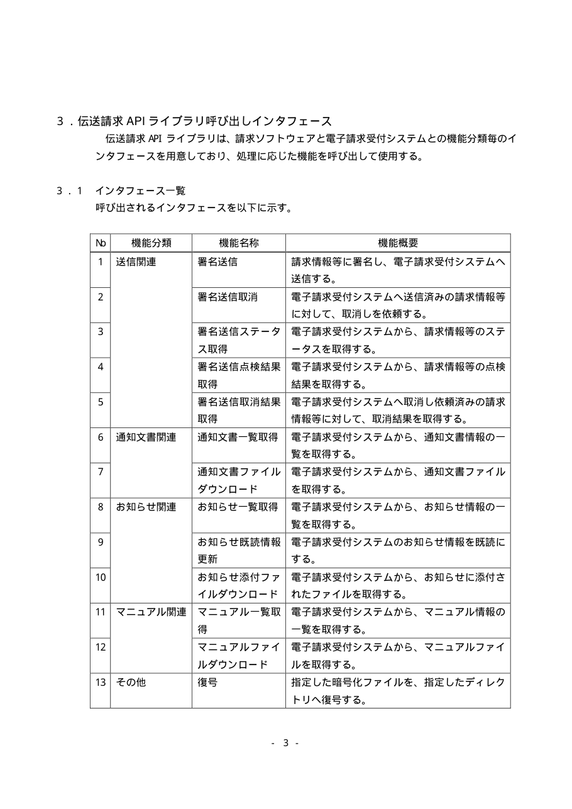
| 項番 | 項目名 | 属性 | 桁数 | 内容 | 必須 | 備考 | その他の列 |
|---|---|---|---|---|---|---|---|
| 1 | 署名送信 | 請求情報等に署名し、電子請求受付システムへ送信する。 | 機能分類: 送信関連 | ||||
| 2 | 署名送信取消 | 電子請求受付システムへ送信済みの請求情報等に対して、取消しを依頼する。 | 機能分類: 送信関連 | ||||
| 3 | 署名送信ステータス取得 | 電子請求受付システムから、請求情報等のステータスを取得する。 | 機能分類: 送信関連 | ||||
| 4 | 署名送信点検結果取得 | 電子請求受付システムから、請求情報等の点検結果を取得する。 | 機能分類: 送信関連 | ||||
| 5 | 署名送信取消結果取得 | 電子請求受付システムへ取消し依頼済みの請求情報等に対して、取消結果を取得する。 | 機能分類: 送信関連 | ||||
| 6 | 通知文書一覧取得 | 電子請求受付システムから、通知文書情報の一覧を取得する。 | 機能分類: 通知文書関連 | ||||
| 7 | 通知文書ファイルダウンロード | 電子請求受付システムから、通知文書ファイルを取得する。 | 機能分類: 通知文書関連 | ||||
| 8 | お知らせ一覧取得 | 電子請求受付システムから、お知らせ情報の一覧を取得する。 | 機能分類: お知らせ関連 | ||||
| 9 | お知らせ既読情報更新 | 電子請求受付システムのお知らせ情報を既読にする。 | 機能分類: お知らせ関連 | ||||
| 10 | お知らせ添付ファイルダウンロード | 電子請求受付システムから、お知らせに添付されたファイルを取得する。 | 機能分類: お知らせ関連 | ||||
| 11 | マニュアル一覧取得 | 電子請求受付システムから、マニュアル情報の一覧を取得する。 | 機能分類: マニュアル関連 | ||||
| 12 | マニュアルファイルダウンロード | 電子請求受付システムから、マニュアルファイルを取得する。 | 機能分類: マニュアル関連 | ||||
| 13 | 復号 | 指定した暗号化ファイルを、指定したディレクトリへ復号する。 | 機能分類: その他 |
| 項番 | 項目名 | 属性 | 桁数 | 内容 | 必須 | 備考 | その他の列 |
|---|---|---|---|---|---|---|---|
| 1 | 署名送信 | 請求情報等に署名し、電子請求受付システムへ送信する。 | 機能分類: 送信関連 | ||||
| 2 | 署名送信取消 | 電子請求受付システムへ送信済みの請求情報等に対して、取消しを依頼する。 | 機能分類: 送信関連 | ||||
| 3 | 署名送信ステータス取得 | 電子請求受付システムから、請求情報等のステータスを取得する。 | 機能分類: 送信関連 | ||||
| 4 | 署名送信点検結果取得 | 電子請求受付システムから、請求情報等の点検結果を取得する。 | 機能分類: 送信関連 | ||||
| 5 | 署名送信取消結果取得 | 電子請求受付システムへ取消し依頼済みの請求情報等に対して、取消結果を取得する。 | 機能分類: 送信関連 | ||||
| 6 | 通知文書一覧取得 | 電子請求受付システムから、通知文書情報の一覧を取得する。 | 機能分類: 通知文書関連 | ||||
| 7 | 通知文書ファイルダウンロード | 電子請求受付システムから、通知文書ファイルを取得する。 | 機能分類: 通知文書関連 | ||||
| 8 | お知らせ一覧取得 | 電子請求受付システムから、お知らせ情報の一覧を取得する。 | 機能分類: お知らせ関連 | ||||
| 9 | お知らせ既読情報更新 | 電子請求受付システムのお知らせ情報を既読にする。 | 機能分類: お知らせ関連 | ||||
| 10 | お知らせ添付ファイルダウンロード | 電子請求受付システムから、お知らせに添付されたファイルを取得する。 | 機能分類: お知らせ関連 | ||||
| 11 | マニュアル一覧取得 | 電子請求受付システムから、マニュアル情報の一覧を取得する。 | 機能分類: マニュアル関連 | ||||
| 12 | マニュアルファイルダウンロード | 電子請求受付システムから、マニュアルファイルを取得する。 | 機能分類: マニュアル関連 | ||||
| 13 | 復号 | 指定した暗号化ファイルを、指定したディレクトリへ復号する。 | 機能分類: その他 |
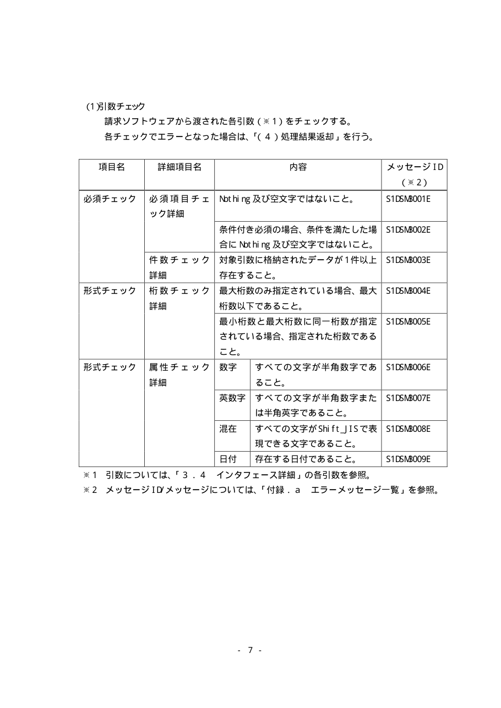
| 項番 | 項目名 | 属性 | 桁数 | 内容 | 必須 | 備考 | その他の列 |
|---|---|---|---|---|---|---|---|
| 必須チェック > 必須項目チェック詳細 | Nothing 及び空文字ではないこと。 | 詳細項目名: 必須項目チェック詳細 メッセージ ID (※2): S1DSMB001E | |||||
| 必須チェック > 必須項目チェック詳細 | 条件付き必須の場合、条件を満たした場合に Nothing 及び空文字ではないこと。 | 詳細項目名: 必須項目チェック詳細 メッセージ ID (※2): S1DSMB002E | |||||
| 必須チェック > 件数チェック詳細 | 対象引数に格納されたデータが1件以上存在すること。 | 詳細項目名: 件数チェック詳細 メッセージ ID (※2): S1DSMB003E | |||||
| 形式チェック > 桁数チェック詳細 | 最大桁数のみ指定されている場合、最大桁数以下であること。 | 詳細項目名: 桁数チェック詳細 メッセージ ID (※2): S1DSMB004E | |||||
| 形式チェック > 桁数チェック詳細 | 最小桁数と最大桁数に同一桁数が指定されている場合、指定された桁数であること。 | 詳細項目名: 桁数チェック詳細 メッセージ ID (※2): S1DSMB005E | |||||
| 形式チェック > 属性チェック詳細 > 数字 | すべての文字が半角数字であること。 | 詳細項目名: 属性チェック詳細 メッセージ ID (※2): S1DSMB006E | |||||
| 形式チェック > 属性チェック詳細 > 英数字 | すべての文字が半角数字または半角英字であること。 | 詳細項目名: 属性チェック詳細 メッセージ ID (※2): S1DSMB007E | |||||
| 形式チェック > 属性チェック詳細 > 混在 | すべての文字が Shift_JIS で表現できる文字であること。 | 詳細項目名: 属性チェック詳細 メッセージ ID (※2): S1DSMB008E | |||||
| 形式チェック > 属性チェック詳細 > 日付 | 存在する日付であること。 | 詳細項目名: 属性チェック詳細 メッセージ ID (※2): S1DSMB009E |
| 項番 | 項目名 | 属性 | 桁数 | 内容 | 必須 | 備考 | その他の列 |
|---|---|---|---|---|---|---|---|
| 必須チェック | Nothing 及び空文字ではないこと。 | 詳細項目名: 必須項目チェック詳細 メッセージID（※2）: S1DSMB001E | |||||
| 必須チェック | 条件付き必須の場合、条件を満たした場合に Nothing 及び空文字ではないこと。 | 詳細項目名: 必須項目チェック詳細 メッセージID（※2）: S1DSMB002E | |||||
| 必須チェック | 対象引数に格納されたデータが1件以上存在すること。 | 詳細項目名: 件数チェック詳細 メッセージID（※2）: S1DSMB003E | |||||
| 形式チェック | 最大桁数のみ指定されている場合、最大桁数以下であること。 | 詳細項目名: 桁数チェック詳細 メッセージID（※2）: S1DSMB004E | |||||
| 形式チェック | 最小桁数と最大桁数に同一桁数が指定されている場合、指定された桁数であること。 | 詳細項目名: 桁数チェック詳細 メッセージID（※2）: S1DSMB005E | |||||
| 形式チェック | 数字: すべての文字が半角数字であること。 | 詳細項目名: 属性チェック詳細 メッセージID（※2）: S1DSMB006E | |||||
| 形式チェック | 英数字: すべての文字が半角数字または半角英字であること。 | 詳細項目名: 属性チェック詳細 メッセージID（※2）: S1DSMB007E | |||||
| 形式チェック | 混在: すべての文字がShift_JISで表現できる文字であること。 | 詳細項目名: 属性チェック詳細 メッセージID（※2）: S1DSMB008E | |||||
| 形式チェック | 日付: 存在する日付であること。 | 詳細項目名: 属性チェック詳細 メッセージID（※2）: S1DSMB009E |
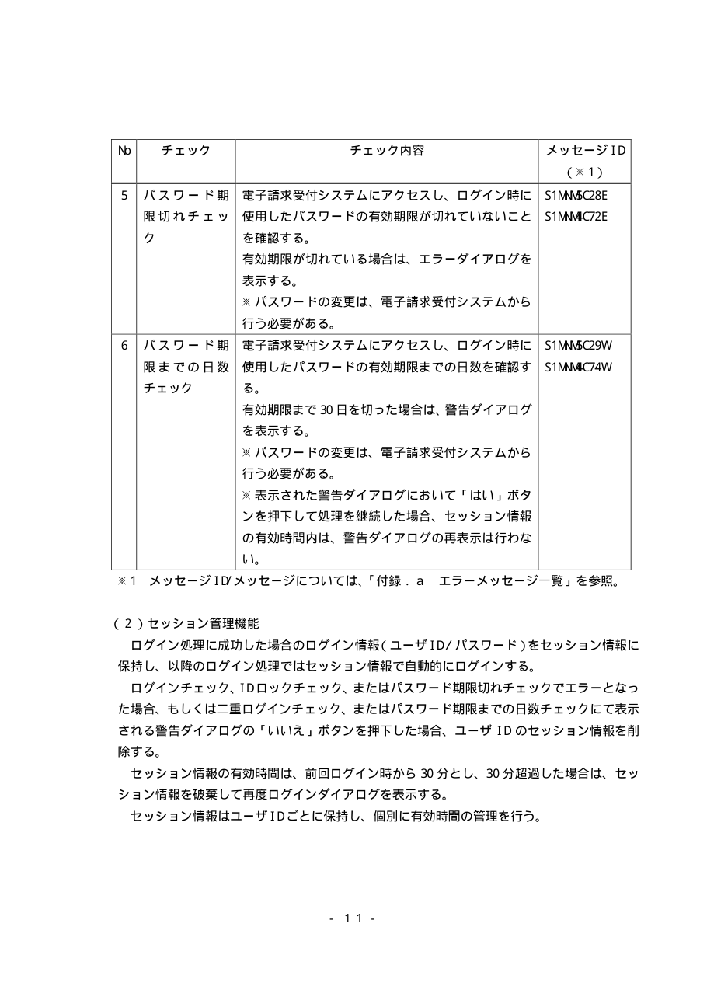
| 項番 | 項目名 | 属性 | 桁数 | 内容 | 必須 | 備考 | その他の列 |
|---|---|---|---|---|---|---|---|
| 5 | パスワード期限切れチェック | 電子請求受付システムにアクセスし、ログイン時に使用したパスワードの有効期限が切れていないことを確認する。 有効期限が切れている場合は、エラーダイアログを表示する。 ※ パスワードの変更は、電子請求受付システムから行う必要がある。 | メッセージID（※1）: S1MNM5C28E S1MNM4C72E | ||||
| 6 | パスワード期限までの日数チェック | 電子請求受付システムにアクセスし、ログイン時に使用したパスワードの有効期限までの日数を確認する。 有効期限まで30日を切った場合は、警告ダイアログを表示する。 ※ パスワードの変更は、電子請求受付システムから行う必要がある。 ※ 表示された警告ダイアログにおいて「はい」ボタンを押下して処理を継続した場合、セッション情報の有効時間内は、警告ダイアログの再表示は行わない。 | メッセージID（※1）: S1MNM5C29W S1MNM4C74W |
| 項番 | 項目名 | 属性 | 桁数 | 内容 | 必須 | 備考 | その他の列 |
|---|---|---|---|---|---|---|---|
| 5 | パスワード期限切れチェック | 電子請求受付システムにアクセスし、ログイン時に使用したパスワードの有効期限が切れていないことを確認する。 有効期限が切れている場合は、エラーダイアログを表示する。 ※パスワードの変更は、電子請求受付システムから行う必要がある。 | メッセージID（※1）: S1MNM5C28E S1MNM4C72E | ||||
| 6 | パスワード期限までの日数チェック | 電子請求受付システムにアクセスし、ログイン時に使用したパスワードの有効期限までの日数を確認する。 有効期限まで30日を切った場合は、警告ダイアログを表示する。 ※パスワードの変更は、電子請求受付システムから行う必要がある。 ※表示された警告ダイアログにおいて「はい」ボタンを押下して処理を継続した場合、セッション情報の有効時間内は、警告ダイアログの再表示は行わない。 | メッセージID（※1）: S1MNM5C29W S1MNM4C74W |
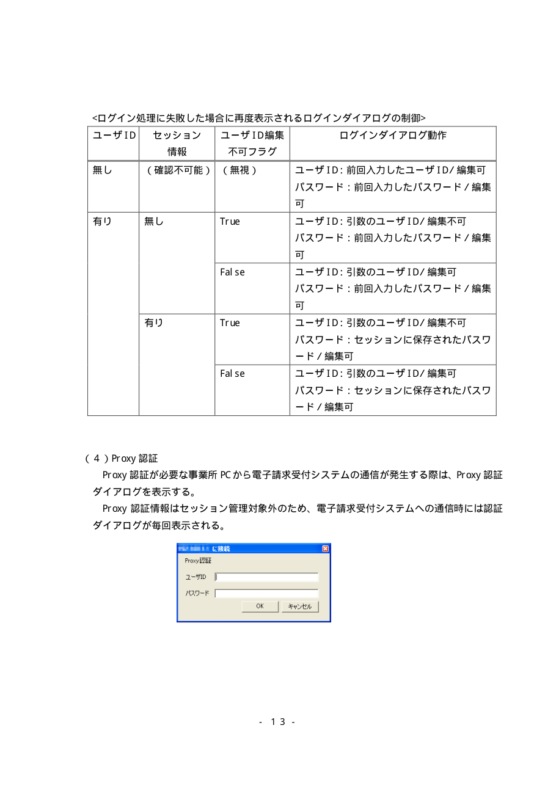
| 項番 | 項目名 | 属性 | 桁数 | 内容 | 必須 | 備考 | その他の列 |
|---|---|---|---|---|---|---|---|
| 無し | ユーザID: 前回入力したユーザID/編集可 パスワード：前回入力したパスワード/編集可 | セッション情報: （確認不可能） ユーザID編集不可フラグ: （無視） | |||||
| 有り | ユーザID: 引数のユーザID/編集不可 パスワード：前回入力したパスワード/編集可 | セッション情報: 無し ユーザID編集不可フラグ: True | |||||
| 有り | ユーザID: 引数のユーザID/編集可 パスワード：前回入力したパスワード/編集可 | セッション情報: 無し ユーザID編集不可フラグ: False | |||||
| 有り | ユーザID: 引数のユーザID/編集不可 パスワード：セッションに保存されたパスワード/編集可 | セッション情報: 有り ユーザID編集不可フラグ: True | |||||
| 有り | ユーザID: 引数のユーザID/編集可 パスワード：セッションに保存されたパスワード/編集可 | セッション情報: 有り ユーザID編集不可フラグ: False |
| 項番 | 項目名 | 属性 | 桁数 | 内容 | 必須 | 備考 | その他の列 |
|---|---|---|---|---|---|---|---|
| ユーザID:前回入力したユーザID/編集可 パスワード:前回入力したパスワード/編集可 | ユーザID: 無し セッション情報: (確認不可能) ユーザID編集不可フラグ: (無視) | ||||||
| ユーザID:引数のユーザID/編集不可 パスワード:前回入力したパスワード/編集可 | ユーザID: 有り セッション情報: 無し ユーザID編集不可フラグ: True | ||||||
| ユーザID:引数のユーザID/編集可 パスワード:前回入力したパスワード/編集可 | ユーザID: 有り セッション情報: 無し ユーザID編集不可フラグ: False | ||||||
| ユーザID:引数のユーザID/編集不可 パスワード:セッションに保存されたパスワード/編集可 | ユーザID: 有り セッション情報: 有り ユーザID編集不可フラグ: True | ||||||
| ユーザID:引数のユーザID/編集可 パスワード:セッションに保存されたパスワード/編集可 | ユーザID: 有り セッション情報: 有り ユーザID編集不可フラグ: False |
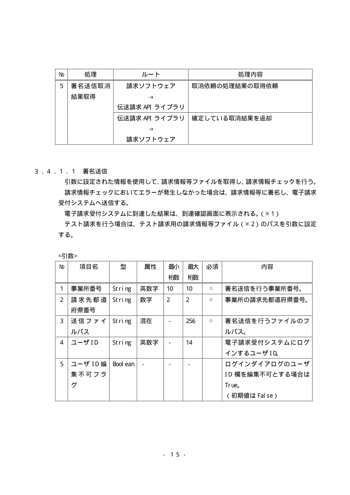
| 項番 | 項目名 | 属性 | 桁数 | 内容 | 必須 | 備考 | その他の列 |
|---|---|---|---|---|---|---|---|
| 5 | 署名送信取消結果取得 | 取消依頼の処理結果の取得依頼 | ルート: 請求ソフトウェア → 伝送請求APIライブラリ | ||||
| 5 | 署名送信取消結果取得 | 確定している取消結果を返却 | ルート: 伝送請求APIライブラリ → 請求ソフトウェア |
| 項番 | 項目名 | 属性 | 桁数 | 内容 | 必須 | 備考 | その他の列 |
|---|---|---|---|---|---|---|---|
| 1 | 事業所番号 | 英数字 | 10 | 署名送信を行う事業所番号。 | ○ | 型: String 最小桁数: 10 | |
| 2 | 請求先都道府県番号 | 数字 | 2 | 事業所の請求先都道府県番号。 | ○ | 型: String 最小桁数: 2 | |
| 3 | 送信ファイルパス | 混在 | 256 | 署名送信を行うファイルのフルパス。 | ○ | 型: String 最小桁数: - | |
| 4 | ユーザID | 英数字 | 14 | 電子請求受付システムにログインするユーザID。 | 型: String 最小桁数: - | ||
| 5 | ユーザID編集不可フラグ | - | - | ログインダイアログのユーザID欄を編集不可とする場合はTrue。（初期値はFalse） | 型: Boolean 最小桁数: - |
| 項番 | 項目名 | 属性 | 桁数 | 内容 | 必須 | 備考 | その他の列 |
|---|---|---|---|---|---|---|---|
| 5 | 署名送信取消結果取得 | 取消依頼の処理結果の取得依頼 | ルート: 請求ソフトウェア → 伝送請求 API ライブラリ | ||||
| 5 | 署名送信取消結果取得 | 確定している取消結果を返却 | ルート: 伝送請求 API ライブラリ → 請求ソフトウェア |
| 項番 | 項目名 | 属性 | 桁数 | 内容 | 必須 | 備考 | その他の列 |
|---|---|---|---|---|---|---|---|
| 1 | 事業所番号 | 英数字 | 署名送信を行う事業所番号。 | ○ | 型: String 最小桁数: 10 最大桁数: 10 | ||
| 2 | 請求先都道府県番号 | 数字 | 事業所の請求先都道府県番号。 | ○ | 型: String 最小桁数: 2 最大桁数: 2 | ||
| 3 | 送信ファイルパス | 混在 | 署名送信を行うファイルのフルパス。 | ○ | 型: String 最小桁数: - 最大桁数: 256 | ||
| 4 | ユーザID | 英数字 | 電子請求受付システムにログインするユーザID。 | 型: String 最小桁数: - 最大桁数: 14 | |||
| 5 | ユーザID編集不可フラグ | - | ログインダイアログのユーザID欄を編集不可とする場合はTrue。 (初期値はFalse) | 型: Boolean 最小桁数: - 最大桁数: - |
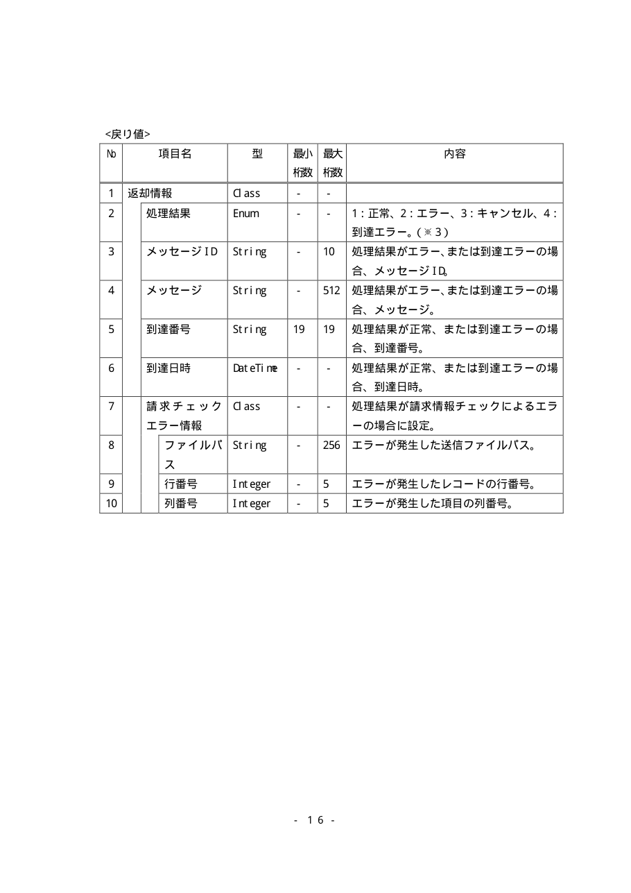
| 項番 | 項目名 | 属性 | 桁数 | 内容 | 必須 | 備考 | その他の列 |
|---|---|---|---|---|---|---|---|
| 1 | 返却情報 | Class | - | 最小桁数: - | |||
| 2 | 返却情報 > 処理結果 | Enum | - | 1：正常、2：エラー、3：キャンセル、4：到達エラー。（※3） | 最小桁数: - | ||
| 3 | 返却情報 > メッセージID | String | 10 | 処理結果がエラー、または到達エラーの場合、メッセージID。 | 最小桁数: - | ||
| 4 | 返却情報 > メッセージ | String | 512 | 処理結果がエラー、または到達エラーの場合、メッセージ。 | 最小桁数: - | ||
| 5 | 返却情報 > 到達番号 | String | 19 | 処理結果が正常、または到達エラーの場合、到達番号。 | 最小桁数: 19 | ||
| 6 | 返却情報 > 到達日時 | DateTime | - | 処理結果が正常、または到達エラーの場合、到達日時。 | 最小桁数: - | ||
| 7 | 返却情報 > 請求チェックエラー情報 | Class | - | 処理結果が請求情報チェックによるエラーの場合に設定。 | 最小桁数: - | ||
| 8 | 返却情報 > 請求チェックエラー情報 > ファイルパス | String | 256 | エラーが発生した送信ファイルパス。 | 最小桁数: - | ||
| 9 | 返却情報 > 請求チェックエラー情報 > 行番号 | Integer | 5 | エラーが発生したレコードの行番号。 | 最小桁数: - | ||
| 10 | 返却情報 > 請求チェックエラー情報 > 列番号 | Integer | 5 | エラーが発生した項目の列番号。 | 最小桁数: - |
| 項番 | 項目名 | 属性 | 桁数 | 内容 | 必須 | 備考 | その他の列 |
|---|---|---|---|---|---|---|---|
| 1 | 返却情報 | Class | 最小桁数: - 最大桁数: - | ||||
| 2 | 返却情報 > 処理結果 | Enum | 1:正常、2:エラー、3:キャンセル、4:到達エラー。(※3) | 最小桁数: - 最大桁数: - | |||
| 3 | 返却情報 > メッセージID | String | 処理結果がエラー、または到達エラーの場合、メッセージID。 | 最小桁数: - 最大桁数: 10 | |||
| 4 | 返却情報 > メッセージ | String | 処理結果がエラー、または到達エラーの場合、メッセージ。 | 最小桁数: - 最大桁数: 512 | |||
| 5 | 返却情報 > 到達番号 | String | 処理結果が正常、または到達エラーの場合、到達番号。 | 最小桁数: 19 最大桁数: 19 | |||
| 6 | 返却情報 > 到達日時 | DateTime | 処理結果が正常、または到達エラーの場合、到達日時。 | 最小桁数: - 最大桁数: - | |||
| 7 | 返却情報 > 請求チェックエラー情報 | Class | 処理結果が請求情報チェックによるエラーの場合に設定。 | 最小桁数: - 最大桁数: - | |||
| 8 | 返却情報 > 請求チェックエラー情報 > ファイルパス | String | エラーが発生した送信ファイルパス。 | 最小桁数: - 最大桁数: 256 | |||
| 9 | 返却情報 > 請求チェックエラー情報 > 行番号 | Integer | エラーが発生したレコードの行番号。 | 最小桁数: - 最大桁数: 5 | |||
| 10 | 返却情報 > 請求チェックエラー情報 > 列番号 | Integer | エラーが発生した項目の列番号。 | 最小桁数: - 最大桁数: 5 |
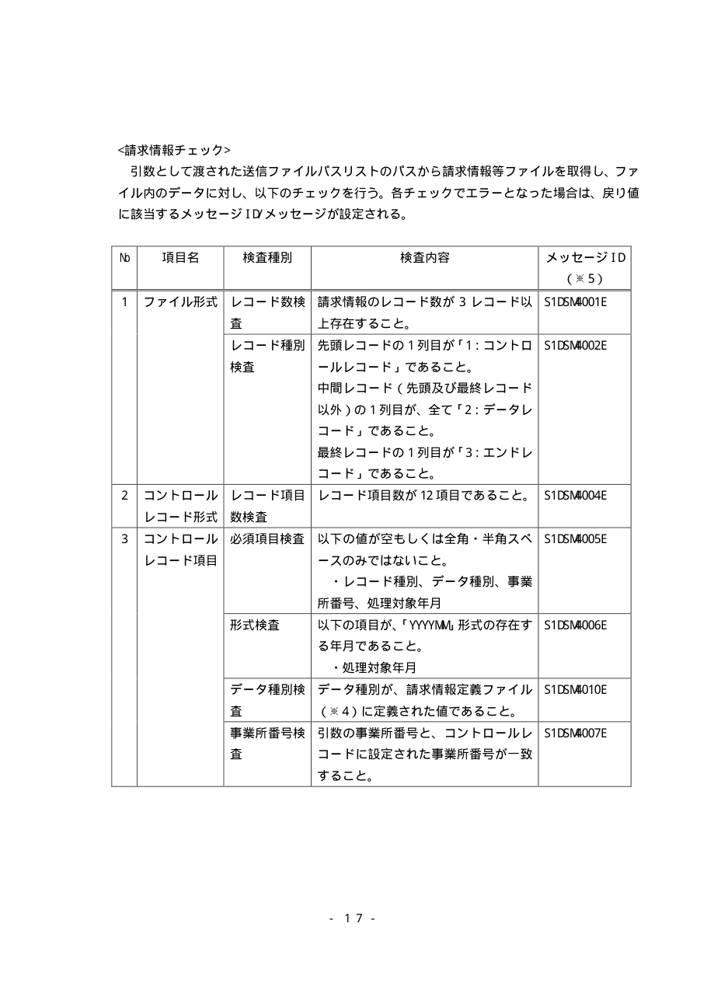
| 項番 | 項目名 | 属性 | 桁数 | 内容 | 必須 | 備考 | その他の列 |
|---|---|---|---|---|---|---|---|
| 1 | ファイル形式 > レコード数検査 | 請求情報のレコード数が 3 レコード以上存在すること。 | メッセージID（※5）: S1DSM4001E | ||||
| 1 | ファイル形式 > レコード種別検査 | 先頭レコードの1列目が「1:コントロールレコード」であること。 中間レコード（先頭及び最終レコード以外）の1列目が、全て「2:データレコード」であること。 最終レコードの1列目が「3:エンドレコード」であること。 | メッセージID（※5）: S1DSM4002E | ||||
| 2 | コントロールレコード形式 > レコード項目数検査 | レコード項目数が 12 項目であること。 | メッセージID（※5）: S1DSM4004E | ||||
| 3 | コントロールレコード項目 > 必須項目検査 | 以下の値が空もしくは全角・半角スペースのみではないこと。 ・レコード種別、データ種別、事業所番号、処理対象年月 | メッセージID（※5）: S1DSM4005E | ||||
| 3 | コントロールレコード項目 > 形式検査 | 以下の項目が、「YYYYMM」形式の存在する年月であること。 ・処理対象年月 | メッセージID（※5）: S1DSM4006E | ||||
| 3 | コントロールレコード項目 > データ種別検査 | データ種別が、請求情報定義ファイル（※4）に定義された値であること。 | メッセージID（※5）: S1DSM4010E | ||||
| 3 | コントロールレコード項目 > 事業所番号検査 | 引数の事業所番号と、コントロールレコードに設定された事業所番号が一致すること。 | メッセージID（※5）: S1DSM4007E |
| 項番 | 項目名 | 属性 | 桁数 | 内容 | 必須 | 備考 | その他の列 |
|---|---|---|---|---|---|---|---|
| 1 | ファイル形式 | 請求情報のレコード数が3レコード以上存在すること。 | 検査種別: レコード数検査 メッセージID（※5）: S1DSM4001E | ||||
| 1 | ファイル形式 | 先頭レコードの1列目が「1:コントロールレコード」であること。 中間レコード(先頭及び最終レコード以外)の1列目が、全て「2:データレコード」であること。 最終レコードの1列目が「3:エンドレコード」であること。 | 検査種別: レコード種別検査 メッセージID（※5）: S1DSM4002E | ||||
| 2 | コントロールレコード形式 | レコード項目数が12項目であること。 | 検査種別: レコード項目数検査 メッセージID（※5）: S1DSM4004E | ||||
| 3 | コントロールレコード項目 | 以下の値が空もしくは全角・半角スペースのみではないこと。 ・レコード種別、データ種別、事業所番号、処理対象年月 | 検査種別: 必須項目検査 メッセージID（※5）: S1DSM4005E | ||||
| 3 | コントロールレコード項目 | 以下の項目が、「YYYYMM」形式の存在する年月であること。 ・処理対象年月 | 検査種別: 形式検査 メッセージID（※5）: S1DSM4006E | ||||
| 3 | コントロールレコード項目 | データ種別が、請求情報定義ファイル(※4)に定義された値であること。 | 検査種別: データ種別検査 メッセージID（※5）: S1DSM4010E | ||||
| 3 | コントロールレコード項目 | 引数の事業所番号と、コントロールレコードに設定された事業所番号が一致すること。 | 検査種別: 事業所番号検査 メッセージID（※5）: S1DSM4007E |
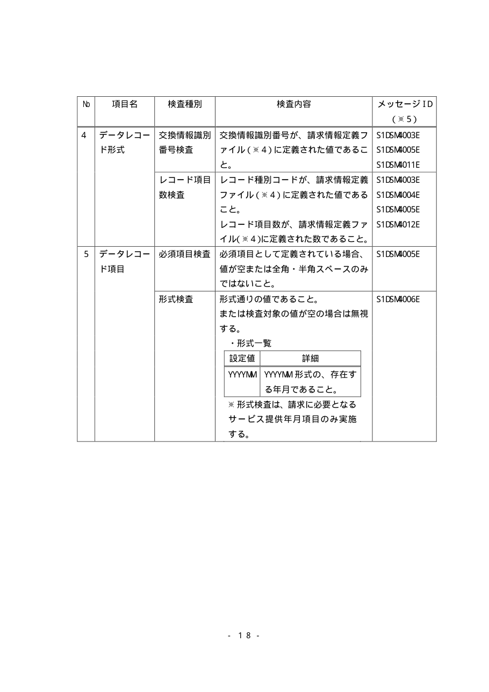
| 項番 | 項目名 | 属性 | 桁数 | 内容 | 必須 | 備考 | その他の列 |
|---|---|---|---|---|---|---|---|
| 4 | データレコード形式 | 交換情報識別番号が、請求情報定義ファイル(※4)に定義された値であること。 | 検査種別: 交換情報識別番号検査 メッセージID（※5）: S1DSM4003E S1DSM4005E S1DSM4011E | ||||
| 4 | データレコード形式 | レコード種別コードが、請求情報定義ファイル(※4)に定義された値であること。 レコード項目数が、請求情報定義ファイル(※4)に定義された数であること。 | 検査種別: レコード項目数検査 メッセージID（※5）: S1DSM4003E S1DSM4004E S1DSM4005E S1DSM4012E | ||||
| 5 | データレコード項目 | 必須項目として定義されている場合、値が空または全角・半角スペースのみではないこと。 | 検査種別: 必須項目検査 メッセージID（※5）: S1DSM4005E | ||||
| 5 | データレコード項目 | 形式通りの値であること。 または検査対象の値が空の場合は無視する。 ・形式一覧 設定値 | 詳細 YYYYMM | YYYYMM形式の、存在する年月であること。 ※ 形式検査は、請求に必要となるサービス提供年月項目のみ実施する。 | 検査種別: 形式検査 メッセージID（※5）: S1DSM4006E |
| 項番 | 項目名 | 属性 | 桁数 | 内容 | 必須 | 備考 | その他の列 |
|---|---|---|---|---|---|---|---|
| 4 | データレコード形式 | 交換情報識別番号が、請求情報定義ファイル(※4)に定義された値であること。 | 検査種別: 交換情報識別番号検査 メッセージID(※5): S1DSM4003E S1DSM4005E S1DSM4011E | ||||
| 4 | データレコード形式 | レコード種別コードが、請求情報定義ファイル(※4)に定義された値であること。 レコード項目数が、請求情報定義ファイル(※4)に定義された数であること。 | 検査種別: レコード項目数検査 メッセージID(※5): S1DSM4003E S1DSM4004E S1DSM4005E S1DSM4012E | ||||
| 5 | データレコード項目 | 必須項目として定義されている場合、値が空または全角・半角スペースのみではないこと。 | 検査種別: 必須項目検査 メッセージID(※5): S1DSM4005E | ||||
| 5 | データレコード項目 | 形式通りの値であること。 または検査対象の値が空の場合は無視する。 ・形式一覧 [図] ※形式検査は、請求に必要となるサービス提供年月項目のみ実施する。 | 検査種別: 形式検査 メッセージID(※5): S1DSM4006E |
| 項番 | 項目名 | 属性 | 桁数 | 内容 | 必須 | 備考 | その他の列 |
|---|---|---|---|---|---|---|---|
| YYYYMM | YYYYMM形式の、存在する年月であること。 |
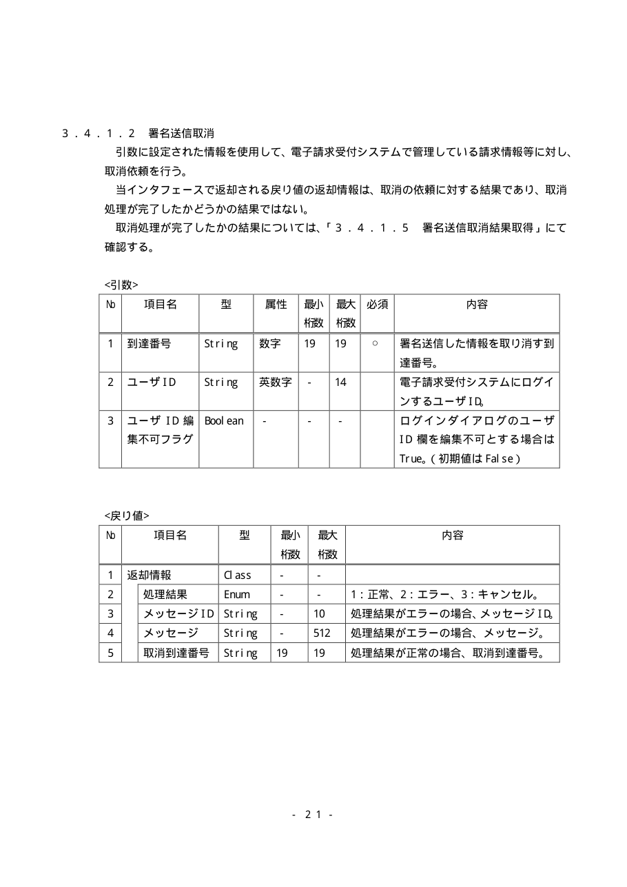
| 項番 | 項目名 | 属性 | 桁数 | 内容 | 必須 | 備考 | その他の列 |
|---|---|---|---|---|---|---|---|
| 1 | 到達番号 | 数字 | 19 | 署名送信した情報を取り消す到達番号。 | ○ | 型: String 最小桁数: 19 | |
| 2 | ユーザID | 英数字 | 14 | 電子請求受付システムにログインするユーザID。 | 型: String 最小桁数: - | ||
| 3 | ユーザ ID 編集不可フラグ | - | - | ログインダイアログのユーザ ID 欄を編集不可とする場合は True。（初期値は False） | 型: Boolean 最小桁数: - |
| 項番 | 項目名 | 属性 | 桁数 | 内容 | 必須 | 備考 | その他の列 |
|---|---|---|---|---|---|---|---|
| 1 | 返却情報 | - | 型: Class 最小桁数: - | ||||
| 2 | 返却情報 > 処理結果 | - | 1：正常、2：エラー、3：キャンセル。 | 型: Enum 最小桁数: - | |||
| 3 | 返却情報 > メッセージID | 10 | 処理結果がエラーの場合、メッセージID。 | 型: String 最小桁数: - | |||
| 4 | 返却情報 > メッセージ | 512 | 処理結果がエラーの場合、メッセージ。 | 型: String 最小桁数: - | |||
| 5 | 返却情報 > 取消到達番号 | 19 | 処理結果が正常の場合、取消到達番号。 | 型: String 最小桁数: 19 |
| 項番 | 項目名 | 属性 | 桁数 | 内容 | 必須 | 備考 | その他の列 |
|---|---|---|---|---|---|---|---|
| 1 | 到達番号 | 数字 | 署名送信した情報を取り消す到達番号。 | ○ | 型: String 最小桁数: 19 最大桁数: 19 | ||
| 2 | ユーザID | 英数字 | 電子請求受付システムにログインするユーザID。 | 型: String 最小桁数: - 最大桁数: 14 | |||
| 3 | ユーザID編集不可フラグ | ログインダイアログのユーザID欄を編集不可とする場合はTrue。(初期値はFalse) | 型: Boolean 最小桁数: - 最大桁数: - |
| 項番 | 項目名 | 属性 | 桁数 | 内容 | 必須 | 備考 | その他の列 |
|---|---|---|---|---|---|---|---|
| 1 | 返却情報 | Class | 最小桁数: - 最大桁数: - | ||||
| 2 | 返却情報 > 処理結果 | Enum | 1:正常、2:エラー、3:キャンセル。 | 最小桁数: - 最大桁数: - | |||
| 3 | 返却情報 > メッセージID | String | 処理結果がエラーの場合、メッセージID。 | 最小桁数: - 最大桁数: 10 | |||
| 4 | 返却情報 > メッセージ | String | 処理結果がエラーの場合、メッセージ。 | 最小桁数: - 最大桁数: 512 | |||
| 5 | 返却情報 > 取消到達番号 | String | 処理結果が正常の場合、取消到達番号。 | 最小桁数: 19 最大桁数: 19 |
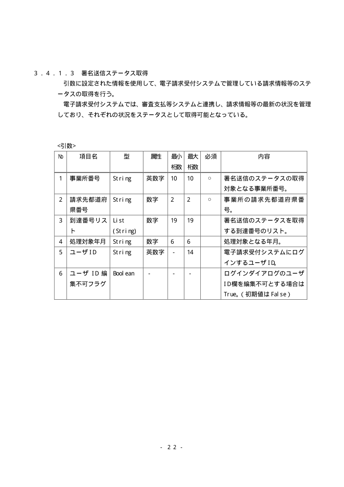
| 項番 | 項目名 | 属性 | 桁数 | 内容 | 必須 | 備考 | その他の列 |
|---|---|---|---|---|---|---|---|
| 1 | 事業所番号 | 英数字 | 10 | 署名送信のステータスの取得対象となる事業所番号。 | ○ | 型: String 最小桁数: 10 | |
| 2 | 請求先都道府県番号 | 数字 | 2 | 事業所の請求先都道府県番号。 | ○ | 型: String 最小桁数: 2 | |
| 3 | 到達番号リスト | 数字 | 19 | 署名送信のステータスを取得する到達番号のリスト。 | 型: List (String) 最小桁数: 19 | ||
| 4 | 処理対象年月 | 数字 | 6 | 処理対象となる年月。 | 型: String 最小桁数: 6 | ||
| 5 | ユーザID | 英数字 | 14 | 電子請求受付システムにログインするユーザID。 | 型: String 最小桁数: - | ||
| 6 | ユーザID編集不可フラグ | - | - | ログインダイアログのユーザID欄を編集不可とする場合はTrue。(初期値はFalse) | 型: Boolean 最小桁数: - |
| 項番 | 項目名 | 属性 | 桁数 | 内容 | 必須 | 備考 | その他の列 |
|---|---|---|---|---|---|---|---|
| 1 | 事業所番号 | 英数字 | 署名送信のステータスの取得対象となる事業所番号。 | ○ | 型: String 最小桁数: 10 最大桁数: 10 | ||
| 2 | 請求先都道府県番号 | 数字 | 事業所の請求先都道府県番号。 | ○ | 型: String 最小桁数: 2 最大桁数: 2 | ||
| 3 | 到達番号リスト | 数字 | 署名送信のステータスを取得する到達番号のリスト。 | 型: List (String) 最小桁数: 19 最大桁数: 19 | |||
| 4 | 処理対象年月 | 数字 | 処理対象となる年月。 | 型: String 最小桁数: 6 最大桁数: 6 | |||
| 5 | ユーザID | 英数字 | 電子請求受付システムにログインするユーザID。 | 型: String 最小桁数: - 最大桁数: 14 | |||
| 6 | ユーザID編集不可フラグ | - | ログインダイアログのユーザID欄を編集不可とする場合はTrue。(初期値はFalse) | 型: Boolean 最小桁数: - 最大桁数: - |
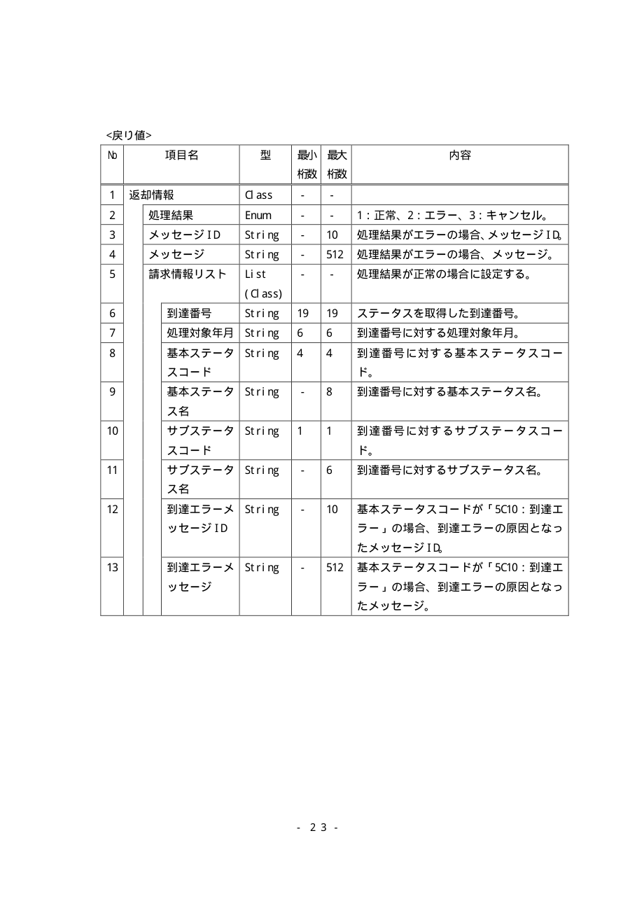
| 項番 | 項目名 | 属性 | 桁数 | 内容 | 必須 | 備考 | その他の列 |
|---|---|---|---|---|---|---|---|
| 1 | 返却情報 | Class | - | 最小桁数: - | |||
| 2 | 返却情報 > 処理結果 | Enum | - | 1：正常、2：エラー、3：キャンセル。 | 最小桁数: - | ||
| 3 | 返却情報 > メッセージＩＤ | String | 10 | 処理結果がエラーの場合、メッセージＩＤ。 | 最小桁数: - | ||
| 4 | 返却情報 > メッセージ | String | 512 | 処理結果がエラーの場合、メッセージ。 | 最小桁数: - | ||
| 5 | 返却情報 > 請求情報リスト | List (Class) | - | 処理結果が正常の場合に設定する。 | 最小桁数: - | ||
| 6 | 返却情報 > 請求情報リスト > 到達番号 | String | 19 | ステータスを取得した到達番号。 | 最小桁数: 19 | ||
| 7 | 返却情報 > 請求情報リスト > 処理対象年月 | String | 6 | 到達番号に対する処理対象年月。 | 最小桁数: 6 | ||
| 8 | 返却情報 > 請求情報リスト > 基本ステータスコード | String | 4 | 到達番号に対する基本ステータスコード。 | 最小桁数: 4 | ||
| 9 | 返却情報 > 請求情報リスト > 基本ステータス名 | String | 8 | 到達番号に対する基本ステータス名。 | 最小桁数: - | ||
| 10 | 返却情報 > 請求情報リスト > サブステータスコード | String | 1 | 到達番号に対するサブステータスコード。 | 最小桁数: 1 | ||
| 11 | 返却情報 > 請求情報リスト > サブステータス名 | String | 6 | 到達番号に対するサブステータス名。 | 最小桁数: - | ||
| 12 | 返却情報 > 請求情報リスト > 到達エラーメッセージＩＤ | String | 10 | 基本ステータスコードが「5C10：到達エラー」の場合、到達エラーの原因となったメッセージＩＤ。 | 最小桁数: - | ||
| 13 | 返却情報 > 請求情報リスト > 到達エラーメッセージ | String | 512 | 基本ステータスコードが「5C10：到達エラー」の場合、到達エラーの原因となったメッセージ。 | 最小桁数: - |
| 項番 | 項目名 | 属性 | 桁数 | 内容 | 必須 | 備考 | その他の列 |
|---|---|---|---|---|---|---|---|
| 1 | 返却情報 | Class | 最小桁数: - 最大桁数: - | ||||
| 2 | 返却情報 > 処理結果 | Enum | 1:正常、2:エラー、3:キャンセル。 | 最小桁数: - 最大桁数: - | |||
| 3 | 返却情報 > メッセージID | String | 処理結果がエラーの場合、メッセージID。 | 最小桁数: - 最大桁数: 10 | |||
| 4 | 返却情報 > メッセージ | String | 処理結果がエラーの場合、メッセージ。 | 最小桁数: - 最大桁数: 512 | |||
| 5 | 返却情報 > 請求情報リスト | List(Class) | 処理結果が正常の場合に設定する。 | 最小桁数: - 最大桁数: - | |||
| 6 | 返却情報 > 請求情報リスト > 到達番号 | String | ステータスを取得した到達番号。 | 最小桁数: 19 最大桁数: 19 | |||
| 7 | 返却情報 > 請求情報リスト > 処理対象年月 | String | 到達番号に対する処理対象年月。 | 最小桁数: 6 最大桁数: 6 | |||
| 8 | 返却情報 > 請求情報リスト > 基本ステータスコード | String | 到達番号に対する基本ステータスコード。 | 最小桁数: 4 最大桁数: 4 | |||
| 9 | 返却情報 > 請求情報リスト > 基本ステータス名 | String | 到達番号に対する基本ステータス名。 | 最小桁数: - 最大桁数: 8 | |||
| 10 | 返却情報 > 請求情報リスト > サブステータスコード | String | 到達番号に対するサブステータスコード。 | 最小桁数: 1 最大桁数: 1 | |||
| 11 | 返却情報 > 請求情報リスト > サブステータス名 | String | 到達番号に対するサブステータス名。 | 最小桁数: - 最大桁数: 6 | |||
| 12 | 返却情報 > 請求情報リスト > 到達エラーメッセージID | String | 基本ステータスコードが「5C10:到達エラー」の場合、到達エラーの原因となったメッセージID。 | 最小桁数: - 最大桁数: 10 | |||
| 13 | 返却情報 > 請求情報リスト > 到達エラーメッセージ | String | 基本ステータスコードが「5C10:到達エラー」の場合、到達エラーの原因となったメッセージ。 | 最小桁数: - 最大桁数: 512 |
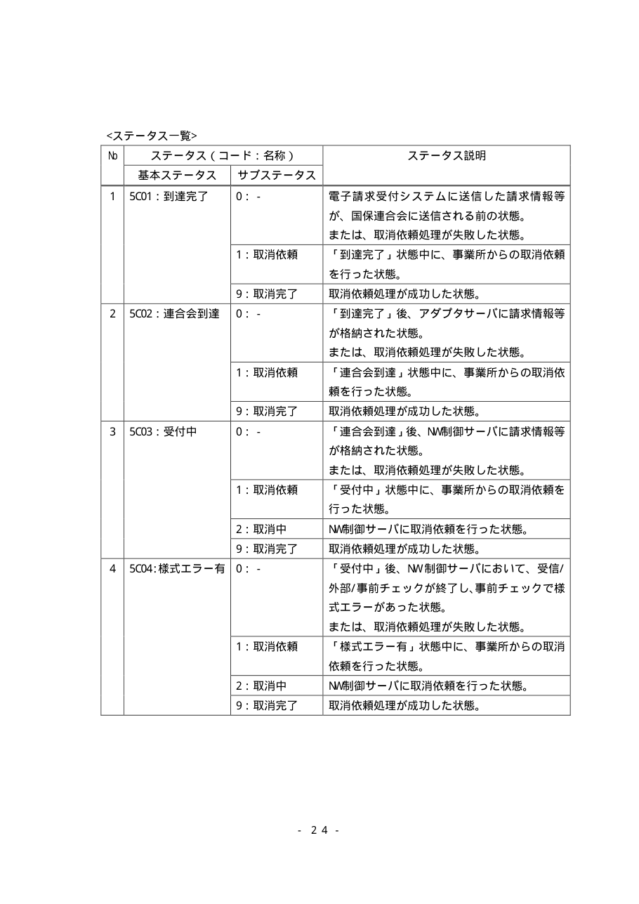
| 項番 | 項目名 | 属性 | 桁数 | 内容 | 必須 | 備考 | その他の列 |
|---|---|---|---|---|---|---|---|
| 1 | 5C01：到達完了 | 電子請求受付システムに送信した請求情報等が、国保連合会に送信される前の状態。 または、取消依頼処理が失敗した状態。 | ステータス（コード：名称） > サブステータス: 0：- | ||||
| 1 | 5C01：到達完了 | 「到達完了」状態中に、事業所からの取消依頼を行った状態。 | ステータス（コード：名称） > サブステータス: 1：取消依頼 | ||||
| 1 | 5C01：到達完了 | 取消依頼処理が成功した状態。 | ステータス（コード：名称） > サブステータス: 9：取消完了 | ||||
| 2 | 5C02：連合会到達 | 「到達完了」後、アダプタサーバに請求情報等が格納された状態。 または、取消依頼処理が失敗した状態。 | ステータス（コード：名称） > サブステータス: 0：- | ||||
| 2 | 5C02：連合会到達 | 「連合会到達」状態中に、事業所からの取消依頼を行った状態。 | ステータス（コード：名称） > サブステータス: 1：取消依頼 | ||||
| 2 | 5C02：連合会到達 | 取消依頼処理が成功した状態。 | ステータス（コード：名称） > サブステータス: 9：取消完了 | ||||
| 3 | 5C03：受付中 | 「連合会到達」後、NW制御サーバに請求情報等が格納された状態。 または、取消依頼処理が失敗した状態。 | ステータス（コード：名称） > サブステータス: 0：- | ||||
| 3 | 5C03：受付中 | 「受付中」状態中に、事業所からの取消依頼を行った状態。 | ステータス（コード：名称） > サブステータス: 1：取消依頼 | ||||
| 3 | 5C03：受付中 | NW制御サーバに取消依頼を行った状態。 | ステータス（コード：名称） > サブステータス: 2：取消中 | ||||
| 3 | 5C03：受付中 | 取消依頼処理が成功した状態。 | ステータス（コード：名称） > サブステータス: 9：取消完了 | ||||
| 4 | 5C04:様式エラー有 | 「受付中」後、NW制御サーバにおいて、受信/外部/事前チェックが終了し、事前チェックで様式エラーがあった状態。 または、取消依頼処理が失敗した状態。 | ステータス（コード：名称） > サブステータス: 0：- | ||||
| 4 | 5C04:様式エラー有 | 「様式エラー有」状態中に、事業所からの取消依頼を行った状態。 | ステータス（コード：名称） > サブステータス: 1：取消依頼 | ||||
| 4 | 5C04:様式エラー有 | NW制御サーバに取消依頼を行った状態。 | ステータス（コード：名称） > サブステータス: 2：取消中 | ||||
| 4 | 5C04:様式エラー有 | 取消依頼処理が成功した状態。 | ステータス（コード：名称） > サブステータス: 9：取消完了 |
| 項番 | 項目名 | 属性 | 桁数 | 内容 | 必須 | 備考 | その他の列 |
|---|---|---|---|---|---|---|---|
| 1 | 5C01：到達完了 | 電子請求受付システムに送信した請求情報等が、国保連合会に送信される前の状態。 または、取消依頼処理が失敗した状態。 | ステータス（コード：名称） > サブステータス: 0： - | ||||
| 1 | 5C01：到達完了 | 「到達完了」状態中に、事業所からの取消依頼を行った状態。 | ステータス（コード：名称） > サブステータス: 1：取消依頼 | ||||
| 1 | 5C01：到達完了 | 取消依頼処理が成功した状態。 | ステータス（コード：名称） > サブステータス: 9：取消完了 | ||||
| 2 | 5C02：連合会到達 | 「到達完了」後、アダプタサーバに請求情報等が格納された状態。 または、取消依頼処理が失敗した状態。 | ステータス（コード：名称） > サブステータス: 0： - | ||||
| 2 | 5C02：連合会到達 | 「連合会到達」状態中に、事業所からの取消依頼を行った状態。 | ステータス（コード：名称） > サブステータス: 1：取消依頼 | ||||
| 2 | 5C02：連合会到達 | 取消依頼処理が成功した状態。 | ステータス（コード：名称） > サブステータス: 9：取消完了 | ||||
| 3 | 5C03：受付中 | 「連合会到達」後、NW制御サーバに請求情報等が格納された状態。 または、取消依頼処理が失敗した状態。 | ステータス（コード：名称） > サブステータス: 0： - | ||||
| 3 | 5C03：受付中 | 「受付中」状態中に、事業所からの取消依頼を行った状態。 | ステータス（コード：名称） > サブステータス: 1：取消依頼 | ||||
| 3 | 5C03：受付中 | NW制御サーバに取消依頼を行った状態。 | ステータス（コード：名称） > サブステータス: 2：取消中 | ||||
| 3 | 5C03：受付中 | 取消依頼処理が成功した状態。 | ステータス（コード：名称） > サブステータス: 9：取消完了 | ||||
| 4 | 5C04:様式エラー有 | 「受付中」後、NW制御サーバにおいて、受信/外部/事前チェックが終了し、事前チェックで様式エラーがあった状態。 または、取消依頼処理が失敗した状態。 | ステータス（コード：名称） > サブステータス: 0： - | ||||
| 4 | 5C04:様式エラー有 | 「様式エラー有」状態中に、事業所からの取消依頼を行った状態。 | ステータス（コード：名称） > サブステータス: 1：取消依頼 | ||||
| 4 | 5C04:様式エラー有 | NW制御サーバに取消依頼を行った状態。 | ステータス（コード：名称） > サブステータス: 2：取消中 | ||||
| 4 | 5C04:様式エラー有 | 取消依頼処理が成功した状態。 | ステータス（コード：名称） > サブステータス: 9：取消完了 |
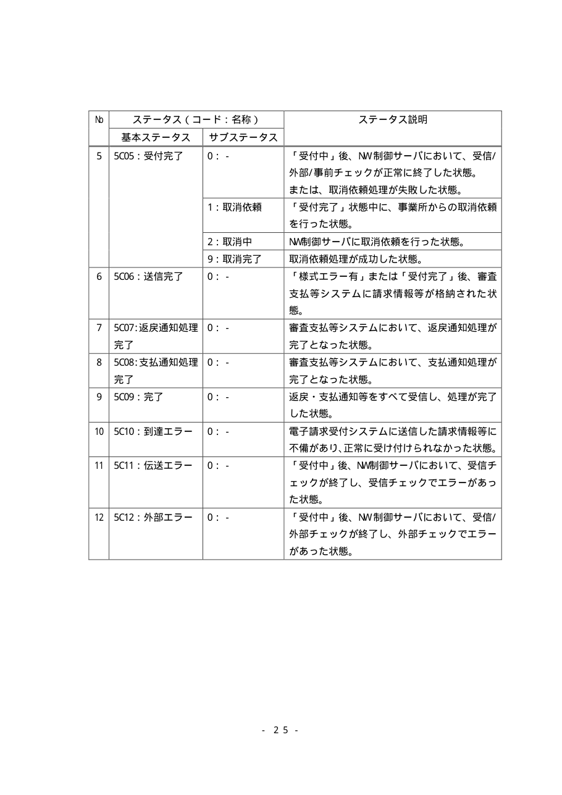
| 項番 | 項目名 | 属性 | 桁数 | 内容 | 必須 | 備考 | その他の列 |
|---|---|---|---|---|---|---|---|
| 5 | 5C05：受付完了 | 「受付中」後、NW制御サーバにおいて、受信/外部/事前チェックが正常に終了した状態。または、取消依頼処理が失敗した状態。 | ステータス（コード：名称） > サブステータス: 0：- | ||||
| 5 | 5C05：受付完了 | 「受付完了」状態中に、事業所からの取消依頼を行った状態。 | ステータス（コード：名称） > サブステータス: 1：取消依頼 | ||||
| 5 | 5C05：受付完了 | NW制御サーバに取消依頼を行った状態。 | ステータス（コード：名称） > サブステータス: 2：取消中 | ||||
| 5 | 5C05：受付完了 | 取消依頼処理が成功した状態。 | ステータス（コード：名称） > サブステータス: 9：取消完了 | ||||
| 6 | 5C06：送信完了 | 「様式エラー有」または「受付完了」後、審査支払等システムに請求情報等が格納された状態。 | ステータス（コード：名称） > サブステータス: 0：- | ||||
| 7 | 5C07:返戻通知処理完了 | 審査支払等システムにおいて、返戻通知処理が完了となった状態。 | ステータス（コード：名称） > サブステータス: 0：- | ||||
| 8 | 5C08:支払通知処理完了 | 審査支払等システムにおいて、支払通知処理が完了となった状態。 | ステータス（コード：名称） > サブステータス: 0：- | ||||
| 9 | 5C09：完了 | 返戻・支払通知等をすべて受信し、処理が完了した状態。 | ステータス（コード：名称） > サブステータス: 0：- | ||||
| 10 | 5C10：到達エラー | 電子請求受付システムに送信した請求情報等に不備があり、正常に受け付けられなかった状態。 | ステータス（コード：名称） > サブステータス: 0：- | ||||
| 11 | 5C11：伝送エラー | 「受付中」後、NW制御サーバにおいて、受信チェックが終了し、受信チェックでエラーがあった状態。 | ステータス（コード：名称） > サブステータス: 0：- | ||||
| 12 | 5C12：外部エラー | 「受付中」後、NW制御サーバにおいて、受信/外部チェックが終了し、外部チェックでエラーがあった状態。 | ステータス（コード：名称） > サブステータス: 0：- |
| 項番 | 項目名 | 属性 | 桁数 | 内容 | 必須 | 備考 | その他の列 |
|---|---|---|---|---|---|---|---|
| 5 | 5C05：受付完了 | 「受付中」後、NW制御サーバにおいて、受信/外部/事前チェックが正常に終了した状態。 または、取消依頼処理が失敗した状態。 | ステータス（コード：名称） > サブステータス: 0： - | ||||
| 5 | 5C05：受付完了 | 「受付完了」状態中に、事業所からの取消依頼を行った状態。 | ステータス（コード：名称） > サブステータス: 1：取消依頼 | ||||
| 5 | 5C05：受付完了 | NW制御サーバに取消依頼を行った状態。 | ステータス（コード：名称） > サブステータス: 2：取消中 | ||||
| 5 | 5C05：受付完了 | 取消依頼処理が成功した状態。 | ステータス（コード：名称） > サブステータス: 9：取消完了 | ||||
| 6 | 5C06：送信完了 | 「様式エラー有」または「受付完了」後、審査支払等システムに請求情報等が格納された状態。 | ステータス（コード：名称） > サブステータス: 0： - | ||||
| 7 | 5C07:返戻通知処理完了 | 審査支払等システムにおいて、返戻通知処理が完了となった状態。 | ステータス（コード：名称） > サブステータス: 0： - | ||||
| 8 | 5C08:支払通知処理完了 | 審査支払等システムにおいて、支払通知処理が完了となった状態。 | ステータス（コード：名称） > サブステータス: 0： - | ||||
| 9 | 5C09：完了 | 返戻・支払通知等をすべて受信し、処理が完了した状態。 | ステータス（コード：名称） > サブステータス: 0： - | ||||
| 10 | 5C10：到達エラー | 電子請求受付システムに送信した請求情報等に不備があり、正常に受け付けられなかった状態。 | ステータス（コード：名称） > サブステータス: 0： - | ||||
| 11 | 5C11：伝送エラー | 「受付中」後、NW制御サーバにおいて、受信チェックが終了し、受信チェックでエラーがあった状態。 | ステータス（コード：名称） > サブステータス: 0： - | ||||
| 12 | 5C12：外部エラー | 「受付中」後、NW制御サーバにおいて、受信/外部チェックが終了し、外部チェックでエラーがあった状態。 | ステータス（コード：名称） > サブステータス: 0： - |
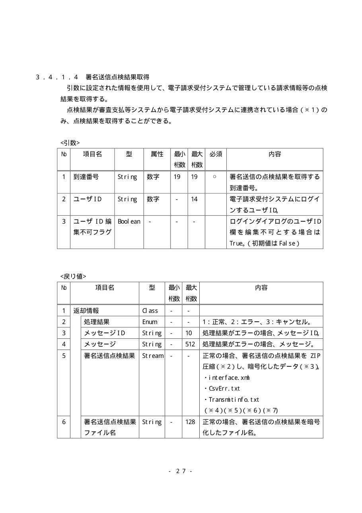
| 項番 | 項目名 | 属性 | 桁数 | 内容 | 必須 | 備考 | その他の列 |
|---|---|---|---|---|---|---|---|
| 1 | 到達番号 | 数字 | 19 | 署名送信の点検結果を取得する到達番号。 | ○ | 型: String 最小桁数: 19 | |
| 2 | ユーザID | 数字 | 14 | 電子請求受付システムにログインするユーザID。 | 型: String 最小桁数: - | ||
| 3 | ユーザID編集不可フラグ | - | - | ログインダイアログのユーザID欄を編集不可とする場合はTrue。（初期値はFalse） | 型: Boolean 最小桁数: - |
| 項番 | 項目名 | 属性 | 桁数 | 内容 | 必須 | 備考 | その他の列 |
|---|---|---|---|---|---|---|---|
| 1 | 返却情報 | - | 型: Class 最小桁数: - | ||||
| 2 | 返却情報 > 処理結果 | - | 1：正常、2：エラー、3：キャンセル。 | 型: Enum 最小桁数: - | |||
| 3 | 返却情報 > メッセージID | 10 | 処理結果がエラーの場合、メッセージID。 | 型: String 最小桁数: - | |||
| 4 | 返却情報 > メッセージ | 512 | 処理結果がエラーの場合、メッセージ。 | 型: String 最小桁数: - | |||
| 5 | 返却情報 > 署名送信点検結果 | - | 正常の場合、署名送信の点検結果をZIP圧縮（※2）し、暗号化したデータ（※3）。 ・interface.xml ・CsvErr.txt ・Transmitinfo.txt （※4）（※5）（※6）（※7） | 型: Stream 最小桁数: - | |||
| 6 | 返却情報 > 署名送信点検結果ファイル名 | 128 | 正常の場合、署名送信の点検結果を暗号化したファイル名。 | 型: String 最小桁数: - |
| 項番 | 項目名 | 属性 | 桁数 | 内容 | 必須 | 備考 | その他の列 |
|---|---|---|---|---|---|---|---|
| 1 | 到達番号 | 数字 | 署名送信の点検結果を取得する到達番号。 | ○ | 型: String 最小桁数: 19 最大桁数: 19 | ||
| 2 | ユーザID | 数字 | 電子請求受付システムにログインするユーザID。 | 型: String 最小桁数: - 最大桁数: 14 | |||
| 3 | ユーザID編集不可フラグ | - | ログインダイアログのユーザID欄を編集不可とする場合はTrue。(初期値はFalse) | 型: Boolean 最小桁数: - 最大桁数: - |
| 項番 | 項目名 | 属性 | 桁数 | 内容 | 必須 | 備考 | その他の列 |
|---|---|---|---|---|---|---|---|
| 1 | 返却情報 | Class | 最小桁数: - 最大桁数: - | ||||
| 2 | 返却情報 > 処理結果 | Enum | 1:正常、2:エラー、3:キャンセル。 | 最小桁数: - 最大桁数: - | |||
| 3 | 返却情報 > メッセージID | String | 処理結果がエラーの場合、メッセージID。 | 最小桁数: - 最大桁数: 10 | |||
| 4 | 返却情報 > メッセージ | String | 処理結果がエラーの場合、メッセージ。 | 最小桁数: - 最大桁数: 512 | |||
| 5 | 返却情報 > 署名送信点検結果 | Stream | 正常の場合、署名送信の点検結果をZIP圧縮(※2)し、暗号化したデータ(※3)。 ・interface.xml ・CsvErr.txt ・Transmitinfo.txt (※4)(※5)(※6)(※7) | 最小桁数: - 最大桁数: - | |||
| 6 | 返却情報 > 署名送信点検結果ファイル名 | String | 正常の場合、署名送信の点検結果を暗号化したファイル名。 | 最小桁数: - 最大桁数: 128 |
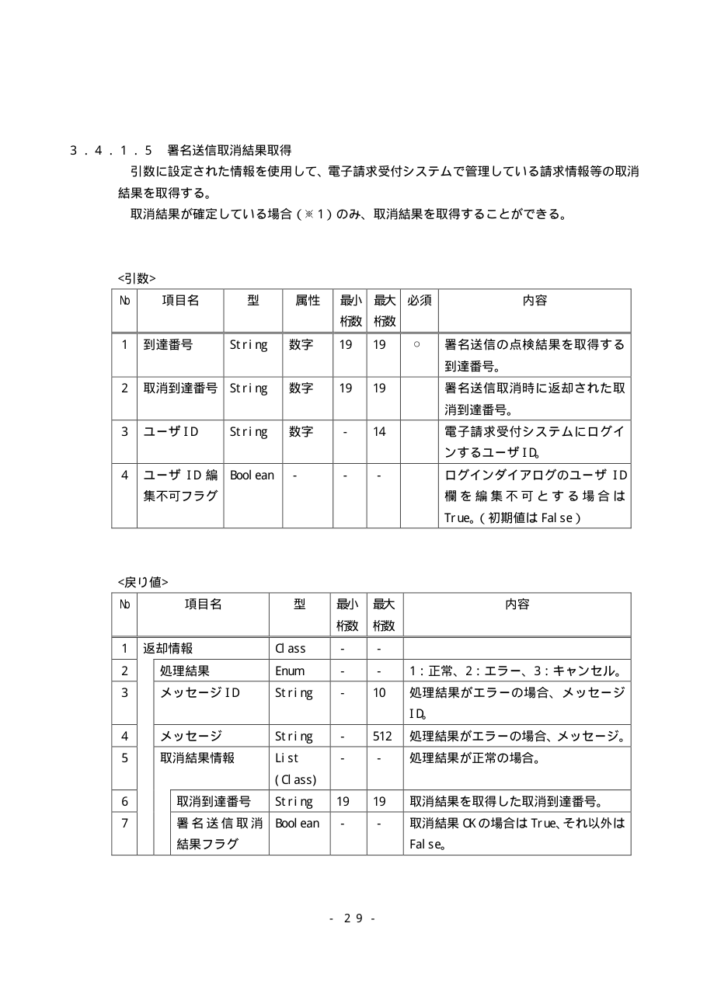
| 項番 | 項目名 | 属性 | 桁数 | 内容 | 必須 | 備考 | その他の列 |
|---|---|---|---|---|---|---|---|
| 1 | 到達番号 | 数字 | 19 | 署名送信の点検結果を取得する到達番号。 | ○ | 型: String 最小桁数: 19 | |
| 2 | 取消到達番号 | 数字 | 19 | 署名送信取消時に返却された取消到達番号。 | 型: String 最小桁数: 19 | ||
| 3 | ユーザID | 数字 | 14 | 電子請求受付システムにログインするユーザID。 | 型: String 最小桁数: - | ||
| 4 | ユーザID編集不可フラグ | - | - | ログインダイアログのユーザID欄を編集不可とする場合はTrue。(初期値はFalse) | 型: Boolean 最小桁数: - |
| 項番 | 項目名 | 属性 | 桁数 | 内容 | 必須 | 備考 | その他の列 |
|---|---|---|---|---|---|---|---|
| 1 | 返却情報 | - | 型: Class 最小桁数: - | ||||
| 2 | 返却情報 > 処理結果 | - | 1：正常、2：エラー、3：キャンセル。 | 型: Enum 最小桁数: - | |||
| 3 | 返却情報 > メッセージID | 10 | 処理結果がエラーの場合、メッセージID。 | 型: String 最小桁数: - | |||
| 4 | 返却情報 > メッセージ | 512 | 処理結果がエラーの場合、メッセージ。 | 型: String 最小桁数: - | |||
| 5 | 返却情報 > 取消結果情報 | - | 処理結果が正常の場合。 | 型: List (Class) 最小桁数: - | |||
| 6 | 返却情報 > 取消結果情報 > 取消到達番号 | 19 | 取消結果を取得した取消到達番号。 | 型: String 最小桁数: 19 | |||
| 7 | 返却情報 > 取消結果情報 > 署名送信取消結果フラグ | - | 取消結果OKの場合はTrue、それ以外はFalse。 | 型: Boolean 最小桁数: - |
| 項番 | 項目名 | 属性 | 桁数 | 内容 | 必須 | 備考 | その他の列 |
|---|---|---|---|---|---|---|---|
| 1 | 到達番号 | 数字 | 19 | 署名送信の点検結果を取得する到達番号。 | ○ | 型: String 最小桁数: 19 | |
| 2 | 取消到達番号 | 数字 | 19 | 署名送信取消時に返却された取消到達番号。 | 型: String 最小桁数: 19 | ||
| 3 | ユーザID | 数字 | 14 | 電子請求受付システムにログインするユーザID。 | 型: String 最小桁数: - | ||
| 4 | ユーザID編集不可フラグ | - | - | ログインダイアログのユーザID欄を編集不可とする場合はTrue。(初期値はFalse) | 型: Boolean 最小桁数: - |
| 項番 | 項目名 | 属性 | 桁数 | 内容 | 必須 | 備考 | その他の列 |
|---|---|---|---|---|---|---|---|
| 1 | 返却情報 | Class | - | 最小桁数: - | |||
| 2 | 返却情報 > 処理結果 | Enum | - | 1:正常、2:エラー、3:キャンセル。 | 最小桁数: - | ||
| 3 | 返却情報 > メッセージID | String | 10 | 処理結果がエラーの場合、メッセージID。 | 最小桁数: - | ||
| 4 | 返却情報 > メッセージ | String | 512 | 処理結果がエラーの場合、メッセージ。 | 最小桁数: - | ||
| 5 | 返却情報 > 取消結果情報 | List(Class) | - | 処理結果が正常の場合。 | 最小桁数: - | ||
| 6 | 返却情報 > 取消結果情報 > 取消到達番号 | String | 19 | 取消結果を取得した取消到達番号。 | 最小桁数: 19 | ||
| 7 | 返却情報 > 取消結果情報 > 署名送信取消結果フラグ | Boolean | - | 取消結果OKの場合はTrue、それ以外はFalse。 | 最小桁数: - |
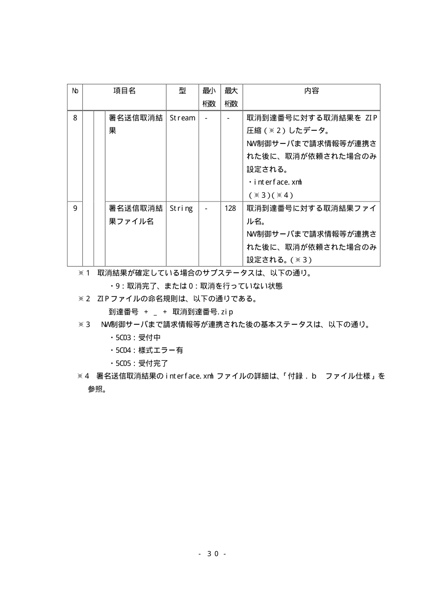
| 項番 | 項目名 | 属性 | 桁数 | 内容 | 必須 | 備考 | その他の列 |
|---|---|---|---|---|---|---|---|
| 8 | 署名送信取消結果 | Stream | - | 取消到達番号に対する取消結果を ZIP圧縮(※2)したデータ。 NW制御サーバまで請求情報等が連携された後に、取消が依頼された場合のみ設定される。 ・interface.xml(※3)(※4) | 最小桁数: - | ||
| 9 | 署名送信取消結果ファイル名 | String | 128 | 取消到達番号に対する取消結果ファイル名。 NW制御サーバまで請求情報等が連携された後に、取消が依頼された場合のみ設定される。(※3) | 最小桁数: - |
| 項番 | 項目名 | 属性 | 桁数 | 内容 | 必須 | 備考 | その他の列 |
|---|---|---|---|---|---|---|---|
| 8 | 署名送信取消結果 | Stream | - | 取消到達番号に対する取消結果を ZIP圧縮(※2)したデータ。 NW制御サーバまで請求情報等が連携された後に、取消が依頼された場合のみ設定される。 ・interface.xml (※3)(※4) | 最小桁数: - | ||
| 9 | 署名送信取消結果ファイル名 | String | 128 | 取消到達番号に対する取消結果ファイル名。 NW制御サーバまで請求情報等が連携された後に、取消が依頼された場合のみ設定される。(※3) | 最小桁数: - |
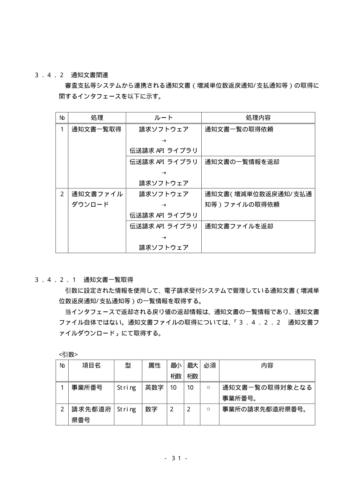
| 項番 | 項目名 | 属性 | 桁数 | 内容 | 必須 | 備考 | その他の列 |
|---|---|---|---|---|---|---|---|
| 1 | 通知文書一覧取得 | 通知文書一覧の取得依頼 | ルート: 請求ソフトウェア → 伝送請求 API ライブラリ | ||||
| 1 | 通知文書一覧取得 | 通知文書の一覧情報を返却 | ルート: 伝送請求 API ライブラリ → 請求ソフトウェア | ||||
| 2 | 通知文書ファイルダウンロード | 通知文書(増減単位数返戻通知/支払通知等)ファイルの取得依頼 | ルート: 請求ソフトウェア → 伝送請求 API ライブラリ | ||||
| 2 | 通知文書ファイルダウンロード | 通知文書ファイルを返却 | ルート: 伝送請求 API ライブラリ → 請求ソフトウェア |
| 項番 | 項目名 | 属性 | 桁数 | 内容 | 必須 | 備考 | その他の列 |
|---|---|---|---|---|---|---|---|
| 1 | 事業所番号 | 英数字 | 10 | 通知文書一覧の取得対象となる事業所番号。 | ○ | 型: String 最小桁数: 10 | |
| 2 | 請求先都道府県番号 | 数字 | 2 | 事業所の請求先都道府県番号。 | ○ | 型: String 最小桁数: 2 |
| 項番 | 項目名 | 属性 | 桁数 | 内容 | 必須 | 備考 | その他の列 |
|---|---|---|---|---|---|---|---|
| 1 | 通知文書一覧取得 | 通知文書一覧の取得依頼 | ルート: 請求ソフトウェア → 伝送請求API ライブラリ | ||||
| 1 | 通知文書一覧取得 | 通知文書の一覧情報を返却 | ルート: 伝送請求API ライブラリ → 請求ソフトウェア | ||||
| 2 | 通知文書ファイルダウンロード | 通知文書(増減単位数返戻通知/支払通知等)ファイルの取得依頼 | ルート: 請求ソフトウェア → 伝送請求API ライブラリ | ||||
| 2 | 通知文書ファイルダウンロード | 通知文書ファイルを返却 | ルート: 伝送請求API ライブラリ → 請求ソフトウェア |
| 項番 | 項目名 | 属性 | 桁数 | 内容 | 必須 | 備考 | その他の列 |
|---|---|---|---|---|---|---|---|
| 1 | 事業所番号 | 英数字 | 通知文書一覧の取得対象となる事業所番号。 | ○ | 型: String 最小桁数: 10 最大桁数: 10 | ||
| 2 | 請求先都道府県番号 | 数字 | 事業所の請求先都道府県番号。 | ○ | 型: String 最小桁数: 2 最大桁数: 2 |
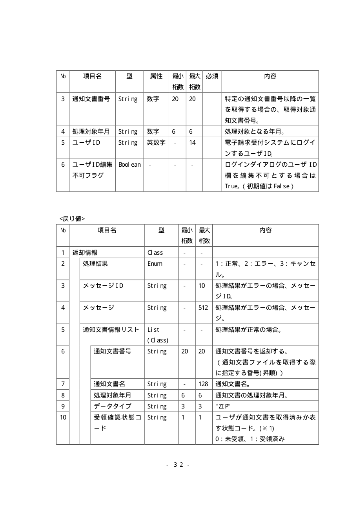
| 項番 | 項目名 | 属性 | 桁数 | 内容 | 必須 | 備考 | その他の列 |
|---|---|---|---|---|---|---|---|
| 3 | 通知文書番号 | 数字 | 20 | 特定の通知文書番号以降の一覧を取得する場合の、取得対象通知文書番号。 | 型: String 最小桁数: 20 | ||
| 4 | 処理対象年月 | 数字 | 6 | 処理対象となる年月。 | 型: String 最小桁数: 6 | ||
| 5 | ユーザID | 英数字 | 14 | 電子請求受付システムにログインするユーザID。 | 型: String 最小桁数: - | ||
| 6 | ユーザID編集不可フラグ | - | - | ログインダイアログのユーザID欄を編集不可とする場合はTrue。(初期値はFalse) | 型: Boolean 最小桁数: - |
| 項番 | 項目名 | 属性 | 桁数 | 内容 | 必須 | 備考 | その他の列 |
|---|---|---|---|---|---|---|---|
| 1 | 返却情報 | Class | - | 最小桁数: - | |||
| 2 | 返却情報 > 処理結果 | Enum | - | 1：正常、2：エラー、3：キャンセル。 | 最小桁数: - | ||
| 3 | 返却情報 > メッセージID | String | 10 | 処理結果がエラーの場合、メッセージID。 | 最小桁数: - | ||
| 4 | 返却情報 > メッセージ | String | 512 | 処理結果がエラーの場合、メッセージ。 | 最小桁数: - | ||
| 5 | 返却情報 > 通知文書情報リスト | List(Class) | - | 処理結果が正常の場合。 | 最小桁数: - | ||
| 6 | 返却情報 > 通知文書情報リスト > 通知文書番号 | String | 20 | 通知文書番号を返却する。 （通知文書ファイルを取得する際に指定する番号(昇順)） | 最小桁数: 20 | ||
| 7 | 返却情報 > 通知文書情報リスト > 通知文書名 | String | 128 | 通知文書名。 | 最小桁数: - | ||
| 8 | 返却情報 > 通知文書情報リスト > 処理対象年月 | String | 6 | 通知文書の処理対象年月。 | 最小桁数: 6 | ||
| 9 | 返却情報 > 通知文書情報リスト > データタイプ | String | 3 | "ZIP" | 最小桁数: 3 | ||
| 10 | 返却情報 > 通知文書情報リスト > 受領確認状態コード | String | 1 | ユーザが通知文書を取得済みか表す状態コード。(※1) 0：未受領、1：受領済み | 最小桁数: 1 |
| 項番 | 項目名 | 属性 | 桁数 | 内容 | 必須 | 備考 | その他の列 |
|---|---|---|---|---|---|---|---|
| 3 | 通知文書番号 | 数字 | 特定の通知文書番号以降の一覧を取得する場合の、取得対象通知文書番号。 | 型: String 最小桁数: 20 最大桁数: 20 | |||
| 4 | 処理対象年月 | 数字 | 処理対象となる年月。 | 型: String 最小桁数: 6 最大桁数: 6 | |||
| 5 | ユーザID | 英数字 | 電子請求受付システムにログインするユーザID。 | 型: String 最小桁数: - 最大桁数: 14 | |||
| 6 | ユーザID編集不可フラグ | - | ログインダイアログのユーザID欄を編集不可とする場合はTrue。(初期値はFalse) | 型: Boolean 最小桁数: - 最大桁数: - |
| 項番 | 項目名 | 属性 | 桁数 | 内容 | 必須 | 備考 | その他の列 |
|---|---|---|---|---|---|---|---|
| 1 | 返却情報 | Class | 最小桁数: - 最大桁数: - | ||||
| 2 | 返却情報 > 処理結果 | Enum | 1:正常、2:エラー、3:キャンセル。 | 最小桁数: - 最大桁数: - | |||
| 3 | 返却情報 > メッセージID | String | 処理結果がエラーの場合、メッセージID。 | 最小桁数: - 最大桁数: 10 | |||
| 4 | 返却情報 > メッセージ | String | 処理結果がエラーの場合、メッセージ。 | 最小桁数: - 最大桁数: 512 | |||
| 5 | 返却情報 > 通知文書情報リスト | List(Class) | 処理結果が正常の場合。 | 最小桁数: - 最大桁数: - | |||
| 6 | 返却情報 > 通知文書情報リスト > 通知文書番号 | String | 通知文書番号を返却する。 (通知文書ファイルを取得する際に指定する番号(昇順)) | 最小桁数: 20 最大桁数: 20 | |||
| 7 | 返却情報 > 通知文書情報リスト > 通知文書名 | String | 通知文書名。 | 最小桁数: - 最大桁数: 128 | |||
| 8 | 返却情報 > 通知文書情報リスト > 処理対象年月 | String | 通知文書の処理対象年月。 | 最小桁数: 6 最大桁数: 6 | |||
| 9 | 返却情報 > 通知文書情報リスト > データタイプ | String | "ZIP" | 最小桁数: 3 最大桁数: 3 | |||
| 10 | 返却情報 > 通知文書情報リスト > 受領確認状態コード | String | ユーザが通知文書を取得済みか表す状態コード。(※1) 0:未受領、1:受領済み | 最小桁数: 1 最大桁数: 1 |
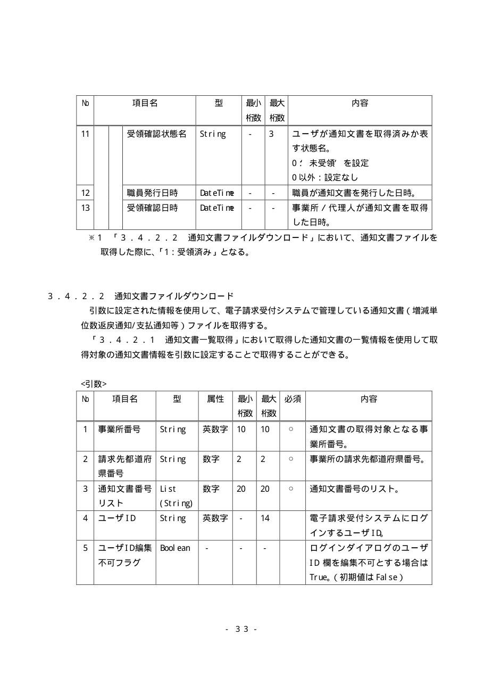
| 項番 | 項目名 | 属性 | 桁数 | 内容 | 必須 | 備考 | その他の列 |
|---|---|---|---|---|---|---|---|
| 11 | 受領確認状態名 | String | 3 | ユーザが通知文書を取得済みか表す状態名。 0：「未受領」を設定 0 以外：設定なし | 最小桁数: - | ||
| 12 | 職員発行日時 | DateTime | - | 職員が通知文書を発行した日時。 | 最小桁数: - | ||
| 13 | 受領確認日時 | DateTime | - | 事業所 / 代理人が通知文書を取得した日時。 | 最小桁数: - |
| 項番 | 項目名 | 属性 | 桁数 | 内容 | 必須 | 備考 | その他の列 |
|---|---|---|---|---|---|---|---|
| 1 | 事業所番号 | 英数字 | 10 | 通知文書の取得対象となる事業所番号。 | ○ | 型: String 最小桁数: 10 | |
| 2 | 請求先都道府県番号 | 数字 | 2 | 事業所の請求先都道府県番号。 | ○ | 型: String 最小桁数: 2 | |
| 3 | 通知文書番号リスト | 数字 | 20 | 通知文書番号のリスト。 | ○ | 型: List(String) 最小桁数: 20 | |
| 4 | ユーザID | 英数字 | 14 | 電子請求受付システムにログインするユーザID。 | 型: String 最小桁数: - | ||
| 5 | ユーザID編集不可フラグ | - | - | ログインダイアログのユーザID 欄を編集不可とする場合はTrue。（初期値はFalse） | 型: Boolean 最小桁数: - |
| 項番 | 項目名 | 属性 | 桁数 | 内容 | 必須 | 備考 | その他の列 |
|---|---|---|---|---|---|---|---|
| 11 | 受領確認状態名 | String | ユーザが通知文書を取得済みか表す状態名。 0:‘未受領’を設定 0以外:設定なし | 最小桁数: - 最大桁数: 3 | |||
| 12 | 職員発行日時 | DateTime | 職員が通知文書を発行した日時。 | 最小桁数: - 最大桁数: - | |||
| 13 | 受領確認日時 | DateTime | 事業所/代理人が通知文書を取得した日時。 | 最小桁数: - 最大桁数: - |
| 項番 | 項目名 | 属性 | 桁数 | 内容 | 必須 | 備考 | その他の列 |
|---|---|---|---|---|---|---|---|
| 1 | 事業所番号 | String | 通知文書の取得対象となる事業所番号。 | ○ | 属性: 英数字 最小桁数: 10 最大桁数: 10 | ||
| 2 | 請求先都道府県番号 | String | 事業所の請求先都道府県番号。 | ○ | 属性: 数字 最小桁数: 2 最大桁数: 2 | ||
| 3 | 通知文書番号リスト | List(String) | 通知文書番号のリスト。 | ○ | 属性: 数字 最小桁数: 20 最大桁数: 20 | ||
| 4 | ユーザID | String | 電子請求受付システムにログインするユーザID。 | 属性: 英数字 最小桁数: - 最大桁数: 14 | |||
| 5 | ユーザID編集不可フラグ | Boolean | ログインダイアログのユーザID欄を編集不可とする場合はTrue。(初期値はFalse) | 属性: - 最小桁数: - 最大桁数: - |
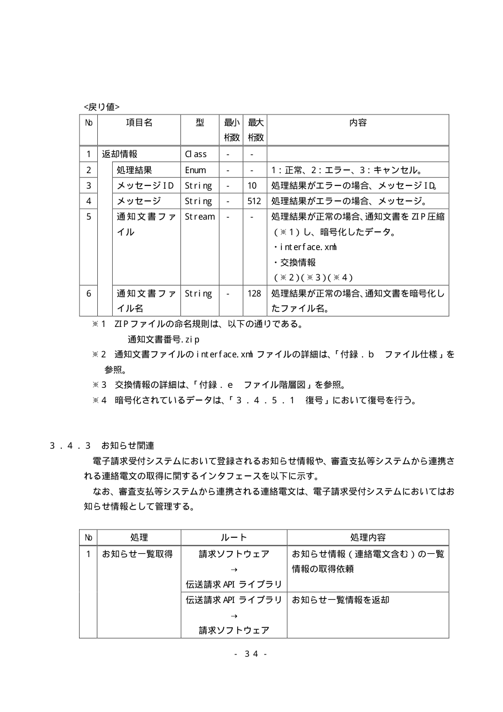
| 項番 | 項目名 | 属性 | 桁数 | 内容 | 必須 | 備考 | その他の列 |
|---|---|---|---|---|---|---|---|
| 1 | 返却情報 | Class | - | 最小桁数: - | |||
| 2 | 返却情報 > 処理結果 | Enum | - | 1：正常、2：エラー、3：キャンセル。 | 最小桁数: - | ||
| 3 | 返却情報 > メッセージID | String | 10 | 処理結果がエラーの場合、メッセージID。 | 最小桁数: - | ||
| 4 | 返却情報 > メッセージ | String | 512 | 処理結果がエラーの場合、メッセージ。 | 最小桁数: - | ||
| 5 | 返却情報 > 通知文書ファイル | Stream | - | 処理結果が正常の場合、通知文書をZIP圧縮（※1）し、暗号化したデータ。 ・interface.xml ・交換情報 （※2）（※3）（※4） | 最小桁数: - | ||
| 6 | 返却情報 > 通知文書ファイル名 | String | 128 | 処理結果が正常の場合、通知文書を暗号化したファイル名。 | 最小桁数: - |
| 項番 | 項目名 | 属性 | 桁数 | 内容 | 必須 | 備考 | その他の列 |
|---|---|---|---|---|---|---|---|
| 1 | お知らせ一覧取得 | お知らせ情報（連絡電文含む）の一覧 情報の取得依頼 | ルート: 請求ソフトウェア → 伝送請求 API ライブラリ | ||||
| 1 | お知らせ一覧取得 | お知らせ一覧情報を返却 | ルート: 伝送請求 API ライブラリ → 請求ソフトウェア |
| 項番 | 項目名 | 属性 | 桁数 | 内容 | 必須 | 備考 | その他の列 |
|---|---|---|---|---|---|---|---|
| 1 | 返却情報 | Class | - | 最小桁数: - | |||
| 2 | 返却情報 > 処理結果 | Enum | - | 1:正常、2:エラー、3:キャンセル。 | 最小桁数: - | ||
| 3 | 返却情報 > メッセージID | String | 10 | 処理結果がエラーの場合、メッセージID。 | 最小桁数: - | ||
| 4 | 返却情報 > メッセージ | String | 512 | 処理結果がエラーの場合、メッセージ。 | 最小桁数: - | ||
| 5 | 返却情報 > 通知文書ファイル | Stream | - | 処理結果が正常の場合、通知文書をZIP圧縮(※1)し、暗号化したデータ。 ・interface.xml ・交換情報 (※2)(※3)(※4) | 最小桁数: - | ||
| 6 | 返却情報 > 通知文書ファイル名 | String | 128 | 処理結果が正常の場合、通知文書を暗号化したファイル名。 | 最小桁数: - |
| 項番 | 項目名 | 属性 | 桁数 | 内容 | 必須 | 備考 | その他の列 |
|---|---|---|---|---|---|---|---|
| 1 | お知らせ一覧取得 | お知らせ情報(連絡電文含む)の一覧情報の取得依頼 | ルート: 請求ソフトウェア → 伝送請求APIライブラリ | ||||
| 1 | お知らせ一覧取得 | お知らせ一覧情報を返却 | ルート: 伝送請求APIライブラリ → 請求ソフトウェア |
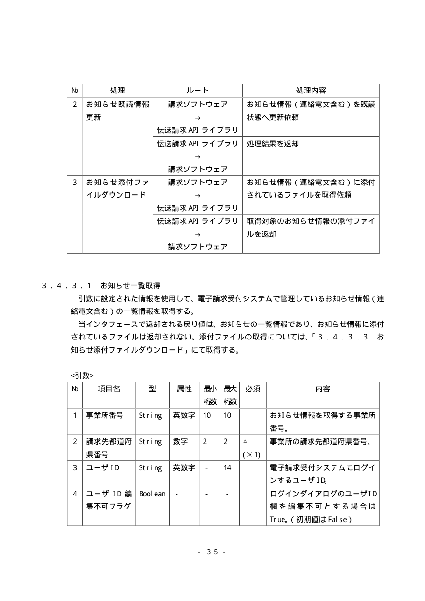
| 項番 | 項目名 | 属性 | 桁数 | 内容 | 必須 | 備考 | その他の列 |
|---|---|---|---|---|---|---|---|
| 2 | お知らせ既読情報更新 | お知らせ情報（連絡電文含む）を既読状態へ更新依頼 | ルート: 請求ソフトウェア → 伝送請求 API ライブラリ | ||||
| 2 | お知らせ既読情報更新 | 処理結果を返却 | ルート: 伝送請求 API ライブラリ → 請求ソフトウェア | ||||
| 3 | お知らせ添付ファイルダウンロード | お知らせ情報（連絡電文含む）に添付されているファイルを取得依頼 | ルート: 請求ソフトウェア → 伝送請求 API ライブラリ | ||||
| 3 | お知らせ添付ファイルダウンロード | 取得対象のお知らせ情報の添付ファイルを返却 | ルート: 伝送請求 API ライブラリ → 請求ソフトウェア |
| 項番 | 項目名 | 属性 | 桁数 | 内容 | 必須 | 備考 | その他の列 |
|---|---|---|---|---|---|---|---|
| 1 | 事業所番号 | 英数字 | 10 | お知らせ情報を取得する事業所番号。 | 型: String 最小桁数: 10 | ||
| 2 | 請求先都道府県番号 | 数字 | 2 | 事業所の請求先都道府県番号。 | △ (※1) | 型: String 最小桁数: 2 | |
| 3 | ユーザID | 英数字 | 14 | 電子請求受付システムにログインするユーザID。 | 型: String 最小桁数: - | ||
| 4 | ユーザ ID 編集不可フラグ | - | - | ログインダイアログのユーザID欄を編集不可とする場合はTrue。（初期値はFalse） | 型: Boolean 最小桁数: - |
| 項番 | 項目名 | 属性 | 桁数 | 内容 | 必須 | 備考 | その他の列 |
|---|---|---|---|---|---|---|---|
| 2 | お知らせ既読情報更新 | お知らせ情報（連絡電文含む）を既読状態へ更新依頼 | ルート: 請求ソフトウェア → 伝送請求API ライブラリ | ||||
| 2 | お知らせ既読情報更新 | 処理結果を返却 | ルート: 伝送請求API ライブラリ → 請求ソフトウェア | ||||
| 3 | お知らせ添付ファイルダウンロード | お知らせ情報（連絡電文含む）に添付されているファイルを取得依頼 | ルート: 請求ソフトウェア → 伝送請求API ライブラリ | ||||
| 3 | お知らせ添付ファイルダウンロード | 取得対象のお知らせ情報の添付ファイルを返却 | ルート: 伝送請求API ライブラリ → 請求ソフトウェア |
| 項番 | 項目名 | 属性 | 桁数 | 内容 | 必須 | 備考 | その他の列 |
|---|---|---|---|---|---|---|---|
| 1 | 事業所番号 | 英数字 | お知らせ情報を取得する事業所番号。 | 型: String 最小桁数: 10 最大桁数: 10 | |||
| 2 | 請求先都道府県番号 | 数字 | 事業所の請求先都道府県番号。 | △ (※1) | 型: String 最小桁数: 2 最大桁数: 2 | ||
| 3 | ユーザID | 英数字 | 電子請求受付システムにログインするユーザID。 | 型: String 最小桁数: - 最大桁数: 14 | |||
| 4 | ユーザID編集不可フラグ | - | ログインダイアログのユーザID欄を編集不可とする場合はTrue。(初期値はFalse) | 型: Boolean 最小桁数: - 最大桁数: - |
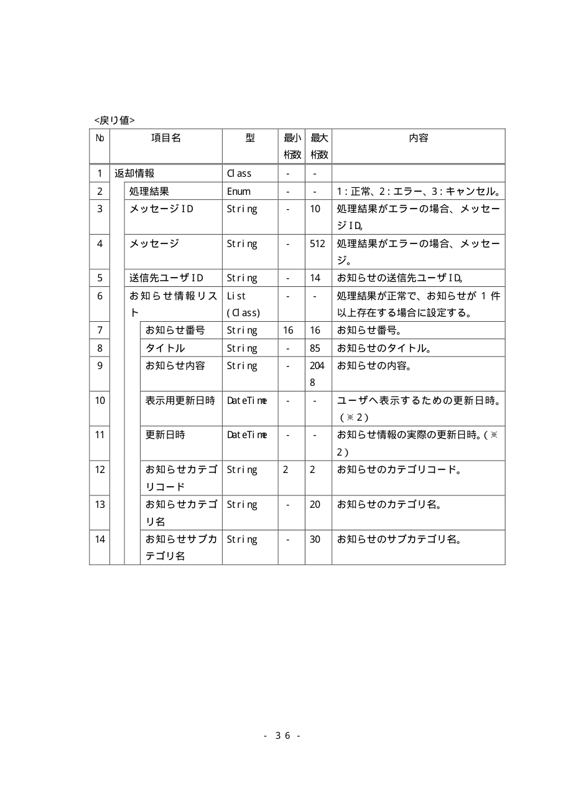
| 項番 | 項目名 | 属性 | 桁数 | 内容 | 必須 | 備考 | その他の列 |
|---|---|---|---|---|---|---|---|
| 1 | 返却情報 | Class | - | 最小桁数: - | |||
| 2 | 返却情報 > 処理結果 | Enum | - | 1:正常、2:エラー、3:キャンセル。 | 最小桁数: - | ||
| 3 | 返却情報 > メッセージID | String | 10 | 処理結果がエラーの場合、メッセージID。 | 最小桁数: - | ||
| 4 | 返却情報 > メッセージ | String | 512 | 処理結果がエラーの場合、メッセージ。 | 最小桁数: - | ||
| 5 | 返却情報 > 送信先ユーザID | String | 14 | お知らせの送信先ユーザID。 | 最小桁数: - | ||
| 6 | 返却情報 > お知らせ情報リスト | List (Class) | - | 処理結果が正常で、お知らせが1件以上存在する場合に設定する。 | 最小桁数: - | ||
| 7 | 返却情報 > お知らせ情報リスト > お知らせ番号 | String | 16 | お知らせ番号。 | 最小桁数: 16 | ||
| 8 | 返却情報 > お知らせ情報リスト > タイトル | String | 85 | お知らせのタイトル。 | 最小桁数: - | ||
| 9 | 返却情報 > お知らせ情報リスト > お知らせ内容 | String | 2048 | お知らせの内容。 | 最小桁数: - | ||
| 10 | 返却情報 > お知らせ情報リスト > 表示用更新日時 | DateTime | - | ユーザへ表示するための更新日時。(※2) | 最小桁数: - | ||
| 11 | 返却情報 > お知らせ情報リスト > 更新日時 | DateTime | - | お知らせ情報の実際の更新日時。(※2) | 最小桁数: - | ||
| 12 | 返却情報 > お知らせ情報リスト > お知らせカテゴリコード | String | 2 | お知らせのカテゴリコード。 | 最小桁数: 2 | ||
| 13 | 返却情報 > お知らせ情報リスト > お知らせカテゴリ名 | String | 20 | お知らせのカテゴリ名。 | 最小桁数: - | ||
| 14 | 返却情報 > お知らせ情報リスト > お知らせサブカテゴリ名 | String | 30 | お知らせのサブカテゴリ名。 | 最小桁数: - |
| 項番 | 項目名 | 属性 | 桁数 | 内容 | 必須 | 備考 | その他の列 |
|---|---|---|---|---|---|---|---|
| 1 | 返却情報 | Class | 最小桁数: - 最大桁数: - | ||||
| 2 | 返却情報 > 処理結果 | Enum | 1:正常、2:エラー、3:キャンセル。 | 最小桁数: - 最大桁数: - | |||
| 3 | 返却情報 > メッセージID | String | 処理結果がエラーの場合、メッセージID。 | 最小桁数: - 最大桁数: 10 | |||
| 4 | 返却情報 > メッセージ | String | 処理結果がエラーの場合、メッセージ。 | 最小桁数: - 最大桁数: 512 | |||
| 5 | 返却情報 > 送信先ユーザID | String | お知らせの送信先ユーザID。 | 最小桁数: - 最大桁数: 14 | |||
| 6 | 返却情報 > お知らせ情報リスト | List(Class) | 処理結果が正常で、お知らせが1件以上存在する場合に設定する。 | 最小桁数: - 最大桁数: - | |||
| 7 | 返却情報 > お知らせ情報リスト > お知らせ番号 | String | お知らせ番号。 | 最小桁数: 16 最大桁数: 16 | |||
| 8 | 返却情報 > お知らせ情報リスト > タイトル | String | お知らせのタイトル。 | 最小桁数: - 最大桁数: 85 | |||
| 9 | 返却情報 > お知らせ情報リスト > お知らせ内容 | String | お知らせの内容。 | 最小桁数: - 最大桁数: 2048 | |||
| 10 | 返却情報 > お知らせ情報リスト > 表示用更新日時 | DateTime | ユーザへ表示するための更新日時。(※2) | 最小桁数: - 最大桁数: - | |||
| 11 | 返却情報 > お知らせ情報リスト > 更新日時 | DateTime | お知らせ情報の実際の更新日時。(※2) | 最小桁数: - 最大桁数: - | |||
| 12 | 返却情報 > お知らせ情報リスト > お知らせカテゴリコード | String | お知らせのカテゴリコード。 | 最小桁数: 2 最大桁数: 2 | |||
| 13 | 返却情報 > お知らせ情報リスト > お知らせカテゴリ名 | String | お知らせのカテゴリ名。 | 最小桁数: - 最大桁数: 20 | |||
| 14 | 返却情報 > お知らせ情報リスト > お知らせサブカテゴリ名 | String | お知らせのサブカテゴリ名。 | 最小桁数: - 最大桁数: 30 |
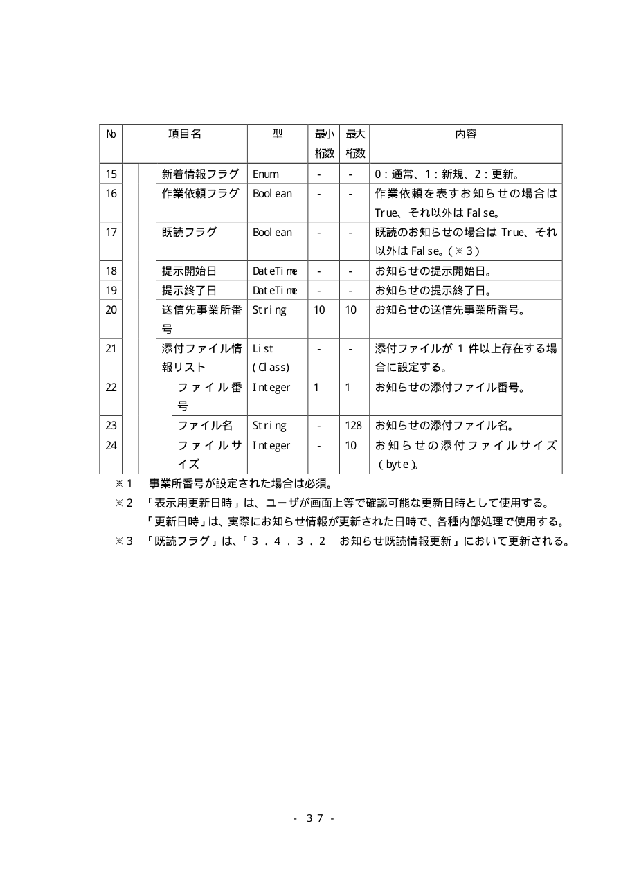
| 項番 | 項目名 | 属性 | 桁数 | 内容 | 必須 | 備考 | その他の列 |
|---|---|---|---|---|---|---|---|
| 15 | 新着情報フラグ | Enum | - | 0：通常、1：新規、2：更新。 | 最小桁数: - | ||
| 16 | 作業依頼フラグ | Boolean | - | 作業依頼を表すお知らせの場合はTrue、それ以外はFalse。 | 最小桁数: - | ||
| 17 | 既読フラグ | Boolean | - | 既読のお知らせの場合はTrue、それ以外はFalse。(※3) | 最小桁数: - | ||
| 18 | 提示開始日 | DateTime | - | お知らせの提示開始日。 | 最小桁数: - | ||
| 19 | 提示終了日 | DateTime | - | お知らせの提示終了日。 | 最小桁数: - | ||
| 20 | 送信先事業所番号 | String | 10 | お知らせの送信先事業所番号。 | 最小桁数: 10 | ||
| 21 | 添付ファイル情報リスト | List(Class) | - | 添付ファイルが1件以上存在する場合に設定する。 | 最小桁数: - | ||
| 22 | 添付ファイル情報リスト > ファイル番号 | Integer | 1 | お知らせの添付ファイル番号。 | 最小桁数: 1 | ||
| 23 | 添付ファイル情報リスト > ファイル名 | String | 128 | お知らせの添付ファイル名。 | 最小桁数: - | ||
| 24 | 添付ファイル情報リスト > ファイルサイズ | Integer | 10 | お知らせの添付ファイルサイズ(byte)。 | 最小桁数: - |
| 項番 | 項目名 | 属性 | 桁数 | 内容 | 必須 | 備考 | その他の列 |
|---|---|---|---|---|---|---|---|
| 15 | 新着情報フラグ | Enum | 0:通常、1:新規、2:更新。 | 最小桁数: - 最大桁数: - | |||
| 16 | 作業依頼フラグ | Boolean | 作業依頼を表すお知らせの場合はTrue、それ以外はFalse。 | 最小桁数: - 最大桁数: - | |||
| 17 | 既読フラグ | Boolean | 既読のお知らせの場合はTrue、それ以外はFalse。(※3) | 最小桁数: - 最大桁数: - | |||
| 18 | 提示開始日 | DateTime | お知らせの提示開始日。 | 最小桁数: - 最大桁数: - | |||
| 19 | 提示終了日 | DateTime | お知らせの提示終了日。 | 最小桁数: - 最大桁数: - | |||
| 20 | 送信先事業所番号 | String | お知らせの送信先事業所番号。 | 最小桁数: 10 最大桁数: 10 | |||
| 21 | 添付ファイル情報リスト | List(Class) | 添付ファイルが1件以上存在する場合に設定する。 | 最小桁数: - 最大桁数: - | |||
| 22 | 添付ファイル情報リスト > ファイル番号 | Integer | お知らせの添付ファイル番号。 | 最小桁数: 1 最大桁数: 1 | |||
| 23 | 添付ファイル情報リスト > ファイル名 | String | お知らせの添付ファイル名。 | 最小桁数: - 最大桁数: 128 | |||
| 24 | 添付ファイル情報リスト > ファイルサイズ | Integer | お知らせの添付ファイルサイズ(byte)。 | 最小桁数: - 最大桁数: 10 |
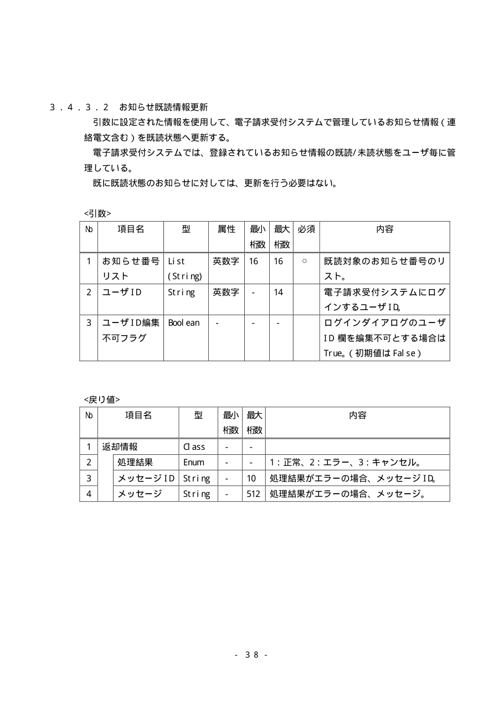
| 項番 | 項目名 | 属性 | 桁数 | 内容 | 必須 | 備考 | その他の列 |
|---|---|---|---|---|---|---|---|
| 1 | お知らせ番号リスト | List (String) | 16 | 既読対象のお知らせ番号のリスト。 | ○ | 属性: 英数字 最小桁数: 16 | |
| 2 | ユーザID | String | 14 | 電子請求受付システムにログインするユーザID。 | 属性: 英数字 最小桁数: - | ||
| 3 | ユーザID編集不可フラグ | Boolean | - | ログインダイアログのユーザID 欄を編集不可とする場合は True。(初期値は False) | 属性: - 最小桁数: - |
| 項番 | 項目名 | 属性 | 桁数 | 内容 | 必須 | 備考 | その他の列 |
|---|---|---|---|---|---|---|---|
| 1 | 返却情報 | Class | - | 最小桁数: - | |||
| 2 | 返却情報 > 処理結果 | Enum | - | 1：正常、2：エラー、3：キャンセル。 | 最小桁数: - | ||
| 3 | 返却情報 > メッセージID | String | 10 | 処理結果がエラーの場合、メッセージID。 | 最小桁数: - | ||
| 4 | 返却情報 > メッセージ | String | 512 | 処理結果がエラーの場合、メッセージ。 | 最小桁数: - |
| 項番 | 項目名 | 属性 | 桁数 | 内容 | 必須 | 備考 | その他の列 |
|---|---|---|---|---|---|---|---|
| 1 | お知らせ番号リスト | 英数字 | 既読対象のお知らせ番号のリスト。 | ○ | 型: List(String) 最小桁数: 16 最大桁数: 16 | ||
| 2 | ユーザID | 英数字 | 電子請求受付システムにログインするユーザID。 | 型: String 最小桁数: - 最大桁数: 14 | |||
| 3 | ユーザID編集不可フラグ | ログインダイアログのユーザID欄を編集不可とする場合はTrue。(初期値はFalse) | 型: Boolean 最小桁数: - 最大桁数: - |
| 項番 | 項目名 | 属性 | 桁数 | 内容 | 必須 | 備考 | その他の列 |
|---|---|---|---|---|---|---|---|
| 1 | 返却情報 | Class | 最小桁数: - 最大桁数: - | ||||
| 2 | 返却情報 > 処理結果 | Enum | 1:正常、2:エラー、3:キャンセル。 | 最小桁数: - 最大桁数: - | |||
| 3 | 返却情報 > メッセージID | String | 処理結果がエラーの場合、メッセージID。 | 最小桁数: - 最大桁数: 10 | |||
| 4 | 返却情報 > メッセージ | String | 処理結果がエラーの場合、メッセージ。 | 最小桁数: - 最大桁数: 512 |
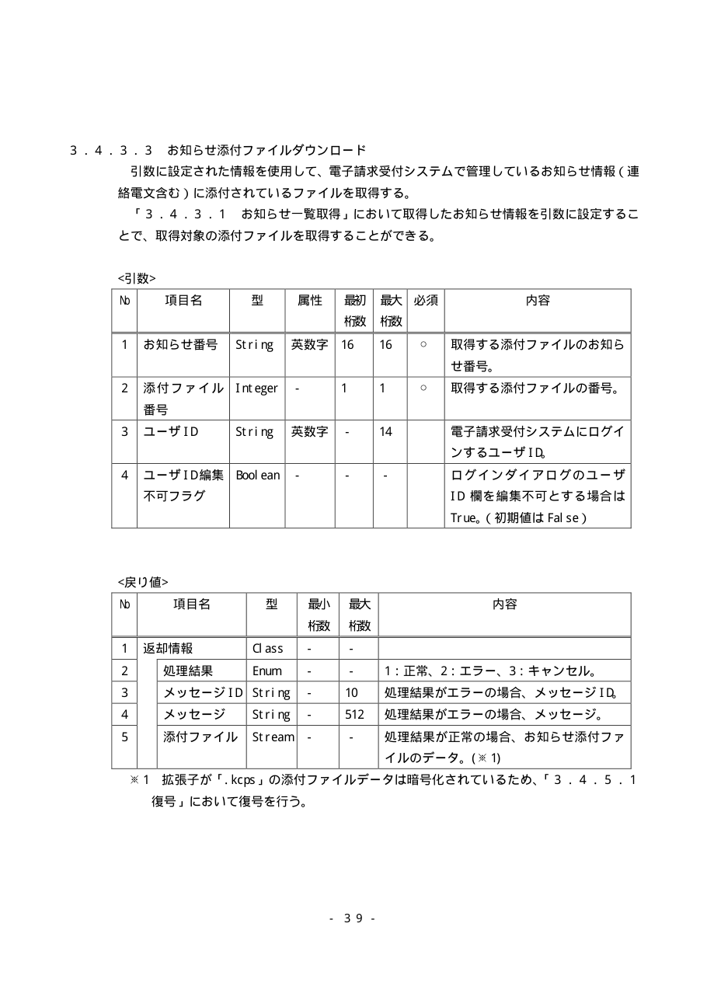
| 項番 | 項目名 | 属性 | 桁数 | 内容 | 必須 | 備考 | その他の列 |
|---|---|---|---|---|---|---|---|
| 1 | お知らせ番号 | String | 16 | 取得する添付ファイルのお知らせ番号。 | ○ | 属性: 英数字 最初桁数: 16 | |
| 2 | 添付ファイル番号 | Integer | 1 | 取得する添付ファイルの番号。 | ○ | 属性: - 最初桁数: 1 | |
| 3 | ユーザID | String | 14 | 電子請求受付システムにログインするユーザID。 | 属性: 英数字 最初桁数: - | ||
| 4 | ユーザID編集不可フラグ | Boolean | - | ログインダイアログのユーザID欄を編集不可とする場合はTrue。（初期値はFalse） | 属性: - 最初桁数: - |
| 項番 | 項目名 | 属性 | 桁数 | 内容 | 必須 | 備考 | その他の列 |
|---|---|---|---|---|---|---|---|
| 1 | 返却情報 | Class | - | 最小桁数: - | |||
| 2 | 返却情報 > 処理結果 | Enum | - | 1：正常、2：エラー、3：キャンセル。 | 最小桁数: - | ||
| 3 | 返却情報 > メッセージID | String | 10 | 処理結果がエラーの場合、メッセージID。 | 最小桁数: - | ||
| 4 | 返却情報 > メッセージ | String | 512 | 処理結果がエラーの場合、メッセージ。 | 最小桁数: - | ||
| 5 | 返却情報 > 添付ファイル | Stream | - | 処理結果が正常の場合、お知らせ添付ファイルのデータ。(※1) | 最小桁数: - |
| 項番 | 項目名 | 属性 | 桁数 | 内容 | 必須 | 備考 | その他の列 |
|---|---|---|---|---|---|---|---|
| 1 | お知らせ番号 | 英数字 | 16 | 取得する添付ファイルのお知らせ番号。 | ○ | 型: String 最初桁数: 16 | |
| 2 | 添付ファイル番号 | - | 1 | 取得する添付ファイルの番号。 | ○ | 型: Integer 最初桁数: 1 | |
| 3 | ユーザID | 英数字 | 14 | 電子請求受付システムにログインするユーザID。 | 型: String 最初桁数: - | ||
| 4 | ユーザID編集不可フラグ | - | - | ログインダイアログのユーザID欄を編集不可とする場合はTrue。(初期値はFalse) | 型: Boolean 最初桁数: - |
| 項番 | 項目名 | 属性 | 桁数 | 内容 | 必須 | 備考 | その他の列 |
|---|---|---|---|---|---|---|---|
| 1 | 返却情報 | Class | - | 最小桁数: - | |||
| 2 | 返却情報 > 処理結果 | Enum | - | 1:正常、2:エラー、3:キャンセル。 | 最小桁数: - | ||
| 3 | 返却情報 > メッセージID | String | 10 | 処理結果がエラーの場合、メッセージID。 | 最小桁数: - | ||
| 4 | 返却情報 > メッセージ | String | 512 | 処理結果がエラーの場合、メッセージ。 | 最小桁数: - | ||
| 5 | 返却情報 > 添付ファイル | Stream | - | 処理結果が正常の場合、お知らせ添付ファイルのデータ。(※1) | 最小桁数: - |
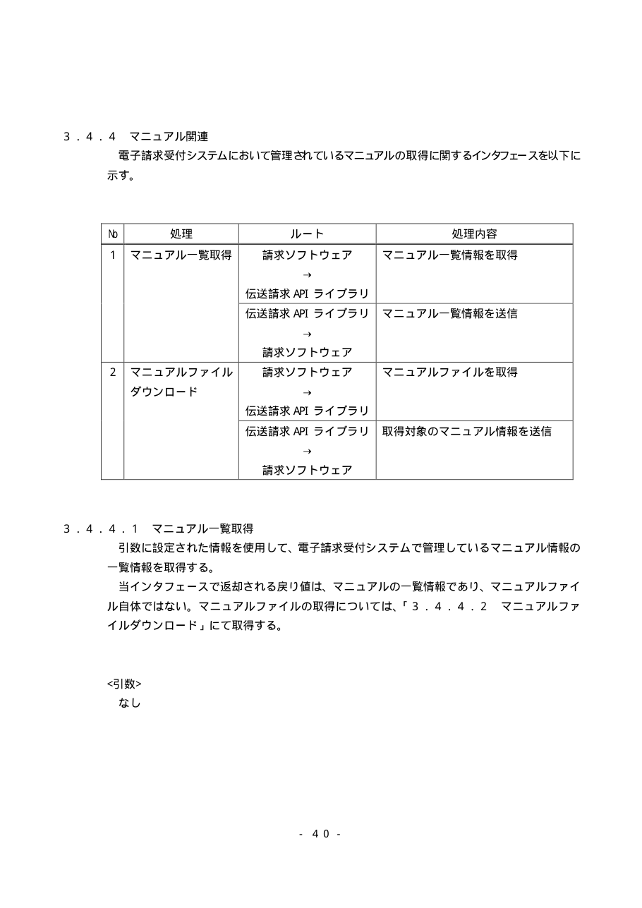
| 項番 | 項目名 | 属性 | 桁数 | 内容 | 必須 | 備考 | その他の列 |
|---|---|---|---|---|---|---|---|
| 1 | マニュアル一覧取得 | マニュアル一覧情報を取得 | ルート: 請求ソフトウェア → 伝送請求 API ライブラリ | ||||
| 1 | マニュアル一覧取得 | マニュアル一覧情報を送信 | ルート: 伝送請求 API ライブラリ → 請求ソフトウェア | ||||
| 2 | マニュアルファイルダウンロード | マニュアルファイルを取得 | ルート: 請求ソフトウェア → 伝送請求 API ライブラリ | ||||
| 2 | マニュアルファイルダウンロード | 取得対象のマニュアル情報を送信 | ルート: 伝送請求 API ライブラリ → 請求ソフトウェア |
| 項番 | 項目名 | 属性 | 桁数 | 内容 | 必須 | 備考 | その他の列 |
|---|---|---|---|---|---|---|---|
| 1 | マニュアル一覧取得 | マニュアル一覧情報を取得 | ルート: 請求ソフトウェア → 伝送請求API ライブラリ | ||||
| 1 | マニュアル一覧取得 | マニュアル一覧情報を送信 | ルート: 伝送請求API ライブラリ → 請求ソフトウェア | ||||
| 2 | マニュアルファイルダウンロード | マニュアルファイルを取得 | ルート: 請求ソフトウェア → 伝送請求API ライブラリ | ||||
| 2 | マニュアルファイルダウンロード | 取得対象のマニュアル情報を送信 | ルート: 伝送請求API ライブラリ → 請求ソフトウェア |
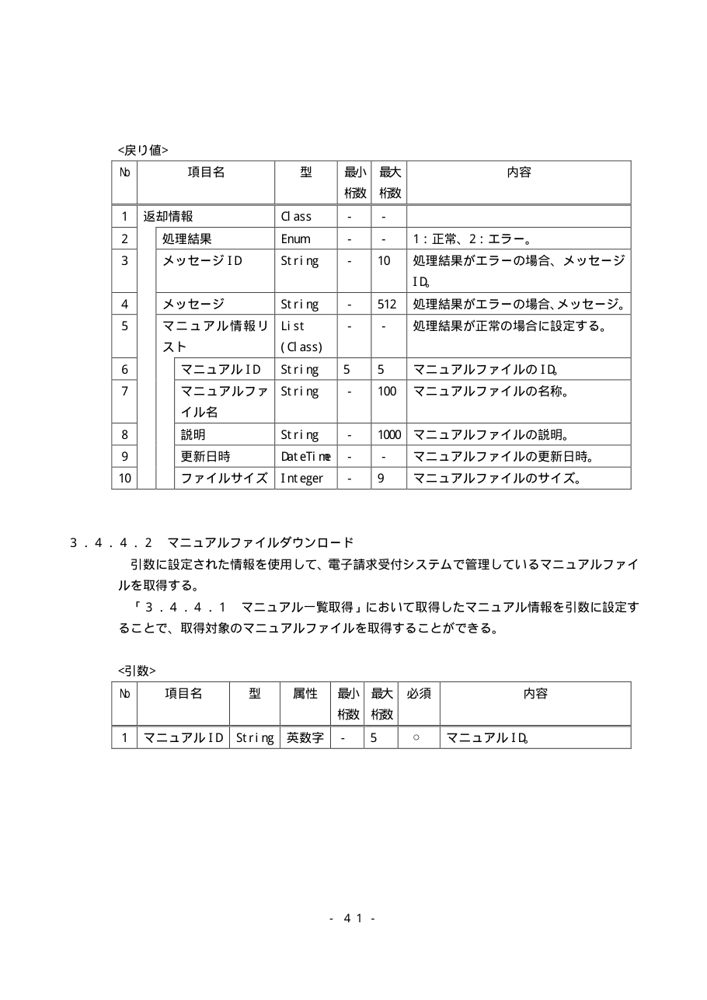
| 項番 | 項目名 | 属性 | 桁数 | 内容 | 必須 | 備考 | その他の列 |
|---|---|---|---|---|---|---|---|
| 1 | 返却情報 | Class | - | 最小桁数: - | |||
| 2 | 返却情報 > 処理結果 | Enum | - | 1：正常、2：エラー。 | 最小桁数: - | ||
| 3 | 返却情報 > メッセージID | String | 10 | 処理結果がエラーの場合、メッセージID。 | 最小桁数: - | ||
| 4 | 返却情報 > メッセージ | String | 512 | 処理結果がエラーの場合、メッセージ。 | 最小桁数: - | ||
| 5 | 返却情報 > マニュアル情報リスト | List (Class) | - | 処理結果が正常の場合に設定する。 | 最小桁数: - | ||
| 6 | 返却情報 > マニュアル情報リスト > マニュアルID | String | 5 | マニュアルファイルのID。 | 最小桁数: 5 | ||
| 7 | 返却情報 > マニュアル情報リスト > マニュアルファイル名 | String | 100 | マニュアルファイルの名称。 | 最小桁数: - | ||
| 8 | 返却情報 > マニュアル情報リスト > 説明 | String | 1000 | マニュアルファイルの説明。 | 最小桁数: - | ||
| 9 | 返却情報 > マニュアル情報リスト > 更新日時 | DateTime | - | マニュアルファイルの更新日時。 | 最小桁数: - | ||
| 10 | 返却情報 > マニュアル情報リスト > ファイルサイズ | Integer | 9 | マニュアルファイルのサイズ。 | 最小桁数: - |
| 項番 | 項目名 | 属性 | 桁数 | 内容 | 必須 | 備考 | その他の列 |
|---|---|---|---|---|---|---|---|
| 1 | マニュアルID | String | 5 | マニュアルID。 | ○ | 属性: 英数字 最小桁数: - |
| 項番 | 項目名 | 属性 | 桁数 | 内容 | 必須 | 備考 | その他の列 |
|---|---|---|---|---|---|---|---|
| 1 | 返却情報 | Class | - | 最小桁数: - | |||
| 2 | 返却情報 > 処理結果 | Enum | - | 1:正常、2:エラー。 | 最小桁数: - | ||
| 3 | 返却情報 > メッセージID | String | 10 | 処理結果がエラーの場合、メッセージID。 | 最小桁数: - | ||
| 4 | 返却情報 > メッセージ | String | 512 | 処理結果がエラーの場合、メッセージ。 | 最小桁数: - | ||
| 5 | 返却情報 > マニュアル情報リスト | List(Class) | - | 処理結果が正常の場合に設定する。 | 最小桁数: - | ||
| 6 | 返却情報 > マニュアル情報リスト > マニュアルID | String | 5 | マニュアルファイルのID。 | 最小桁数: 5 | ||
| 7 | 返却情報 > マニュアル情報リスト > マニュアルファイル名 | String | 100 | マニュアルファイルの名称。 | 最小桁数: - | ||
| 8 | 返却情報 > マニュアル情報リスト > 説明 | String | 1000 | マニュアルファイルの説明。 | 最小桁数: - | ||
| 9 | 返却情報 > マニュアル情報リスト > 更新日時 | DateTime | - | マニュアルファイルの更新日時。 | 最小桁数: - | ||
| 10 | 返却情報 > マニュアル情報リスト > ファイルサイズ | Integer | 9 | マニュアルファイルのサイズ。 | 最小桁数: - |
| 項番 | 項目名 | 属性 | 桁数 | 内容 | 必須 | 備考 | その他の列 |
|---|---|---|---|---|---|---|---|
| 1 | マニュアルID | String | 5 | マニュアルID。 | ○ | 属性: 英数字 最小桁数: - |
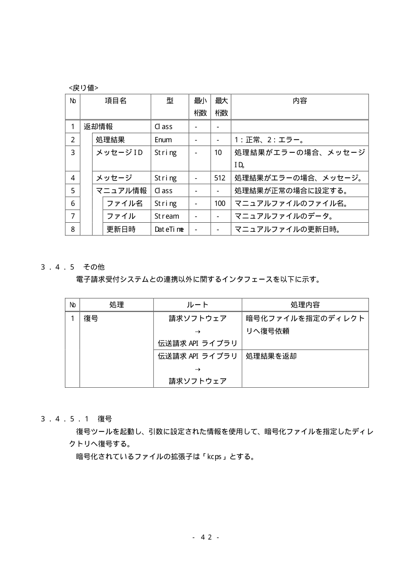
| 項番 | 項目名 | 属性 | 桁数 | 内容 | 必須 | 備考 | その他の列 |
|---|---|---|---|---|---|---|---|
| 1 | 返却情報 | Class | - | 最小桁数: - | |||
| 2 | 返却情報 > 処理結果 | Enum | - | 1：正常、2：エラー。 | 最小桁数: - | ||
| 3 | 返却情報 > メッセージID | String | 10 | 処理結果がエラーの場合、メッセージID。 | 最小桁数: - | ||
| 4 | 返却情報 > メッセージ | String | 512 | 処理結果がエラーの場合、メッセージ。 | 最小桁数: - | ||
| 5 | 返却情報 > マニュアル情報 | Class | - | 処理結果が正常の場合に設定する。 | 最小桁数: - | ||
| 6 | 返却情報 > マニュアル情報 > ファイル名 | String | 100 | マニュアルファイルのファイル名。 | 最小桁数: - | ||
| 7 | 返却情報 > マニュアル情報 > ファイル | Stream | - | マニュアルファイルのデータ。 | 最小桁数: - | ||
| 8 | 返却情報 > マニュアル情報 > 更新日時 | DateTime | - | マニュアルファイルの更新日時。 | 最小桁数: - |
| 項番 | 項目名 | 属性 | 桁数 | 内容 | 必須 | 備考 | その他の列 |
|---|---|---|---|---|---|---|---|
| 1 | 復号 | 暗号化ファイルを指定のディレクトリへ復号依頼 | ルート: 請求ソフトウェア [図] 伝送請求 API ライブラリ | ||||
| 1 | 復号 | 処理結果を返却 | ルート: 伝送請求 API ライブラリ [図] 請求ソフトウェア |
| 項番 | 項目名 | 属性 | 桁数 | 内容 | 必須 | 備考 | その他の列 |
|---|---|---|---|---|---|---|---|
| 1 | 返却情報 | Class | 最小桁数: - 最大桁数: - | ||||
| 2 | 返却情報 > 処理結果 | Enum | 1:正常、2:エラー。 | 最小桁数: - 最大桁数: - | |||
| 3 | 返却情報 > メッセージID | String | 処理結果がエラーの場合、メッセージID。 | 最小桁数: - 最大桁数: 10 | |||
| 4 | 返却情報 > メッセージ | String | 処理結果がエラーの場合、メッセージ。 | 最小桁数: - 最大桁数: 512 | |||
| 5 | 返却情報 > マニュアル情報 | Class | 処理結果が正常の場合に設定する。 | 最小桁数: - 最大桁数: - | |||
| 6 | 返却情報 > マニュアル情報 > ファイル名 | String | マニュアルファイルのファイル名。 | 最小桁数: - 最大桁数: 100 | |||
| 7 | 返却情報 > マニュアル情報 > ファイル | Stream | マニュアルファイルのデータ。 | 最小桁数: - 最大桁数: - | |||
| 8 | 返却情報 > マニュアル情報 > 更新日時 | DateTime | マニュアルファイルの更新日時。 | 最小桁数: - 最大桁数: - |
| 項番 | 項目名 | 属性 | 桁数 | 内容 | 必須 | 備考 | その他の列 |
|---|---|---|---|---|---|---|---|
| 1 | 復号 | 暗号化ファイルを指定のディレクトリへ復号依頼 | ルート: 請求ソフトウェア → 伝送請求API ライブラリ | ||||
| 1 | 復号 | 処理結果を返却 | ルート: 伝送請求API ライブラリ → 請求ソフトウェア |
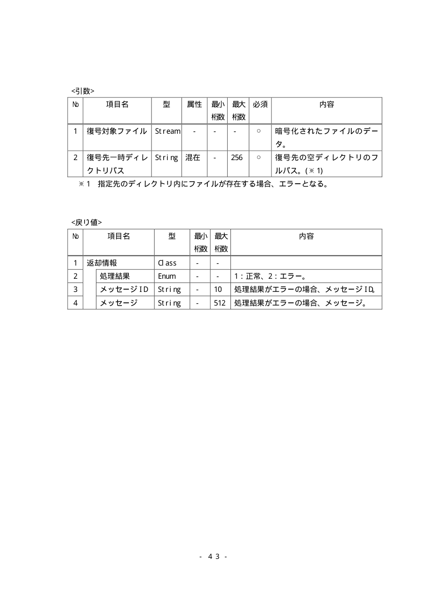
| 項番 | 項目名 | 属性 | 桁数 | 内容 | 必須 | 備考 | その他の列 |
|---|---|---|---|---|---|---|---|
| 1 | 復号対象ファイル | - | - | 暗号化されたファイルのデータ。 | ○ | 型: Stream 最小桁数: - | |
| 2 | 復号先一時ディレクトリパス | 混在 | 256 | 復号先の空ディレクトリのフルパス。(※ 1) | ○ | 型: String 最小桁数: - |
| 項番 | 項目名 | 属性 | 桁数 | 内容 | 必須 | 備考 | その他の列 |
|---|---|---|---|---|---|---|---|
| 1 | 返却情報 | Class | - | 最小桁数: - | |||
| 2 | 返却情報 > 処理結果 | Enum | - | 1：正常、2：エラー。 | 最小桁数: - | ||
| 3 | 返却情報 > メッセージID | String | 10 | 処理結果がエラーの場合、メッセージID。 | 最小桁数: - | ||
| 4 | 返却情報 > メッセージ | String | 512 | 処理結果がエラーの場合、メッセージ。 | 最小桁数: - |
| 項番 | 項目名 | 属性 | 桁数 | 内容 | 必須 | 備考 | その他の列 |
|---|---|---|---|---|---|---|---|
| 1 | 復号対象ファイル | Stream | 暗号化されたファイルのデータ。 | ○ | 属性: - 最小桁数: - 最大桁数: - | ||
| 2 | 復号先一時ディレクトリパス | String | 復号先の空ディレクトリのフルパス。(※1) | ○ | 属性: 混在 最小桁数: - 最大桁数: 256 |
| 項番 | 項目名 | 属性 | 桁数 | 内容 | 必須 | 備考 | その他の列 |
|---|---|---|---|---|---|---|---|
| 1 | 返却情報 | Class | 最小桁数: - 最大桁数: - | ||||
| 2 | 返却情報 > 処理結果 | Enum | 1:正常、2:エラー。 | 最小桁数: - 最大桁数: - | |||
| 3 | 返却情報 > メッセージID | String | 処理結果がエラーの場合、メッセージID。 | 最小桁数: - 最大桁数: 10 | |||
| 4 | 返却情報 > メッセージ | String | 処理結果がエラーの場合、メッセージ。 | 最小桁数: - 最大桁数: 512 |
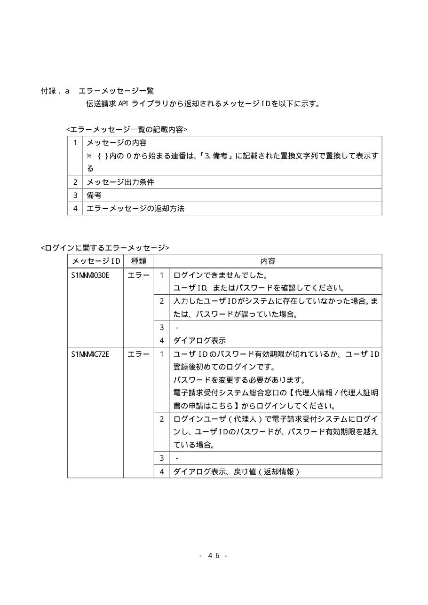
| 項番 | 項目名 | 属性 | 桁数 | 内容 | 必須 | 備考 | その他の列 |
|---|---|---|---|---|---|---|---|
| 1 | メッセージの内容 > ※ { }内の 0 から始まる連番は、「3. 備考」に記載された置換文字列で置換して表示する | ||||||
| 2 | メッセージ出力条件 | ||||||
| 3 | 備考 | ||||||
| 4 | エラーメッセージの返却方法 |
| 項番 | 項目名 | 属性 | 桁数 | 内容 | 必須 | 備考 | その他の列 |
|---|---|---|---|---|---|---|---|
| 1 | S1MNM0030E | ログインできませんでした。 ユーザ ID、またはパスワードを確認してください。 | 種類: エラー | ||||
| 2 | S1MNM0030E | 入力したユーザ ID がシステムに存在していなかった場合。または、パスワードが誤っていた場合。 | 種類: エラー | ||||
| 3 | S1MNM0030E | - | 種類: エラー | ||||
| 4 | S1MNM0030E | ダイアログ表示 | 種類: エラー | ||||
| 1 | S1MNM4C72E | ユーザ ID のパスワード有効期限が切れているか、ユーザ ID 登録後初めてのログインです。 パスワードを変更する必要があります。 電子請求受付システム総合窓口の【代理人情報 / 代理人証明書の申請はこちら】からログインしてください。 | 種類: エラー | ||||
| 2 | S1MNM4C72E | ログインユーザ（代理人）で電子請求受付システムにログインし、ユーザ ID のパスワードが、パスワード有効期限を越えている場合。 | 種類: エラー | ||||
| 3 | S1MNM4C72E | - | 種類: エラー | ||||
| 4 | S1MNM4C72E | ダイアログ表示、戻り値（返却情報） | 種類: エラー |
| 項番 | 項目名 | 属性 | 桁数 | 内容 | 必須 | 備考 | その他の列 |
|---|---|---|---|---|---|---|---|
| 1 | メッセージの内容 ※ { }内の 0 から始まる連番は、「3.備考」に記載された置換文字列で置換して表示する | ||||||
| 2 | メッセージ出力条件 | ||||||
| 3 | 備考 | ||||||
| 4 | エラーメッセージの返却方法 |
| 項番 | 項目名 | 属性 | 桁数 | 内容 | 必須 | 備考 | その他の列 |
|---|---|---|---|---|---|---|---|
| 1 | S1MNM0030E | ログインできませんでした。 ユーザID、またはパスワードを確認してください。 | 種類: エラー | ||||
| 2 | S1MNM0030E | 入力したユーザIDがシステムに存在していなかった場合。または、パスワードが誤っていた場合。 | 種類: エラー | ||||
| 3 | S1MNM0030E | - | 種類: エラー | ||||
| 4 | S1MNM0030E | ダイアログ表示 | 種類: エラー | ||||
| 1 | S1MNM4C72E | ユーザIDのパスワード有効期限が切れているか、ユーザID登録後初めてのログインです。 パスワードを変更する必要があります。 電子請求受付システム総合窓口の【代理人情報/代理人証明書の申請はこちら】からログインしてください。 | 種類: エラー | ||||
| 2 | S1MNM4C72E | ログインユーザ(代理人)で電子請求受付システムにログインし、ユーザIDのパスワードが、パスワード有効期限を越えている場合。 | 種類: エラー | ||||
| 3 | S1MNM4C72E | - | 種類: エラー | ||||
| 4 | S1MNM4C72E | ダイアログ表示、戻り値(返却情報) | 種類: エラー |
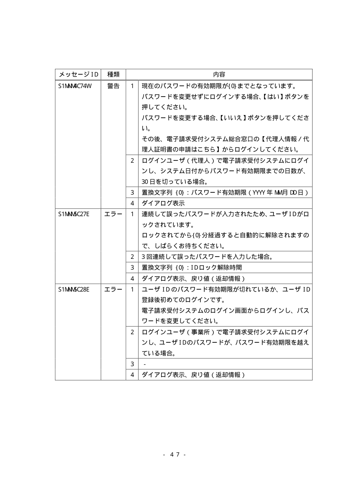
| 項番 | 項目名 | 属性 | 桁数 | 内容 | 必須 | 備考 | その他の列 |
|---|---|---|---|---|---|---|---|
| 1 | S1MM4C74W | 現在のパスワードの有効期限が{0}までとなっています。 パスワードを変更せずにログインする場合、【はい】ボタンを押してください。 パスワードを変更する場合、【いいえ】ボタンを押してください。 その後、電子請求受付システム総合窓口の【代理人情報／代理人証明書の申請はこちら】からログインしてください。 | 種類: 警告 | ||||
| 2 | S1MM4C74W | ログインユーザ（代理人）で電子請求受付システムにログインし、システム日付からパスワード有効期限までの日数が、30日を切っている場合。 | 種類: 警告 | ||||
| 3 | S1MM4C74W | 置換文字列 {0}：パスワード有効期限（YYYY 年 MM月 DD日） | 種類: 警告 | ||||
| 4 | S1MM4C74W | ダイアログ表示 | 種類: 警告 | ||||
| 1 | S1MM5C27E | 連続して誤ったパスワードが入力されたため、ユーザIDがロックされています。 ロックされてから{0}分経過すると自動的に解除されますので、しばらくお待ちください。 | 種類: エラー | ||||
| 2 | S1MM5C27E | 3回連続して誤ったパスワードを入力した場合。 | 種類: エラー | ||||
| 3 | S1MM5C27E | 置換文字列 {0}：IDロック解除時間 | 種類: エラー | ||||
| 4 | S1MM5C27E | ダイアログ表示、戻り値（返却情報） | 種類: エラー | ||||
| 1 | S1MM5C28E | ユーザIDのパスワード有効期限が切れているか、ユーザID登録後初めてのログインです。 電子請求受付システムのログイン画面からログインし、パスワードを変更してください。 | 種類: エラー | ||||
| 2 | S1MM5C28E | ログインユーザ（事業所）で電子請求受付システムにログインし、ユーザIDのパスワードが、パスワード有効期限を越えている場合。 | 種類: エラー | ||||
| 3 | S1MM5C28E | - | 種類: エラー | ||||
| 4 | S1MM5C28E | ダイアログ表示、戻り値（返却情報） | 種類: エラー |
| 項番 | 項目名 | 属性 | 桁数 | 内容 | 必須 | 備考 | その他の列 |
|---|---|---|---|---|---|---|---|
| 1 | S1MNM4C74W | 現在のパスワードの有効期限が{0}までとなっています。 パスワードを変更せずにログインする場合、【はい】ボタンを押してください。 パスワードを変更する場合、【いいえ】ボタンを押してください。 その後、電子請求受付システム総合窓口の【代理人情報/代理人証明書の申請はこちら】からログインしてください。 | 種類: 警告 | ||||
| 2 | S1MNM4C74W | ログインユーザ(代理人)で電子請求受付システムにログインし、システム日付からパスワード有効期限までの日数が、30日を切っている場合。 | 種類: 警告 | ||||
| 3 | S1MNM4C74W | 置換文字列 {0}:パスワード有効期限(YYYY年MM月DD日) | 種類: 警告 | ||||
| 4 | S1MNM4C74W | ダイアログ表示 | 種類: 警告 | ||||
| 1 | S1MNM5C27E | 連続して誤ったパスワードが入力されたため、ユーザIDがロックされています。 ロックされてから{0}分経過すると自動的に解除されますので、しばらくお待ちください。 | 種類: エラー | ||||
| 2 | S1MNM5C27E | 3回連続して誤ったパスワードを入力した場合。 | 種類: エラー | ||||
| 3 | S1MNM5C27E | 置換文字列 {0}:IDロック解除時間 | 種類: エラー | ||||
| 4 | S1MNM5C27E | ダイアログ表示、戻り値(返却情報) | 種類: エラー | ||||
| 1 | S1MNM5C28E | ユーザIDのパスワード有効期限が切れているか、ユーザID登録後初めてのログインです。 電子請求受付システムのログイン画面からログインし、パスワードを変更してください。 | 種類: エラー | ||||
| 2 | S1MNM5C28E | ログインユーザ(事業所)で電子請求受付システムにログインし、ユーザIDのパスワードが、パスワード有効期限を越えている場合。 | 種類: エラー | ||||
| 3 | S1MNM5C28E | - | 種類: エラー | ||||
| 4 | S1MNM5C28E | ダイアログ表示、戻り値(返却情報) | 種類: エラー |
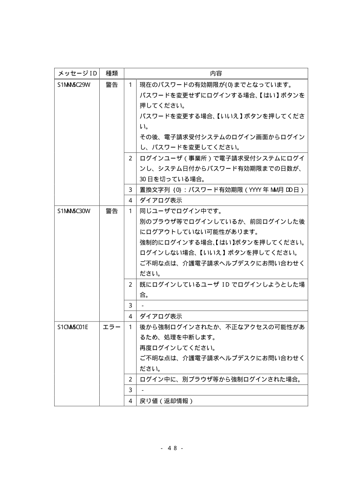
| 項番 | 項目名 | 属性 | 桁数 | 内容 | 必須 | 備考 | その他の列 |
|---|---|---|---|---|---|---|---|
| 1 | S1MM5C29W | 現在のパスワードの有効期限が{0}までとなっています。 パスワードを変更せずにログインする場合、【はい】ボタンを押してください。 パスワードを変更する場合、【いいえ】ボタンを押してください。 その後、電子請求受付システムのログイン画面からログインし、パスワードを変更してください。 | 種類: 警告 | ||||
| 2 | S1MM5C29W | ログインユーザ（事業所）で電子請求受付システムにログインし、システム日付からパスワード有効期限までの日数が、30日を切っている場合。 | 種類: 警告 | ||||
| 3 | S1MM5C29W | 置換文字列 {0}：パスワード有効期限（YYYY年MM月DD日） | 種類: 警告 | ||||
| 4 | S1MM5C29W | ダイアログ表示 | 種類: 警告 | ||||
| 1 | S1MM5C30W | 同じユーザでログイン中です。 別のブラウザ等でログインしているか、前回ログインした後にログアウトしていない可能性があります。 強制的にログインする場合、【はい】ボタンを押してください。 ログインしない場合、【いいえ】ボタンを押してください。 ご不明な点は、介護電子請求ヘルプデスクにお問い合わせください。 | 種類: 警告 | ||||
| 2 | S1MM5C30W | 既にログインしているユーザ ID でログインしようとした場合。 | 種類: 警告 | ||||
| 3 | S1MM5C30W | - | 種類: 警告 | ||||
| 4 | S1MM5C30W | ダイアログ表示 | 種類: 警告 | ||||
| 1 | S1CMM5C01E | 後から強制ログインされたか、不正なアクセスの可能性があるため、処理を中断します。 再度ログインしてください。 ご不明な点は、介護電子請求ヘルプデスクにお問い合わせください。 | 種類: エラー | ||||
| 2 | S1CMM5C01E | ログイン中に、別ブラウザ等から強制ログインされた場合。 | 種類: エラー | ||||
| 3 | S1CMM5C01E | - | 種類: エラー | ||||
| 4 | S1CMM5C01E | 戻り値（返却情報） | 種類: エラー |
| 項番 | 項目名 | 属性 | 桁数 | 内容 | 必須 | 備考 | その他の列 |
|---|---|---|---|---|---|---|---|
| 1 | S1MNM5C29W | 現在のパスワードの有効期限が{0}までとなっています。 パスワードを変更せずにログインする場合、【はい】ボタンを押してください。 パスワードを変更する場合、【いいえ】ボタンを押してください。 その後、電子請求受付システムのログイン画面からログインし、パスワードを変更してください。 | 種類: 警告 | ||||
| 2 | S1MNM5C29W | ログインユーザ(事業所)で電子請求受付システムにログインし、システム日付からパスワード有効期限までの日数が、30日を切っている場合。 | 種類: 警告 | ||||
| 3 | S1MNM5C29W | 置換文字列 {0}:パスワード有効期限(YYYY年MM月DD日) | 種類: 警告 | ||||
| 4 | S1MNM5C29W | ダイアログ表示 | 種類: 警告 | ||||
| 1 | S1MNM5C30W | 同じユーザでログイン中です。 別のブラウザ等でログインしているか、前回ログインした後にログアウトしていない可能性があります。 強制的にログインする場合、【はい】ボタンを押してください。 ログインしない場合、【いいえ】ボタンを押してください。 ご不明な点は、介護電子請求ヘルプデスクにお問い合わせください。 | 種類: 警告 | ||||
| 2 | S1MNM5C30W | 既にログインしているユーザIDでログインしようとした場合。 | 種類: 警告 | ||||
| 3 | S1MNM5C30W | - | 種類: 警告 | ||||
| 4 | S1MNM5C30W | ダイアログ表示 | 種類: 警告 | ||||
| 1 | S1CMM5C01E | 後から強制ログインされたか、不正なアクセスの可能性があるため、処理を中断します。 再度ログインしてください。 ご不明な点は、介護電子請求ヘルプデスクにお問い合わせください。 | 種類: エラー | ||||
| 2 | S1CMM5C01E | ログイン中に、別ブラウザ等から強制ログインされた場合。 | 種類: エラー | ||||
| 3 | S1CMM5C01E | - | 種類: エラー | ||||
| 4 | S1CMM5C01E | 戻り値(返却情報) | 種類: エラー |
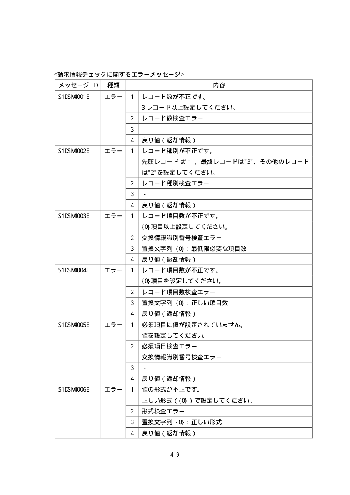
| 項番 | 項目名 | 属性 | 桁数 | 内容 | 必須 | 備考 | その他の列 |
|---|---|---|---|---|---|---|---|
| 1 | S1DSM4001E | エラー | レコード数が不正です。 3 レコード以上設定してください。 | ||||
| 2 | S1DSM4001E | エラー | レコード数検査エラー | ||||
| 3 | S1DSM4001E | エラー | - | ||||
| 4 | S1DSM4001E | エラー | 戻り値（返却情報） | ||||
| 1 | S1DSM4002E | エラー | レコード種別が不正です。 先頭レコードは"1"、最終レコードは"3"、その他のレコードは"2"を設定してください。 | ||||
| 2 | S1DSM4002E | エラー | レコード種別検査エラー | ||||
| 3 | S1DSM4002E | エラー | - | ||||
| 4 | S1DSM4002E | エラー | 戻り値（返却情報） | ||||
| 1 | S1DSM4003E | エラー | レコード項目数が不正です。 {0}項目以上設定してください。 | ||||
| 2 | S1DSM4003E | エラー | 交換情報識別番号検査エラー | ||||
| 3 | S1DSM4003E | エラー | 置換文字列 {0}：最低限必要な項目数 | ||||
| 4 | S1DSM4003E | エラー | 戻り値（返却情報） | ||||
| 1 | S1DSM4004E | エラー | レコード項目数が不正です。 {0}項目を設定してください。 | ||||
| 2 | S1DSM4004E | エラー | レコード項目数検査エラー | ||||
| 3 | S1DSM4004E | エラー | 置換文字列 {0}：正しい項目数 | ||||
| 4 | S1DSM4004E | エラー | 戻り値（返却情報） | ||||
| 1 | S1DSM4005E | エラー | 必須項目に値が設定されていません。 値を設定してください。 | ||||
| 2 | S1DSM4005E | エラー | 必須項目検査エラー 交換情報識別番号検査エラー | ||||
| 3 | S1DSM4005E | エラー | - | ||||
| 4 | S1DSM4005E | エラー | 戻り値（返却情報） | ||||
| 1 | S1DSM4006E | エラー | 値の形式が不正です。 正しい形式（{0}）で設定してください。 | ||||
| 2 | S1DSM4006E | エラー | 形式検査エラー | ||||
| 3 | S1DSM4006E | エラー | 置換文字列 {0}：正しい形式 | ||||
| 4 | S1DSM4006E | エラー | 戻り値（返却情報） |
| 項番 | 項目名 | 属性 | 桁数 | 内容 | 必須 | 備考 | その他の列 |
|---|---|---|---|---|---|---|---|
| 1 | S1DSM4001E | エラー | レコード数が不正です。 3レコード以上設定してください。 | ||||
| 2 | S1DSM4001E | エラー | レコード数検査エラー | ||||
| 3 | S1DSM4001E | エラー | - | ||||
| 4 | S1DSM4001E | エラー | 戻り値(返却情報) | ||||
| 1 | S1DSM4002E | エラー | レコード種別が不正です。 先頭レコードは"1"、最終レコードは"3"、その他のレコードは"2"を設定してください。 | ||||
| 2 | S1DSM4002E | エラー | レコード種別検査エラー | ||||
| 3 | S1DSM4002E | エラー | - | ||||
| 4 | S1DSM4002E | エラー | 戻り値(返却情報) | ||||
| 1 | S1DSM4003E | エラー | レコード項目数が不正です。 {0}項目以上設定してください。 | ||||
| 2 | S1DSM4003E | エラー | 交換情報識別番号検査エラー | ||||
| 3 | S1DSM4003E | エラー | 置換文字列 {0}:最低限必要な項目数 | ||||
| 4 | S1DSM4003E | エラー | 戻り値(返却情報) | ||||
| 1 | S1DSM4004E | エラー | レコード項目数が不正です。 {0}項目を設定してください。 | ||||
| 2 | S1DSM4004E | エラー | レコード項目数検査エラー | ||||
| 3 | S1DSM4004E | エラー | 置換文字列 {0}:正しい項目数 | ||||
| 4 | S1DSM4004E | エラー | 戻り値(返却情報) | ||||
| 1 | S1DSM4005E | エラー | 必須項目に値が設定されていません。 値を設定してください。 | ||||
| 2 | S1DSM4005E | エラー | 必須項目検査エラー 交換情報識別番号検査エラー | ||||
| 3 | S1DSM4005E | エラー | - | ||||
| 4 | S1DSM4005E | エラー | 戻り値(返却情報) | ||||
| 1 | S1DSM4006E | エラー | 値の形式が不正です。 正しい形式({0})で設定してください。 | ||||
| 2 | S1DSM4006E | エラー | 形式検査エラー | ||||
| 3 | S1DSM4006E | エラー | 置換文字列 {0}:正しい形式 | ||||
| 4 | S1DSM4006E | エラー | 戻り値(返却情報) |
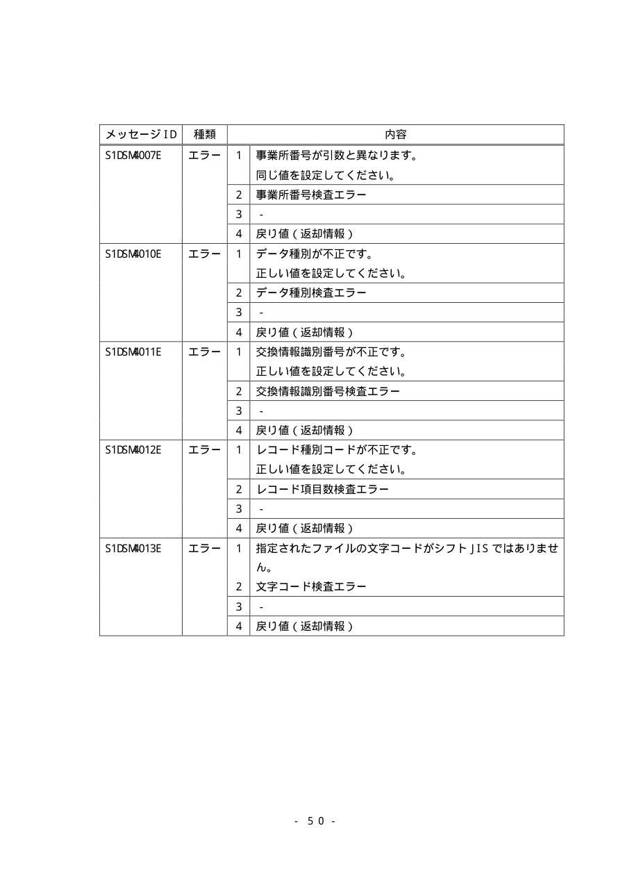
| 項番 | 項目名 | 属性 | 桁数 | 内容 | 必須 | 備考 | その他の列 |
|---|---|---|---|---|---|---|---|
| 1 | S1DSM4007E | 事業所番号が引数と異なります。同じ値を設定してください。 | 種類: エラー | ||||
| 2 | S1DSM4007E | 事業所番号検査エラー | 種類: エラー | ||||
| 3 | S1DSM4007E | - | 種類: エラー | ||||
| 4 | S1DSM4007E | 戻り値（返却情報） | 種類: エラー | ||||
| 1 | S1DSM4010E | データ種別が不正です。正しい値を設定してください。 | 種類: エラー | ||||
| 2 | S1DSM4010E | データ種別検査エラー | 種類: エラー | ||||
| 3 | S1DSM4010E | - | 種類: エラー | ||||
| 4 | S1DSM4010E | 戻り値（返却情報） | 種類: エラー | ||||
| 1 | S1DSM4011E | 交換情報識別番号が不正です。正しい値を設定してください。 | 種類: エラー | ||||
| 2 | S1DSM4011E | 交換情報識別番号検査エラー | 種類: エラー | ||||
| 3 | S1DSM4011E | - | 種類: エラー | ||||
| 4 | S1DSM4011E | 戻り値（返却情報） | 種類: エラー | ||||
| 1 | S1DSM4012E | レコード種別コードが不正です。正しい値を設定してください。 | 種類: エラー | ||||
| 2 | S1DSM4012E | レコード項目数検査エラー | 種類: エラー | ||||
| 3 | S1DSM4012E | - | 種類: エラー | ||||
| 4 | S1DSM4012E | 戻り値（返却情報） | 種類: エラー | ||||
| 1 | S1DSM4013E | 指定されたファイルの文字コードがシフトJISではありません。 | 種類: エラー | ||||
| 2 | S1DSM4013E | 文字コード検査エラー | 種類: エラー | ||||
| 3 | S1DSM4013E | - | 種類: エラー | ||||
| 4 | S1DSM4013E | 戻り値（返却情報） | 種類: エラー |
| 項番 | 項目名 | 属性 | 桁数 | 内容 | 必須 | 備考 | その他の列 |
|---|---|---|---|---|---|---|---|
| 1 | S1DSM4007E | エラー | 事業所番号が引数と異なります。 同じ値を設定してください。 | ||||
| 2 | S1DSM4007E | エラー | 事業所番号検査エラー | ||||
| 3 | S1DSM4007E | エラー | - | ||||
| 4 | S1DSM4007E | エラー | 戻り値(返却情報) | ||||
| 1 | S1DSM4010E | エラー | データ種別が不正です。 正しい値を設定してください。 | ||||
| 2 | S1DSM4010E | エラー | データ種別検査エラー | ||||
| 3 | S1DSM4010E | エラー | - | ||||
| 4 | S1DSM4010E | エラー | 戻り値(返却情報) | ||||
| 1 | S1DSM4011E | エラー | 交換情報識別番号が不正です。 正しい値を設定してください。 | ||||
| 2 | S1DSM4011E | エラー | 交換情報識別番号検査エラー | ||||
| 3 | S1DSM4011E | エラー | - | ||||
| 4 | S1DSM4011E | エラー | 戻り値(返却情報) | ||||
| 1 | S1DSM4012E | エラー | レコード種別コードが不正です。 正しい値を設定してください。 | ||||
| 2 | S1DSM4012E | エラー | レコード項目数検査エラー | ||||
| 3 | S1DSM4012E | エラー | - | ||||
| 4 | S1DSM4012E | エラー | 戻り値(返却情報) | ||||
| 1 | S1DSM4013E | エラー | 指定されたファイルの文字コードがシフトJISではありません。 | ||||
| 2 | S1DSM4013E | エラー | 文字コード検査エラー | ||||
| 3 | S1DSM4013E | エラー | - | ||||
| 4 | S1DSM4013E | エラー | 戻り値(返却情報) |
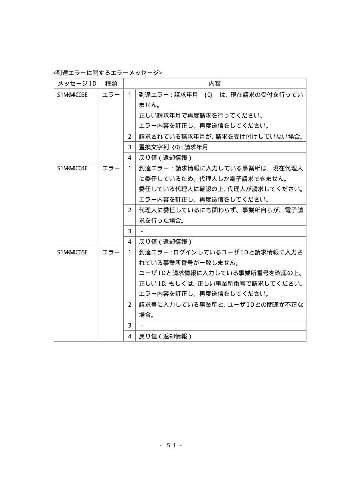
| 項番 | 項目名 | 属性 | 桁数 | 内容 | 必須 | 備考 | その他の列 |
|---|---|---|---|---|---|---|---|
| 1 | S1MNM4C03E | エラー | 到達エラー：請求年月 {0} は、現在請求の受付を行っていません。 正しい請求年月で再度請求を行ってください。 エラー内容を訂正し、再度送信をしてください。 | ||||
| 2 | S1MNM4C03E | エラー | 請求されている請求年月が、請求を受け付けしていない場合。 | ||||
| 3 | S1MNM4C03E | エラー | 置換文字列 {0}:請求年月 | ||||
| 4 | S1MNM4C03E | エラー | 戻り値（返却情報） | ||||
| 1 | S1MNM4C04E | エラー | 到達エラー：請求情報に入力している事業所は、現在代理人に委任しているため、代理人しか電子請求できません。 委任している代理人に確認の上、代理人が請求してください。 エラー内容を訂正し、再度送信をしてください。 | ||||
| 2 | S1MNM4C04E | エラー | 代理人に委任しているにも関わらず、事業所自らが、電子請求を行った場合。 | ||||
| 3 | S1MNM4C04E | エラー | - | ||||
| 4 | S1MNM4C04E | エラー | 戻り値（返却情報） | ||||
| 1 | S1MNM4C05E | エラー | 到達エラー：ログインしているユーザIDと請求情報に入力されている事業所番号が一致しません。 ユーザIDと請求情報に入力している事業所番号を確認の上、正しいID、もしくは、正しい事業所番号で請求してください。 エラー内容を訂正し、再度送信をしてください。 | ||||
| 2 | S1MNM4C05E | エラー | 請求書に入力している事業所と、ユーザIDとの関連が不正な場合。 | ||||
| 3 | S1MNM4C05E | エラー | - | ||||
| 4 | S1MNM4C05E | エラー | 戻り値（返却情報） |
| 項番 | 項目名 | 属性 | 桁数 | 内容 | 必須 | 備考 | その他の列 |
|---|---|---|---|---|---|---|---|
| 1 | S1MNM4C03E | エラー | 到達エラー：請求年月 {0} は、現在請求の受付を行っていません。 正しい請求年月で再度請求を行ってください。 エラー内容を訂正し、再度送信をしてください。 | ||||
| 2 | S1MNM4C03E | エラー | 請求されている請求年月が、請求を受け付けしていない場合。 | ||||
| 3 | S1MNM4C03E | エラー | 置換文字列 {0}: 請求年月 | ||||
| 4 | S1MNM4C03E | エラー | 戻り値（返却情報） | ||||
| 1 | S1MNM4C04E | エラー | 到達エラー：請求情報に入力している事業所は、現在代理人に委任しているため、代理人しか電子請求できません。 委任している代理人に確認の上、代理人が請求してください。 エラー内容を訂正し、再度送信をしてください。 | ||||
| 2 | S1MNM4C04E | エラー | 代理人に委任しているにも関わらず、事業所自らが、電子請求を行った場合。 | ||||
| 3 | S1MNM4C04E | エラー | - | ||||
| 4 | S1MNM4C04E | エラー | 戻り値（返却情報） | ||||
| 1 | S1MNM4C05E | エラー | 到達エラー：ログインしているユーザIDと請求情報に入力されている事業所番号が一致しません。 ユーザIDと請求情報に入力している事業所番号を確認の上、正しいID、もしくは、正しい事業所番号で請求してください。 エラー内容を訂正し、再度送信をしてください。 | ||||
| 2 | S1MNM4C05E | エラー | 請求書に入力している事業所と、ユーザIDとの関連が不正な場合。 | ||||
| 3 | S1MNM4C05E | エラー | - | ||||
| 4 | S1MNM4C05E | エラー | 戻り値（返却情報） |
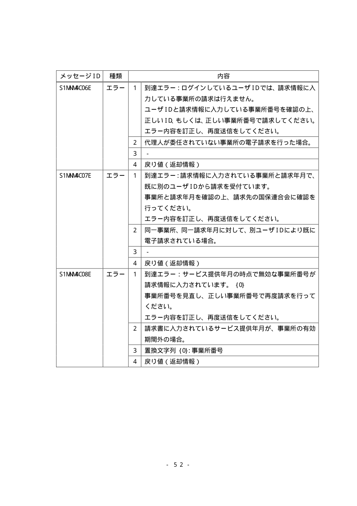
| 項番 | 項目名 | 属性 | 桁数 | 内容 | 必須 | 備考 | その他の列 |
|---|---|---|---|---|---|---|---|
| 1 | S1MM4C06E | エラー | 到達エラー：ログインしているユーザ IDでは、請求情報に入力している事業所の請求は行えません。 ユーザ IDと請求情報に入力している事業所番号を確認の上、正しいID、もしくは、正しい事業所番号で請求してください。 エラー内容を訂正し、再度送信をしてください。 | ||||
| 2 | S1MM4C06E | エラー | 代理人が委任されていない事業所の電子請求を行った場合。 | ||||
| 3 | S1MM4C06E | エラー | - | ||||
| 4 | S1MM4C06E | エラー | 戻り値（返却情報） | ||||
| 1 | S1MM4C07E | エラー | 到達エラー：請求情報に入力されている事業所と請求年月で、既に別のユーザ IDから請求を受付けています。 事業所と請求年月を確認の上、請求先の国保連合会に確認を行ってください。 エラー内容を訂正し、再度送信をしてください。 | ||||
| 2 | S1MM4C07E | エラー | 同一事業所、同一請求年月に対して、別ユーザ IDにより既に電子請求されている場合。 | ||||
| 3 | S1MM4C07E | エラー | - | ||||
| 4 | S1MM4C07E | エラー | 戻り値（返却情報） | ||||
| 1 | S1MM4C08E | エラー | 到達エラー：サービス提供年月の時点で無効な事業所番号が請求情報に入力されています。 {0} 事業所番号を見直し、正しい事業所番号で再度請求を行ってください。 エラー内容を訂正し、再度送信をしてください。 | ||||
| 2 | S1MM4C08E | エラー | 請求書に入力されているサービス提供年月が、事業所の有効期間外の場合。 | ||||
| 3 | S1MM4C08E | エラー | 置換文字列 {0}:事業所番号 | ||||
| 4 | S1MM4C08E | エラー | 戻り値（返却情報） |
| 項番 | 項目名 | 属性 | 桁数 | 内容 | 必須 | 備考 | その他の列 |
|---|---|---|---|---|---|---|---|
| 1 | S1MNM4C06E | エラー | 到達エラー：ログインしているユーザIDでは、請求情報に入力している事業所の請求は行えません。 ユーザIDと請求情報に入力している事業所番号を確認の上、正しいID、もしくは、正しい事業所番号で請求してください。 エラー内容を訂正し、再度送信をしてください。 | ||||
| 2 | S1MNM4C06E | エラー | 代理人が委任されていない事業所の電子請求を行った場合。 | ||||
| 3 | S1MNM4C06E | エラー | - | ||||
| 4 | S1MNM4C06E | エラー | 戻り値（返却情報） | ||||
| 1 | S1MNM4C07E | エラー | 到達エラー：請求情報に入力されている事業所と請求年月で、既に別のユーザIDから請求を受付ています。 事業所と請求年月を確認の上、請求先の国保連合会に確認を行ってください。 エラー内容を訂正し、再度送信をしてください。 | ||||
| 2 | S1MNM4C07E | エラー | 同一事業所、同一請求年月に対して、別ユーザIDにより既に電子請求されている場合。 | ||||
| 3 | S1MNM4C07E | エラー | - | ||||
| 4 | S1MNM4C07E | エラー | 戻り値（返却情報） | ||||
| 1 | S1MNM4C08E | エラー | 到達エラー：サービス提供年月の時点で無効な事業所番号が請求情報に入力されています。{0} 事業所番号を見直し、正しい事業所番号で再度請求を行ってください。 エラー内容を訂正し、再度送信をしてください。 | ||||
| 2 | S1MNM4C08E | エラー | 請求書に入力されているサービス提供年月が、事業所の有効期間外の場合。 | ||||
| 3 | S1MNM4C08E | エラー | 置換文字列 {0}:事業所番号 | ||||
| 4 | S1MNM4C08E | エラー | 戻り値（返却情報） |
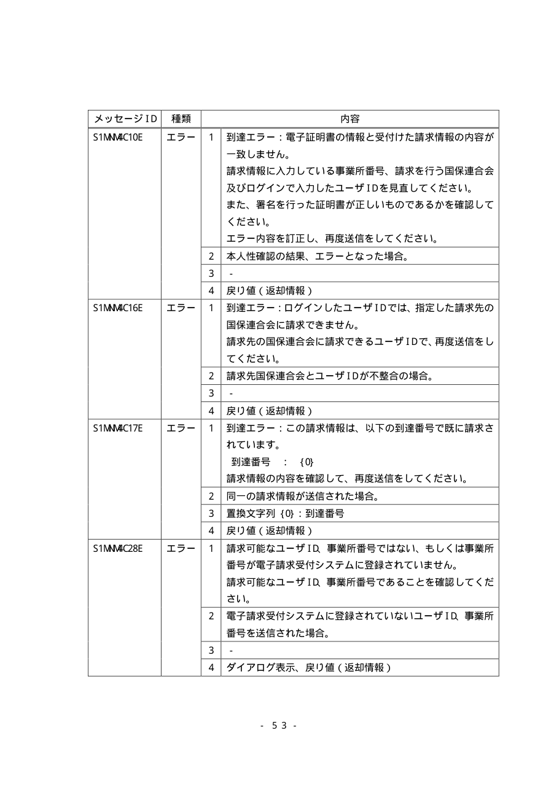
| 項番 | 項目名 | 属性 | 桁数 | 内容 | 必須 | 備考 | その他の列 |
|---|---|---|---|---|---|---|---|
| 1 | S1MM4C10E | 到達エラー：電子証明書の情報と受付けた請求情報の内容が一致しません。請求情報に入力している事業所番号、請求を行う国保連合会及びログインで入力したユーザＩＤを見直してください。また、署名を行った証明書が正しいものであるかを確認してください。エラー内容を訂正し、再度送信をしてください。 | 種類: エラー | ||||
| 2 | S1MM4C10E | 本人性確認の結果、エラーとなった場合。 | 種類: エラー | ||||
| 3 | S1MM4C10E | - | 種類: エラー | ||||
| 4 | S1MM4C10E | 戻り値（返却情報） | 種類: エラー | ||||
| 1 | S1MM4C16E | 到達エラー：ログインしたユーザＩＤでは、指定した請求先の国保連合会に請求できません。請求先の国保連合会に請求できるユーザＩＤで、再度送信をしてください。 | 種類: エラー | ||||
| 2 | S1MM4C16E | 請求先国保連合会とユーザＩＤが不整合の場合。 | 種類: エラー | ||||
| 3 | S1MM4C16E | - | 種類: エラー | ||||
| 4 | S1MM4C16E | 戻り値（返却情報） | 種類: エラー | ||||
| 1 | S1MM4C17E | 到達エラー：この請求情報は、以下の到達番号で既に請求されています。 到達番号 ： {0} 請求情報の内容を確認して、再度送信をしてください。 | 種類: エラー | ||||
| 2 | S1MM4C17E | 同一の請求情報が送信された場合。 | 種類: エラー | ||||
| 3 | S1MM4C17E | 置換文字列{0}：到達番号 | 種類: エラー | ||||
| 4 | S1MM4C17E | 戻り値（返却情報） | 種類: エラー | ||||
| 1 | S1MM4C28E | 請求可能なユーザＩＤ、事業所番号ではない、もしくは事業所番号が電子請求受付システムに登録されていません。請求可能なユーザＩＤ、事業所番号であることを確認してください。 | 種類: エラー | ||||
| 2 | S1MM4C28E | 電子請求受付システムに登録されていないユーザＩＤ、事業所番号を送信された場合。 | 種類: エラー | ||||
| 3 | S1MM4C28E | - | 種類: エラー | ||||
| 4 | S1MM4C28E | ダイアログ表示、戻り値（返却情報） | 種類: エラー |
| 項番 | 項目名 | 属性 | 桁数 | 内容 | 必須 | 備考 | その他の列 |
|---|---|---|---|---|---|---|---|
| 1 | S1MNM4C10E | エラー | 到達エラー：電子証明書の情報と受付けた請求情報の内容が一致しません。 請求情報に入力している事業所番号、請求を行う国保連合会及びログインで入力したユーザIDを見直してください。 また、署名を行った証明書が正しいものであるかを確認してください。 エラー内容を訂正し、再度送信をしてください。 | ||||
| 2 | S1MNM4C10E | エラー | 本人性確認の結果、エラーとなった場合。 | ||||
| 3 | S1MNM4C10E | エラー | - | ||||
| 4 | S1MNM4C10E | エラー | 戻り値（返却情報） | ||||
| 1 | S1MNM4C16E | エラー | 到達エラー：ログインしたユーザIDでは、指定した請求先の国保連合会に請求できません。 請求先の国保連合会に請求できるユーザIDで、再度送信をしてください。 | ||||
| 2 | S1MNM4C16E | エラー | 請求先国保連合会とユーザIDが不整合の場合。 | ||||
| 3 | S1MNM4C16E | エラー | - | ||||
| 4 | S1MNM4C16E | エラー | 戻り値（返却情報） | ||||
| 1 | S1MNM4C17E | エラー | 到達エラー：この請求情報は、以下の到達番号で既に請求されています。 到達番号 ： {0} 請求情報の内容を確認して、再度送信をしてください。 | ||||
| 2 | S1MNM4C17E | エラー | 同一の請求情報が送信された場合。 | ||||
| 3 | S1MNM4C17E | エラー | 置換文字列 {0}：到達番号 | ||||
| 4 | S1MNM4C17E | エラー | 戻り値（返却情報） | ||||
| 1 | S1MNM4C28E | エラー | 請求可能なユーザID、事業所番号ではない、もしくは事業所番号が電子請求受付システムに登録されていません。 請求可能なユーザID、事業所番号であることを確認してください。 | ||||
| 2 | S1MNM4C28E | エラー | 電子請求受付システムに登録されていないユーザID、事業所番号を送信された場合。 | ||||
| 3 | S1MNM4C28E | エラー | - | ||||
| 4 | S1MNM4C28E | エラー | ダイアログ表示、戻り値（返却情報） |
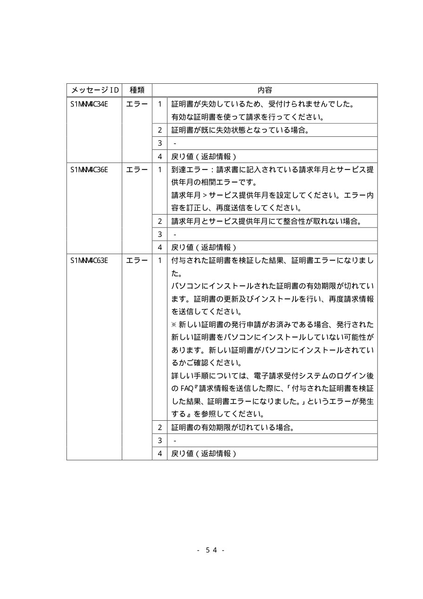
| 項番 | 項目名 | 属性 | 桁数 | 内容 | 必須 | 備考 | その他の列 |
|---|---|---|---|---|---|---|---|
| 1 | S1MNM4C34E | 証明書が失効しているため、受付けられませんでした。 有効な証明書を使って請求を行ってください。 | 種類: エラー | ||||
| 2 | S1MNM4C34E | 証明書が既に失効状態となっている場合。 | 種類: エラー | ||||
| 3 | S1MNM4C34E | - | 種類: エラー | ||||
| 4 | S1MNM4C34E | 戻り値（返却情報） | 種類: エラー | ||||
| 1 | S1MNM4C36E | 到達エラー：請求書に記入されている請求年月とサービス提供年月の相関エラーです。 請求年月 > サービス提供年月を設定してください。エラー内容を訂正し、再度送信をしてください。 | 種類: エラー | ||||
| 2 | S1MNM4C36E | 請求年月とサービス提供年月にて整合性が取れない場合。 | 種類: エラー | ||||
| 3 | S1MNM4C36E | - | 種類: エラー | ||||
| 4 | S1MNM4C36E | 戻り値（返却情報） | 種類: エラー | ||||
| 1 | S1MNM4C63E | 付与された証明書を検証した結果、証明書エラーになりました。 パソコンにインストールされた証明書の有効期限が切れています。証明書の更新及びインストールを行い、再度請求情報を送信してください。 ※ 新しい証明書の発行申請がお済みである場合、発行された新しい証明書をパソコンにインストールしていない可能性があります。新しい証明書がパソコンにインストールされているかご確認ください。 詳しい手順については、電子請求受付システムのログイン後の FAQ『請求情報を送信した際に、「付与された証明書を検証した結果、証明書エラーになりました。」というエラーが発生する』を参照してください。 | 種類: エラー | ||||
| 2 | S1MNM4C63E | 証明書の有効期限が切れている場合。 | 種類: エラー | ||||
| 3 | S1MNM4C63E | - | 種類: エラー | ||||
| 4 | S1MNM4C63E | 戻り値（返却情報） | 種類: エラー |
| 項番 | 項目名 | 属性 | 桁数 | 内容 | 必須 | 備考 | その他の列 |
|---|---|---|---|---|---|---|---|
| 1 | S1MNM4C34E | 証明書が失効しているため、受付けられませんでした。 有効な証明書を使って請求を行ってください。 | 種類: エラー | ||||
| 2 | S1MNM4C34E | 証明書が既に失効状態となっている場合。 | 種類: エラー | ||||
| 3 | S1MNM4C34E | - | 種類: エラー | ||||
| 4 | S1MNM4C34E | 戻り値(返却情報) | 種類: エラー | ||||
| 1 | S1MNM4C36E | 到達エラー:請求書に記入されている請求年月とサービス提供年月の相関エラーです。 請求年月>サービス提供年月を設定してください。エラー内容を訂正し、再度送信をしてください。 | 種類: エラー | ||||
| 2 | S1MNM4C36E | 請求年月とサービス提供年月にて整合性が取れない場合。 | 種類: エラー | ||||
| 3 | S1MNM4C36E | - | 種類: エラー | ||||
| 4 | S1MNM4C36E | 戻り値(返却情報) | 種類: エラー | ||||
| 1 | S1MNM4C63E | 付与された証明書を検証した結果、証明書エラーになりました。 パソコンにインストールされた証明書の有効期限が切れています。証明書の更新及びインストールを行い、再度請求情報を送信してください。 ※新しい証明書の発行申請がお済みである場合、発行された新しい証明書をパソコンにインストールしていない可能性があります。新しい証明書がパソコンにインストールされているかご確認ください。 詳しい手順については、電子請求受付システムのログイン後のFAQ『請求情報を送信した際に、「付与された証明書を検証した結果、証明書エラーになりました。」というエラーが発生する』を参照してください。 | 種類: エラー | ||||
| 2 | S1MNM4C63E | 証明書の有効期限が切れている場合。 | 種類: エラー | ||||
| 3 | S1MNM4C63E | - | 種類: エラー | ||||
| 4 | S1MNM4C63E | 戻り値(返却情報) | 種類: エラー |
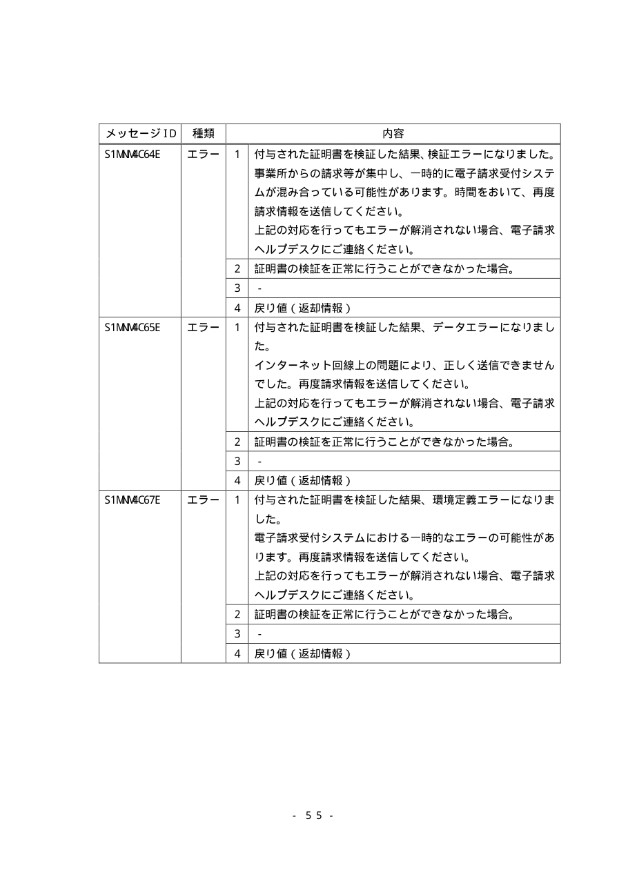
| 項番 | 項目名 | 属性 | 桁数 | 内容 | 必須 | 備考 | その他の列 |
|---|---|---|---|---|---|---|---|
| 1 | S1MNM4C64E | 付与された証明書を検証した結果、検証エラーになりました。事業所からの請求等が集中し、一時的に電子請求受付システムが混み合っている可能性があります。時間をおいて、再度請求情報を送信してください。上記の対応を行ってもエラーが解消されない場合、電子請求ヘルプデスクにご連絡ください。 | 種類: エラー | ||||
| 2 | S1MNM4C64E | 証明書の検証を正常に行うことができなかった場合。 | 種類: エラー | ||||
| 3 | S1MNM4C64E | - | 種類: エラー | ||||
| 4 | S1MNM4C64E | 戻り値（返却情報） | 種類: エラー | ||||
| 1 | S1MNM4C65E | 付与された証明書を検証した結果、データエラーになりました。インターネット回線上の問題により、正しく送信できませんでした。再度請求情報を送信してください。上記の対応を行ってもエラーが解消されない場合、電子請求ヘルプデスクにご連絡ください。 | 種類: エラー | ||||
| 2 | S1MNM4C65E | 証明書の検証を正常に行うことができなかった場合。 | 種類: エラー | ||||
| 3 | S1MNM4C65E | - | 種類: エラー | ||||
| 4 | S1MNM4C65E | 戻り値（返却情報） | 種類: エラー | ||||
| 1 | S1MNM4C67E | 付与された証明書を検証した結果、環境定義エラーになりました。電子請求受付システムにおける一時的なエラーの可能性があります。再度請求情報を送信してください。上記の対応を行ってもエラーが解消されない場合、電子請求ヘルプデスクにご連絡ください。 | 種類: エラー | ||||
| 2 | S1MNM4C67E | 証明書の検証を正常に行うことができなかった場合。 | 種類: エラー | ||||
| 3 | S1MNM4C67E | - | 種類: エラー | ||||
| 4 | S1MNM4C67E | 戻り値（返却情報） | 種類: エラー |
| 項番 | 項目名 | 属性 | 桁数 | 内容 | 必須 | 備考 | その他の列 |
|---|---|---|---|---|---|---|---|
| 1 | S1MNM4C64E | 付与された証明書を検証した結果、検証エラーになりました。 事業所からの請求等が集中し、一時的に電子請求受付システムが混み合っている可能性があります。時間をおいて、再度請求情報を送信してください。 上記の対応を行ってもエラーが解消されない場合、電子請求ヘルプデスクにご連絡ください。 | 種類: エラー | ||||
| 2 | S1MNM4C64E | 証明書の検証を正常に行うことができなかった場合。 | 種類: エラー | ||||
| 3 | S1MNM4C64E | - | 種類: エラー | ||||
| 4 | S1MNM4C64E | 戻り値(返却情報) | 種類: エラー | ||||
| 1 | S1MNM4C65E | 付与された証明書を検証した結果、データエラーになりました。 インターネット回線上の問題により、正しく送信できませんでした。再度請求情報を送信してください。 上記の対応を行ってもエラーが解消されない場合、電子請求ヘルプデスクにご連絡ください。 | 種類: エラー | ||||
| 2 | S1MNM4C65E | 証明書の検証を正常に行うことができなかった場合。 | 種類: エラー | ||||
| 3 | S1MNM4C65E | - | 種類: エラー | ||||
| 4 | S1MNM4C65E | 戻り値(返却情報) | 種類: エラー | ||||
| 1 | S1MNM4C67E | 付与された証明書を検証した結果、環境定義エラーになりました。 電子請求受付システムにおける一時的なエラーの可能性があります。再度請求情報を送信してください。 上記の対応を行ってもエラーが解消されない場合、電子請求ヘルプデスクにご連絡ください。 | 種類: エラー | ||||
| 2 | S1MNM4C67E | 証明書の検証を正常に行うことができなかった場合。 | 種類: エラー | ||||
| 3 | S1MNM4C67E | - | 種類: エラー | ||||
| 4 | S1MNM4C67E | 戻り値(返却情報) | 種類: エラー |
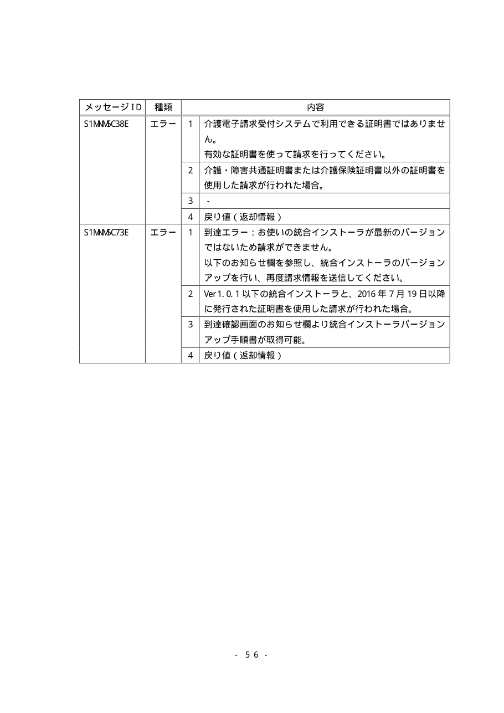
| 項番 | 項目名 | 属性 | 桁数 | 内容 | 必須 | 備考 | その他の列 |
|---|---|---|---|---|---|---|---|
| 1 | S1MM5C38E | 介護電子請求受付システムで利用できる証明書ではありません。有効な証明書を使って請求を行ってください。 | 種類: エラー | ||||
| 2 | S1MM5C38E | 介護・障害共通証明書または介護保険証明書以外の証明書を使用した請求が行われた場合。 | 種類: エラー | ||||
| 3 | S1MM5C38E | - | 種類: エラー | ||||
| 4 | S1MM5C38E | 戻り値（返却情報） | 種類: エラー | ||||
| 1 | S1MM5C73E | 到達エラー：お使いの統合インストーラが最新のバージョンではないため請求ができません。以下のお知らせ欄を参照し、統合インストーラのバージョンアップを行い、再度請求情報を送信してください。 | 種類: エラー | ||||
| 2 | S1MM5C73E | Ver1.0.1以下の統合インストーラと、2016年7月19日以降に発行された証明書を使用した請求が行われた場合。 | 種類: エラー | ||||
| 3 | S1MM5C73E | 到達確認画面のお知らせ欄より統合インストーラバージョンアップ手順書が取得可能。 | 種類: エラー | ||||
| 4 | S1MM5C73E | 戻り値（返却情報） | 種類: エラー |
| 項番 | 項目名 | 属性 | 桁数 | 内容 | 必須 | 備考 | その他の列 |
|---|---|---|---|---|---|---|---|
| 1 | S1MNM5C38E | 介護電子請求受付システムで利用できる証明書ではありません。 有効な証明書を使って請求を行ってください。 | 種類: エラー | ||||
| 2 | S1MNM5C38E | 介護・障害共通証明書または介護保険証明書以外の証明書を使用した請求が行われた場合。 | 種類: エラー | ||||
| 3 | S1MNM5C38E | - | 種類: エラー | ||||
| 4 | S1MNM5C38E | 戻り値(返却情報) | 種類: エラー | ||||
| 1 | S1MNM5C73E | 到達エラー:お使いの統合インストーラが最新のバージョンではないため請求ができません。 以下のお知らせ欄を参照し、統合インストーラのバージョンアップを行い、再度請求情報を送信してください。 | 種類: エラー | ||||
| 2 | S1MNM5C73E | Ver1.0.1以下の統合インストーラと、2016年7月19日以降に発行された証明書を使用した請求が行われた場合。 | 種類: エラー | ||||
| 3 | S1MNM5C73E | 到達確認画面のお知らせ欄より統合インストーラバージョンアップ手順書が取得可能。 | 種類: エラー | ||||
| 4 | S1MNM5C73E | 戻り値(返却情報) | 種類: エラー |
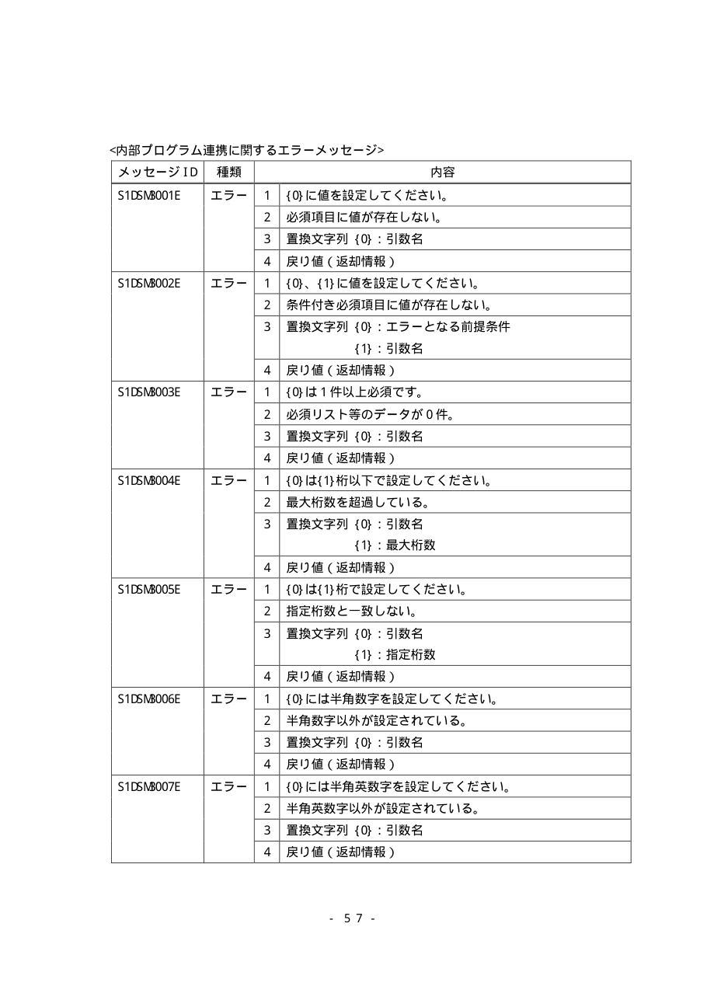
| 項番 | 項目名 | 属性 | 桁数 | 内容 | 必須 | 備考 | その他の列 |
|---|---|---|---|---|---|---|---|
| 1 | S1DSM8001E | {0}に値を設定してください。 | 種類: エラー | ||||
| 2 | S1DSM8001E | 必須項目に値が存在しない。 | 種類: エラー | ||||
| 3 | S1DSM8001E | 置換文字列 {0}：引数名 | 種類: エラー | ||||
| 4 | S1DSM8001E | 戻り値（返却情報） | 種類: エラー | ||||
| 1 | S1DSM8002E | {0}、{1}に値を設定してください。 | 種類: エラー | ||||
| 2 | S1DSM8002E | 条件付き必須項目に値が存在しない。 | 種類: エラー | ||||
| 3 | S1DSM8002E | 置換文字列 {0}：エラーとなる前提条件 {1}：引数名 | 種類: エラー | ||||
| 4 | S1DSM8002E | 戻り値（返却情報） | 種類: エラー | ||||
| 1 | S1DSM8003E | {0}は1件以上必須です。 | 種類: エラー | ||||
| 2 | S1DSM8003E | 必須リスト等のデータが0件。 | 種類: エラー | ||||
| 3 | S1DSM8003E | 置換文字列 {0}：引数名 | 種類: エラー | ||||
| 4 | S1DSM8003E | 戻り値（返却情報） | 種類: エラー | ||||
| 1 | S1DSM8004E | {0}は{1}桁以下で設定してください。 | 種類: エラー | ||||
| 2 | S1DSM8004E | 最大桁数を超過している。 | 種類: エラー | ||||
| 3 | S1DSM8004E | 置換文字列 {0}：引数名 {1}：最大桁数 | 種類: エラー | ||||
| 4 | S1DSM8004E | 戻り値（返却情報） | 種類: エラー | ||||
| 1 | S1DSM8005E | {0}は{1}桁で設定してください。 | 種類: エラー | ||||
| 2 | S1DSM8005E | 指定桁数と一致しない。 | 種類: エラー | ||||
| 3 | S1DSM8005E | 置換文字列 {0}：引数名 {1}：指定桁数 | 種類: エラー | ||||
| 4 | S1DSM8005E | 戻り値（返却情報） | 種類: エラー | ||||
| 1 | S1DSM8006E | {0}には半角数字を設定してください。 | 種類: エラー | ||||
| 2 | S1DSM8006E | 半角数字以外が設定されている。 | 種類: エラー | ||||
| 3 | S1DSM8006E | 置換文字列 {0}：引数名 | 種類: エラー | ||||
| 4 | S1DSM8006E | 戻り値（返却情報） | 種類: エラー | ||||
| 1 | S1DSM8007E | {0}には半角英数字を設定してください。 | 種類: エラー | ||||
| 2 | S1DSM8007E | 半角英数字以外が設定されている。 | 種類: エラー | ||||
| 3 | S1DSM8007E | 置換文字列 {0}：引数名 | 種類: エラー | ||||
| 4 | S1DSM8007E | 戻り値（返却情報） | 種類: エラー |
| 項番 | 項目名 | 属性 | 桁数 | 内容 | 必須 | 備考 | その他の列 |
|---|---|---|---|---|---|---|---|
| 1 | S1DSM3001E | エラー | {0}に値を設定してください。 | ||||
| 2 | S1DSM3001E | エラー | 必須項目に値が存在しない。 | ||||
| 3 | S1DSM3001E | エラー | 置換文字列 {0}:引数名 | ||||
| 4 | S1DSM3001E | エラー | 戻り値(返却情報) | ||||
| 1 | S1DSM3002E | エラー | {0}、{1}に値を設定してください。 | ||||
| 2 | S1DSM3002E | エラー | 条件付き必須項目に値が存在しない。 | ||||
| 3 | S1DSM3002E | エラー | 置換文字列 {0}:エラーとなる前提条件 {1}:引数名 | ||||
| 4 | S1DSM3002E | エラー | 戻り値(返却情報) | ||||
| 1 | S1DSM3003E | エラー | {0}は1件以上必須です。 | ||||
| 2 | S1DSM3003E | エラー | 必須リスト等のデータが0件。 | ||||
| 3 | S1DSM3003E | エラー | 置換文字列 {0}:引数名 | ||||
| 4 | S1DSM3003E | エラー | 戻り値(返却情報) | ||||
| 1 | S1DSM3004E | エラー | {0}は{1}桁以下で設定してください。 | ||||
| 2 | S1DSM3004E | エラー | 最大桁数を超過している。 | ||||
| 3 | S1DSM3004E | エラー | 置換文字列 {0}:引数名 {1}:最大桁数 | ||||
| 4 | S1DSM3004E | エラー | 戻り値(返却情報) | ||||
| 1 | S1DSM3005E | エラー | {0}は{1}桁で設定してください。 | ||||
| 2 | S1DSM3005E | エラー | 指定桁数と一致しない。 | ||||
| 3 | S1DSM3005E | エラー | 置換文字列 {0}:引数名 {1}:指定桁数 | ||||
| 4 | S1DSM3005E | エラー | 戻り値(返却情報) | ||||
| 1 | S1DSM3006E | エラー | {0}には半角数字を設定してください。 | ||||
| 2 | S1DSM3006E | エラー | 半角数字以外が設定されている。 | ||||
| 3 | S1DSM3006E | エラー | 置換文字列 {0}:引数名 | ||||
| 4 | S1DSM3006E | エラー | 戻り値(返却情報) | ||||
| 1 | S1DSM3007E | エラー | {0}には半角英数字を設定してください。 | ||||
| 2 | S1DSM3007E | エラー | 半角英数字以外が設定されている。 | ||||
| 3 | S1DSM3007E | エラー | 置換文字列 {0}:引数名 | ||||
| 4 | S1DSM3007E | エラー | 戻り値(返却情報) |
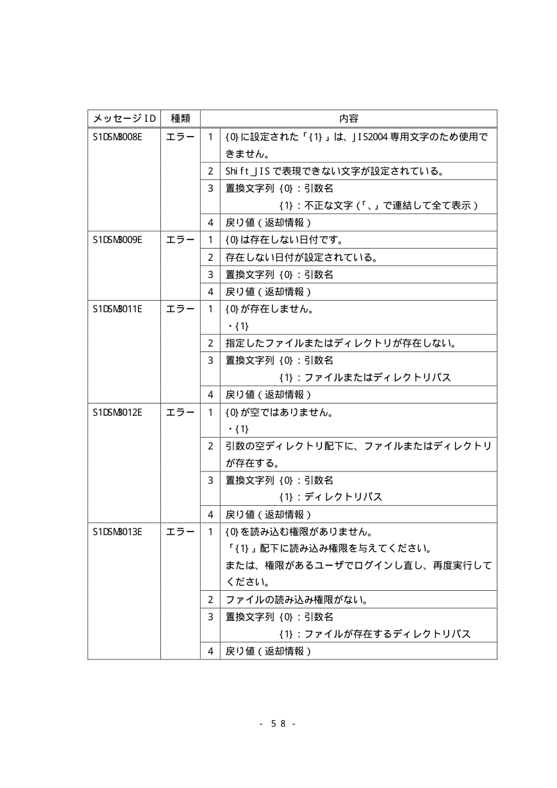
| 項番 | 項目名 | 属性 | 桁数 | 内容 | 必須 | 備考 | その他の列 |
|---|---|---|---|---|---|---|---|
| 1 | S1DSMB008E | {0}に設定された「{1}」は、JIS2004専用文字のため使用できません。 | 種類: エラー | ||||
| 2 | S1DSMB008E | Shift_JISで表現できない文字が設定されている。 | 種類: エラー | ||||
| 3 | S1DSMB008E | 置換文字列 {0}：引数名 {1}：不正な文字（「、」で連結して全て表示） | 種類: エラー | ||||
| 4 | S1DSMB008E | 戻り値（返却情報） | 種類: エラー | ||||
| 1 | S1DSMB009E | {0}は存在しない日付です。 | 種類: エラー | ||||
| 2 | S1DSMB009E | 存在しない日付が設定されている。 | 種類: エラー | ||||
| 3 | S1DSMB009E | 置換文字列 {0}：引数名 | 種類: エラー | ||||
| 4 | S1DSMB009E | 戻り値（返却情報） | 種類: エラー | ||||
| 1 | S1DSMB011E | {0}が存在しません。 ・{1} | 種類: エラー | ||||
| 2 | S1DSMB011E | 指定したファイルまたはディレクトリが存在しない。 | 種類: エラー | ||||
| 3 | S1DSMB011E | 置換文字列 {0}：引数名 {1}：ファイルまたはディレクトリパス | 種類: エラー | ||||
| 4 | S1DSMB011E | 戻り値（返却情報） | 種類: エラー | ||||
| 1 | S1DSMB012E | {0}が空ではありません。 ・{1} | 種類: エラー | ||||
| 2 | S1DSMB012E | 引数の空ディレクトリ配下に、ファイルまたはディレクトリが存在する。 | 種類: エラー | ||||
| 3 | S1DSMB012E | 置換文字列 {0}：引数名 {1}：ディレクトリパス | 種類: エラー | ||||
| 4 | S1DSMB012E | 戻り値（返却情報） | 種類: エラー | ||||
| 1 | S1DSMB013E | {0}を読み込む権限がありません。 「{1}」配下に読み込み権限を与えてください。 または、権限があるユーザでログインし直し、再度実行してください。 | 種類: エラー | ||||
| 2 | S1DSMB013E | ファイルの読み込み権限がない。 | 種類: エラー | ||||
| 3 | S1DSMB013E | 置換文字列 {0}：引数名 {1}：ファイルが存在するディレクトリパス | 種類: エラー | ||||
| 4 | S1DSMB013E | 戻り値（返却情報） | 種類: エラー |
| 項番 | 項目名 | 属性 | 桁数 | 内容 | 必須 | 備考 | その他の列 |
|---|---|---|---|---|---|---|---|
| 1 | S1DSM008E | エラー | {0}に設定された「{1}」は、JIS2004専用文字のため使用できません。 | ||||
| 2 | S1DSM008E | エラー | Shift_JISで表現できない文字が設定されている。 | ||||
| 3 | S1DSM008E | エラー | 置換文字列 {0}:引数名 {1}:不正な文字(「、」で連結して全て表示) | ||||
| 4 | S1DSM008E | エラー | 戻り値(返却情報) | ||||
| 1 | S1DSM009E | エラー | {0}は存在しない日付です。 | ||||
| 2 | S1DSM009E | エラー | 存在しない日付が設定されている。 | ||||
| 3 | S1DSM009E | エラー | 置換文字列 {0}:引数名 | ||||
| 4 | S1DSM009E | エラー | 戻り値(返却情報) | ||||
| 1 | S1DSM011E | エラー | {0}が存在しません。 ・{1} | ||||
| 2 | S1DSM011E | エラー | 指定したファイルまたはディレクトリが存在しない。 | ||||
| 3 | S1DSM011E | エラー | 置換文字列 {0}:引数名 {1}:ファイルまたはディレクトリパス | ||||
| 4 | S1DSM011E | エラー | 戻り値(返却情報) | ||||
| 1 | S1DSM012E | エラー | {0}が空ではありません。 ・{1} | ||||
| 2 | S1DSM012E | エラー | 引数の空ディレクトリ配下に、ファイルまたはディレクトリが存在する。 | ||||
| 3 | S1DSM012E | エラー | 置換文字列 {0}:引数名 {1}:ディレクトリパス | ||||
| 4 | S1DSM012E | エラー | 戻り値(返却情報) | ||||
| 1 | S1DSM013E | エラー | {0}を読み込む権限がありません。 「{1}」配下に読み込み権限を与えてください。 または、権限があるユーザでログインし直し、再度実行してください。 | ||||
| 2 | S1DSM013E | エラー | ファイルの読み込み権限がない。 | ||||
| 3 | S1DSM013E | エラー | 置換文字列 {0}:引数名 {1}:ファイルが存在するディレクトリパス | ||||
| 4 | S1DSM013E | エラー | 戻り値(返却情報) |
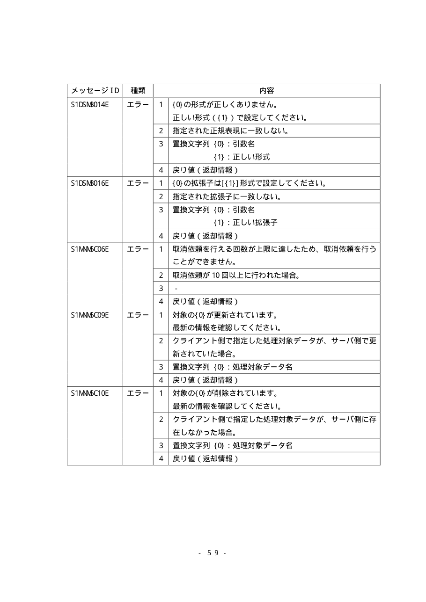
| 項番 | 項目名 | 属性 | 桁数 | 内容 | 必須 | 備考 | その他の列 |
|---|---|---|---|---|---|---|---|
| 1 | S1DSMB014E | エラー | {0}の形式が正しくありません。 正しい形式({1})で設定してください。 | ||||
| 2 | S1DSMB014E | エラー | 指定された正規表現に一致しない。 | ||||
| 3 | S1DSMB014E | エラー | 置換文字列 {0}：引数名 {1}：正しい形式 | ||||
| 4 | S1DSMB014E | エラー | 戻り値（返却情報） | ||||
| 1 | S1DSMB016E | エラー | {0}の拡張子は[{1}]形式で設定してください。 | ||||
| 2 | S1DSMB016E | エラー | 指定された拡張子に一致しない。 | ||||
| 3 | S1DSMB016E | エラー | 置換文字列 {0}：引数名 {1}：正しい拡張子 | ||||
| 4 | S1DSMB016E | エラー | 戻り値（返却情報） | ||||
| 1 | S1MNM5C06E | エラー | 取消依頼を行える回数が上限に達したため、取消依頼を行うことができません。 | ||||
| 2 | S1MNM5C06E | エラー | 取消依頼が10回以上に行われた場合。 | ||||
| 3 | S1MNM5C06E | エラー | - | ||||
| 4 | S1MNM5C06E | エラー | 戻り値（返却情報） | ||||
| 1 | S1MNM5C09E | エラー | 対象の{0}が更新されています。 最新の情報を確認してください。 | ||||
| 2 | S1MNM5C09E | エラー | クライアント側で指定した処理対象データが、サーバ側で更新されていた場合。 | ||||
| 3 | S1MNM5C09E | エラー | 置換文字列 {0}：処理対象データ名 | ||||
| 4 | S1MNM5C09E | エラー | 戻り値（返却情報） | ||||
| 1 | S1MNM5C10E | エラー | 対象の{0}が削除されています。 最新の情報を確認してください。 | ||||
| 2 | S1MNM5C10E | エラー | クライアント側で指定した処理対象データが、サーバ側に存在しなかった場合。 | ||||
| 3 | S1MNM5C10E | エラー | 置換文字列 {0}：処理対象データ名 | ||||
| 4 | S1MNM5C10E | エラー | 戻り値（返却情報） |
| 項番 | 項目名 | 属性 | 桁数 | 内容 | 必須 | 備考 | その他の列 |
|---|---|---|---|---|---|---|---|
| 1 | S1DSM3014E | {0}の形式が正しくありません。 正しい形式({1})で設定してください。 | 種類: エラー | ||||
| 2 | S1DSM3014E | 指定された正規表現に一致しない。 | 種類: エラー | ||||
| 3 | S1DSM3014E | 置換文字列 {0}:引数名 {1}:正しい形式 | 種類: エラー | ||||
| 4 | S1DSM3014E | 戻り値(返却情報) | 種類: エラー | ||||
| 1 | S1DSM3016E | {0}の拡張子は[{1}]形式で設定してください。 | 種類: エラー | ||||
| 2 | S1DSM3016E | 指定された拡張子に一致しない。 | 種類: エラー | ||||
| 3 | S1DSM3016E | 置換文字列 {0}:引数名 {1}:正しい拡張子 | 種類: エラー | ||||
| 4 | S1DSM3016E | 戻り値(返却情報) | 種類: エラー | ||||
| 1 | S1MNM5C06E | 取消依頼を行える回数が上限に達したため、取消依頼を行うことができません。 | 種類: エラー | ||||
| 2 | S1MNM5C06E | 取消依頼が10回以上に行われた場合。 | 種類: エラー | ||||
| 3 | S1MNM5C06E | - | 種類: エラー | ||||
| 4 | S1MNM5C06E | 戻り値(返却情報) | 種類: エラー | ||||
| 1 | S1MNM5C09E | 対象の{0}が更新されています。 最新の情報を確認してください。 | 種類: エラー | ||||
| 2 | S1MNM5C09E | クライアント側で指定した処理対象データが、サーバ側で更新されていた場合。 | 種類: エラー | ||||
| 3 | S1MNM5C09E | 置換文字列 {0}:処理対象データ名 | 種類: エラー | ||||
| 4 | S1MNM5C09E | 戻り値(返却情報) | 種類: エラー | ||||
| 1 | S1MNM5C10E | 対象の{0}が削除されています。 最新の情報を確認してください。 | 種類: エラー | ||||
| 2 | S1MNM5C10E | クライアント側で指定した処理対象データが、サーバ側に存在しなかった場合。 | 種類: エラー | ||||
| 3 | S1MNM5C10E | 置換文字列 {0}:処理対象データ名 | 種類: エラー | ||||
| 4 | S1MNM5C10E | 戻り値(返却情報) | 種類: エラー |
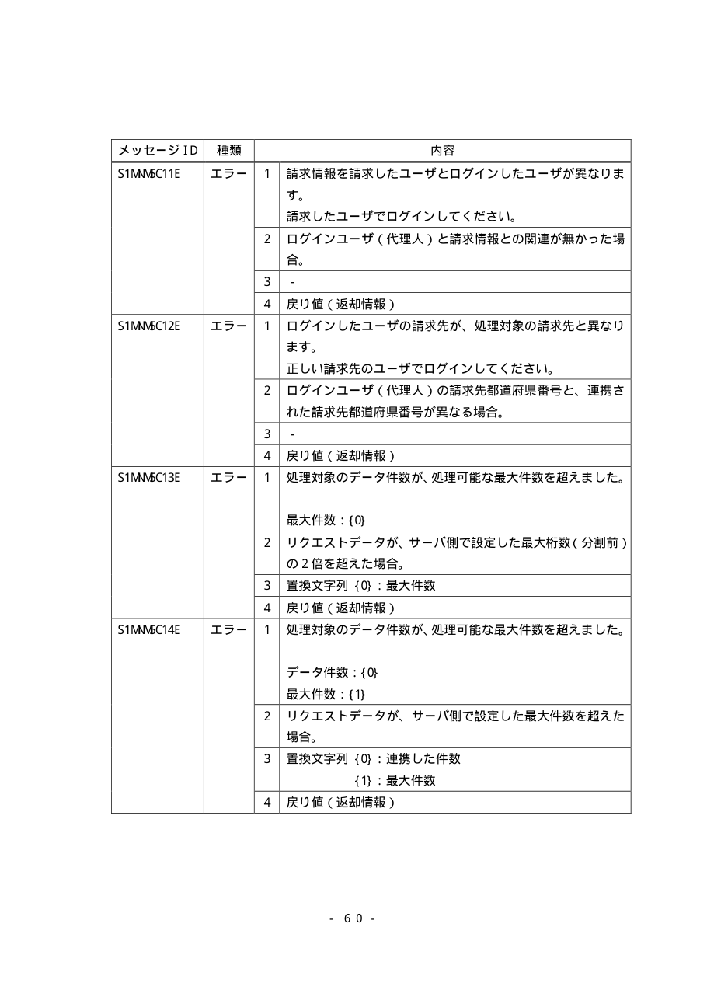
| 項番 | 項目名 | 属性 | 桁数 | 内容 | 必須 | 備考 | その他の列 |
|---|---|---|---|---|---|---|---|
| 1 | S1MM5C11E | 請求情報を請求したユーザとログインしたユーザが異なります。 請求したユーザでログインしてください。 | 種類: エラー | ||||
| 2 | S1MM5C11E | ログインユーザ（代理人）と請求情報との関連が無かった場合。 | 種類: エラー | ||||
| 3 | S1MM5C11E | - | 種類: エラー | ||||
| 4 | S1MM5C11E | 戻り値（返却情報） | 種類: エラー | ||||
| 1 | S1MM5C12E | ログインしたユーザの請求先が、処理対象の請求先と異なります。 正しい請求先のユーザでログインしてください。 | 種類: エラー | ||||
| 2 | S1MM5C12E | ログインユーザ（代理人）の請求先都道府県番号と、連携された請求先都道府県番号が異なる場合。 | 種類: エラー | ||||
| 3 | S1MM5C12E | - | 種類: エラー | ||||
| 4 | S1MM5C12E | 戻り値（返却情報） | 種類: エラー | ||||
| 1 | S1MM5C13E | 処理対象のデータ件数が、処理可能な最大件数を超えました。 最大件数：{0} | 種類: エラー | ||||
| 2 | S1MM5C13E | リクエストデータが、サーバ側で設定した最大桁数（分割前）の2倍を超えた場合。 | 種類: エラー | ||||
| 3 | S1MM5C13E | 置換文字列 {0}：最大件数 | 種類: エラー | ||||
| 4 | S1MM5C13E | 戻り値（返却情報） | 種類: エラー | ||||
| 1 | S1MM5C14E | 処理対象のデータ件数が、処理可能な最大件数を超えました。 データ件数：{0} 最大件数：{1} | 種類: エラー | ||||
| 2 | S1MM5C14E | リクエストデータが、サーバ側で設定した最大件数を超えた場合。 | 種類: エラー | ||||
| 3 | S1MM5C14E | 置換文字列 {0}：連携した件数 {1}：最大件数 | 種類: エラー | ||||
| 4 | S1MM5C14E | 戻り値（返却情報） | 種類: エラー |
| 項番 | 項目名 | 属性 | 桁数 | 内容 | 必須 | 備考 | その他の列 |
|---|---|---|---|---|---|---|---|
| 1 | S1MNM5C11E | 請求情報を請求したユーザとログインしたユーザが異なります。 請求したユーザでログインしてください。 | メッセージID: S1MNM5C11E 種類: エラー | ||||
| 2 | S1MNM5C11E | ログインユーザ(代理人)と請求情報との関連が無かった場合。 | メッセージID: S1MNM5C11E 種類: エラー | ||||
| 3 | S1MNM5C11E | - | メッセージID: S1MNM5C11E 種類: エラー | ||||
| 4 | S1MNM5C11E | 戻り値(返却情報) | メッセージID: S1MNM5C11E 種類: エラー | ||||
| 1 | S1MNM5C12E | ログインしたユーザの請求先が、処理対象の請求先と異なります。 正しい請求先のユーザでログインしてください。 | メッセージID: S1MNM5C12E 種類: エラー | ||||
| 2 | S1MNM5C12E | ログインユーザ(代理人)の請求先都道府県番号と、連携された請求先都道府県番号が異なる場合。 | メッセージID: S1MNM5C12E 種類: エラー | ||||
| 3 | S1MNM5C12E | - | メッセージID: S1MNM5C12E 種類: エラー | ||||
| 4 | S1MNM5C12E | 戻り値(返却情報) | メッセージID: S1MNM5C12E 種類: エラー | ||||
| 1 | S1MNM5C13E | 処理対象のデータ件数が、処理可能な最大件数を超えました。 最大件数:{0} | メッセージID: S1MNM5C13E 種類: エラー | ||||
| 2 | S1MNM5C13E | リクエストデータが、サーバ側で設定した最大桁数(分割前)の2倍を超えた場合。 | メッセージID: S1MNM5C13E 種類: エラー | ||||
| 3 | S1MNM5C13E | 置換文字列 {0}:最大件数 | メッセージID: S1MNM5C13E 種類: エラー | ||||
| 4 | S1MNM5C13E | 戻り値(返却情報) | メッセージID: S1MNM5C13E 種類: エラー | ||||
| 1 | S1MNM5C14E | 処理対象のデータ件数が、処理可能な最大件数を超えました。 データ件数:{0} 最大件数:{1} | メッセージID: S1MNM5C14E 種類: エラー | ||||
| 2 | S1MNM5C14E | リクエストデータが、サーバ側で設定した最大件数を超えた場合。 | メッセージID: S1MNM5C14E 種類: エラー | ||||
| 3 | S1MNM5C14E | 置換文字列 {0}:連携した件数 {1}:最大件数 | メッセージID: S1MNM5C14E 種類: エラー | ||||
| 4 | S1MNM5C14E | 戻り値(返却情報) | メッセージID: S1MNM5C14E 種類: エラー |
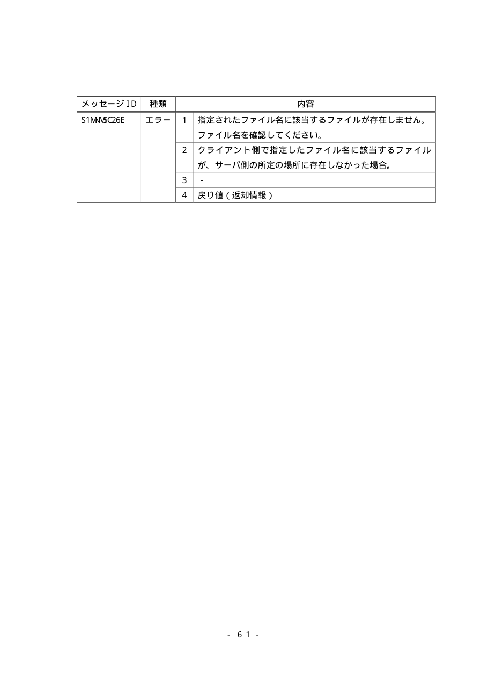
| 項番 | 項目名 | 属性 | 桁数 | 内容 | 必須 | 備考 | その他の列 |
|---|---|---|---|---|---|---|---|
| 1 | S1MM5C26E | 指定されたファイル名に該当するファイルが存在しません。ファイル名を確認してください。 | 種類: エラー | ||||
| 2 | S1MM5C26E | クライアント側で指定したファイル名に該当するファイルが、サーバ側の所定の場所に存在しなかった場合。 | 種類: エラー | ||||
| 3 | S1MM5C26E | - | 種類: エラー | ||||
| 4 | S1MM5C26E | 戻り値（返却情報） | 種類: エラー |
| 項番 | 項目名 | 属性 | 桁数 | 内容 | 必須 | 備考 | その他の列 |
|---|---|---|---|---|---|---|---|
| 1 | S1MNM5C26E | 指定されたファイル名に該当するファイルが存在しません。ファイル名を確認してください。 | 種類: エラー | ||||
| 2 | S1MNM5C26E | クライアント側で指定したファイル名に該当するファイルが、サーバ側の所定の場所に存在しなかった場合。 | 種類: エラー | ||||
| 3 | S1MNM5C26E | - | 種類: エラー | ||||
| 4 | S1MNM5C26E | 戻り値(返却情報) | 種類: エラー |
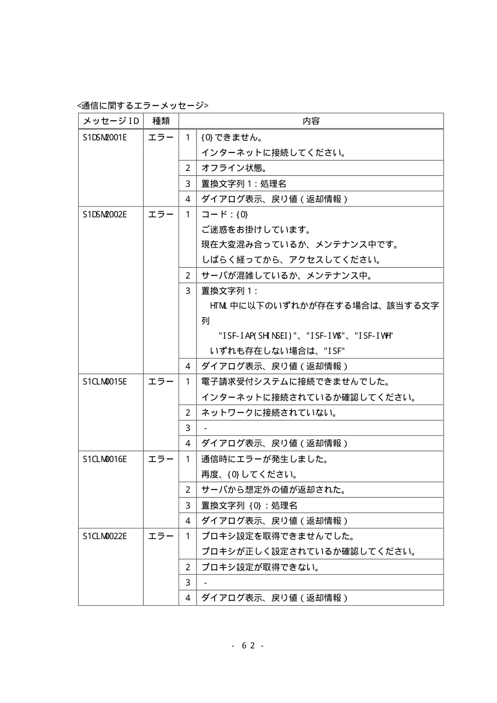
| 項番 | 項目名 | 属性 | 桁数 | 内容 | 必須 | 備考 | その他の列 |
|---|---|---|---|---|---|---|---|
| 1 | S1DSM2001E | {0}できません。 インターネットに接続してください。 | 種類: エラー | ||||
| 2 | S1DSM2001E | オフライン状態。 | 種類: エラー | ||||
| 3 | S1DSM2001E | 置換文字列1：処理名 | 種類: エラー | ||||
| 4 | S1DSM2001E | ダイアログ表示、戻り値（返却情報） | 種類: エラー | ||||
| 1 | S1DSM2002E | コード：{0} ご迷惑をお掛けしています。 現在大変混み合っているか、メンテナンス中です。 しばらく経ってから、アクセスしてください。 | 種類: エラー | ||||
| 2 | S1DSM2002E | サーバが混雑しているか、メンテナンス中。 | 種類: エラー | ||||
| 3 | S1DSM2002E | 置換文字列1： HTML 中に以下のいずれかが存在する場合は、該当する文字列 "ISF-IAP(SHINSEI)"、"ISF-IWB"、"ISF-IWH" いずれも存在しない場合は、"ISF" | 種類: エラー | ||||
| 4 | S1DSM2002E | ダイアログ表示、戻り値（返却情報） | 種類: エラー | ||||
| 1 | S1CLM0015E | 電子請求受付システムに接続できませんでした。 インターネットに接続されているか確認してください。 | 種類: エラー | ||||
| 2 | S1CLM0015E | ネットワークに接続されていない。 | 種類: エラー | ||||
| 3 | S1CLM0015E | - | 種類: エラー | ||||
| 4 | S1CLM0015E | ダイアログ表示、戻り値（返却情報） | 種類: エラー | ||||
| 1 | S1CLM0016E | 通信時にエラーが発生しました。 再度、{0}してください。 | 種類: エラー | ||||
| 2 | S1CLM0016E | サーバから想定外の値が返却された。 | 種類: エラー | ||||
| 3 | S1CLM0016E | 置換文字列 {0}：処理名 | 種類: エラー | ||||
| 4 | S1CLM0016E | ダイアログ表示、戻り値（返却情報） | 種類: エラー | ||||
| 1 | S1CLM0022E | プロキシ設定を取得できませんでした。 プロキシが正しく設定されているか確認してください。 | 種類: エラー | ||||
| 2 | S1CLM0022E | プロキシ設定が取得できない。 | 種類: エラー | ||||
| 3 | S1CLM0022E | - | 種類: エラー | ||||
| 4 | S1CLM0022E | ダイアログ表示、戻り値（返却情報） | 種類: エラー |
| 項番 | 項目名 | 属性 | 桁数 | 内容 | 必須 | 備考 | その他の列 |
|---|---|---|---|---|---|---|---|
| 1 | S1DSM2001E | エラー | {0}できません。 インターネットに接続してください。 | ||||
| 2 | S1DSM2001E | エラー | オフライン状態。 | ||||
| 3 | S1DSM2001E | エラー | 置換文字列1:処理名 | ||||
| 4 | S1DSM2001E | エラー | ダイアログ表示、戻り値(返却情報) | ||||
| 1 | S1DSM2002E | エラー | コード:{0} ご迷惑をお掛けしています。 現在大変混み合っているか、メンテナンス中です。 しばらく経ってから、アクセスしてください。 | ||||
| 2 | S1DSM2002E | エラー | サーバが混雑しているか、メンテナンス中。 | ||||
| 3 | S1DSM2002E | エラー | 置換文字列1: HTML中に以下のいずれかが存在する場合は、該当する文字列 "ISF-IAP(SHINSEI)"、"ISF-IWS"、"ISF-IWH" いずれも存在しない場合は、"ISF" | ||||
| 4 | S1DSM2002E | エラー | ダイアログ表示、戻り値(返却情報) | ||||
| 1 | S1CLM0015E | エラー | 電子請求受付システムに接続できませんでした。 インターネットに接続されているか確認してください。 | ||||
| 2 | S1CLM0015E | エラー | ネットワークに接続されていない。 | ||||
| 3 | S1CLM0015E | エラー | - | ||||
| 4 | S1CLM0015E | エラー | ダイアログ表示、戻り値(返却情報) | ||||
| 1 | S1CLM0016E | エラー | 通信時にエラーが発生しました。 再度、{0}してください。 | ||||
| 2 | S1CLM0016E | エラー | サーバから想定外の値が返却された。 | ||||
| 3 | S1CLM0016E | エラー | 置換文字列 {0}:処理名 | ||||
| 4 | S1CLM0016E | エラー | ダイアログ表示、戻り値(返却情報) | ||||
| 1 | S1CLM0022E | エラー | プロキシ設定を取得できませんでした。 プロキシが正しく設定されているか確認してください。 | ||||
| 2 | S1CLM0022E | エラー | プロキシ設定が取得できない。 | ||||
| 3 | S1CLM0022E | エラー | - | ||||
| 4 | S1CLM0022E | エラー | ダイアログ表示、戻り値(返却情報) |
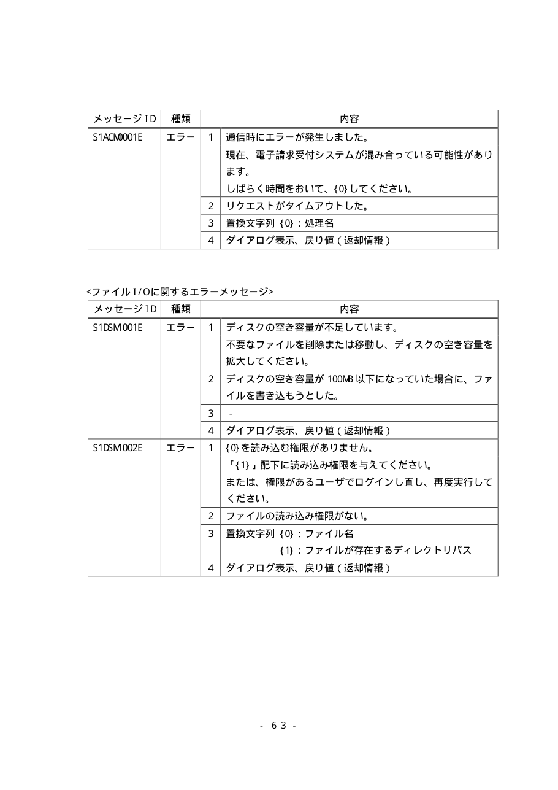
| 項番 | 項目名 | 属性 | 桁数 | 内容 | 必須 | 備考 | その他の列 |
|---|---|---|---|---|---|---|---|
| 1 | S1ACM0001E | 通信時にエラーが発生しました。 現在、電子請求受付システムが混み合っている可能性があります。 しばらく時間をおいて、{0}してください。 | 種類: エラー | ||||
| 2 | S1ACM0001E | リクエストがタイムアウトした。 | 種類: エラー | ||||
| 3 | S1ACM0001E | 置換文字列 {0}：処理名 | 種類: エラー | ||||
| 4 | S1ACM0001E | ダイアログ表示、戻り値（返却情報） | 種類: エラー |
| 項番 | 項目名 | 属性 | 桁数 | 内容 | 必須 | 備考 | その他の列 |
|---|---|---|---|---|---|---|---|
| 1 | S1DSM001E | ディスクの空き容量が不足しています。 不要なファイルを削除または移動し、ディスクの空き容量を拡大してください。 | 種類: エラー | ||||
| 2 | S1DSM001E | ディスクの空き容量が 100MB 以下になっていた場合に、ファイルを書き込もうとした。 | 種類: エラー | ||||
| 3 | S1DSM001E | - | 種類: エラー | ||||
| 4 | S1DSM001E | ダイアログ表示、戻り値（返却情報） | 種類: エラー | ||||
| 1 | S1DSM002E | {0}を読み込む権限がありません。 「{1}」配下に読み込み権限を与えてください。 または、権限があるユーザでログインし直し、再度実行してください。 | 種類: エラー | ||||
| 2 | S1DSM002E | ファイルの読み込み権限がない。 | 種類: エラー | ||||
| 3 | S1DSM002E | 置換文字列 {0}：ファイル名 {1}：ファイルが存在するディレクトリパス | 種類: エラー | ||||
| 4 | S1DSM002E | ダイアログ表示、戻り値（返却情報） | 種類: エラー |
| 項番 | 項目名 | 属性 | 桁数 | 内容 | 必須 | 備考 | その他の列 |
|---|---|---|---|---|---|---|---|
| 1 | S1ACM0001E | エラー | 通信時にエラーが発生しました。 現在、電子請求受付システムが混み合っている可能性があります。 しばらく時間をおいて、{0}してください。 | ||||
| 2 | S1ACM0001E | エラー | リクエストがタイムアウトした。 | ||||
| 3 | S1ACM0001E | エラー | 置換文字列 {0}：処理名 | ||||
| 4 | S1ACM0001E | エラー | ダイアログ表示、戻り値（返却情報） |
| 項番 | 項目名 | 属性 | 桁数 | 内容 | 必須 | 備考 | その他の列 |
|---|---|---|---|---|---|---|---|
| 1 | S1DSM1001E | エラー | ディスクの空き容量が不足しています。 不要なファイルを削除または移動し、ディスクの空き容量を拡大してください。 | ||||
| 2 | S1DSM1001E | エラー | ディスクの空き容量が100MB以下になっていた場合に、ファイルを書き込もうとした。 | ||||
| 3 | S1DSM1001E | エラー | - | ||||
| 4 | S1DSM1001E | エラー | ダイアログ表示、戻り値（返却情報） | ||||
| 1 | S1DSM1002E | エラー | {0}を読み込む権限がありません。 「{1}」配下に読み込み権限を与えてください。 または、権限があるユーザでログインし直し、再度実行してください。 | ||||
| 2 | S1DSM1002E | エラー | ファイルの読み込み権限がない。 | ||||
| 3 | S1DSM1002E | エラー | 置換文字列 {0}：ファイル名 {1}：ファイルが存在するディレクトリパス | ||||
| 4 | S1DSM1002E | エラー | ダイアログ表示、戻り値（返却情報） |
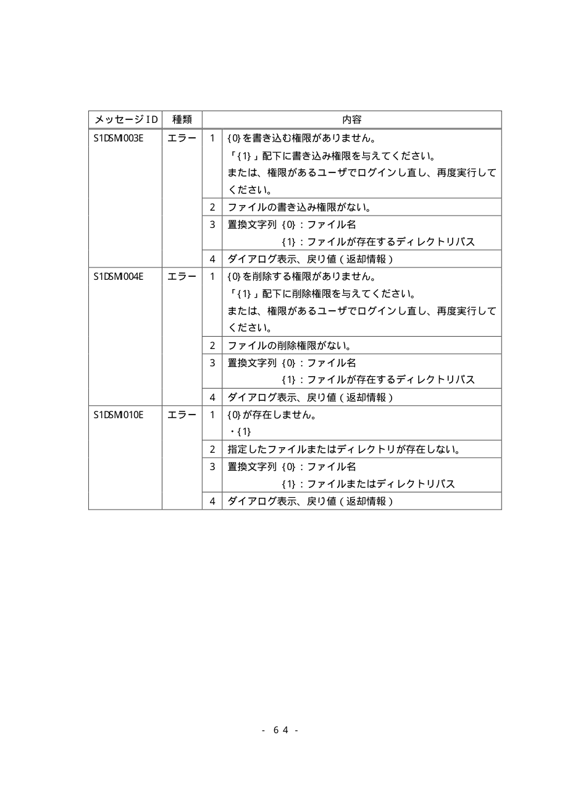
| 項番 | 項目名 | 属性 | 桁数 | 内容 | 必須 | 備考 | その他の列 |
|---|---|---|---|---|---|---|---|
| 1 | S1DSM003E | {0}を書き込む権限がありません。 「{1}」配下に書き込み権限を与えてください。 または、権限があるユーザでログインし直し、再度実行してください。 | 種類: エラー | ||||
| 2 | S1DSM003E | ファイルの書き込み権限がない。 | 種類: エラー | ||||
| 3 | S1DSM003E | 置換文字列 {0}：ファイル名 {1}：ファイルが存在するディレクトリパス | 種類: エラー | ||||
| 4 | S1DSM003E | ダイアログ表示、戻り値(返却情報) | 種類: エラー | ||||
| 1 | S1DSM004E | {0}を削除する権限がありません。 「{1}」配下に削除権限を与えてください。 または、権限があるユーザでログインし直し、再度実行してください。 | 種類: エラー | ||||
| 2 | S1DSM004E | ファイルの削除権限がない。 | 種類: エラー | ||||
| 3 | S1DSM004E | 置換文字列 {0}：ファイル名 {1}：ファイルが存在するディレクトリパス | 種類: エラー | ||||
| 4 | S1DSM004E | ダイアログ表示、戻り値(返却情報) | 種類: エラー | ||||
| 1 | S1DSM010E | {0}が存在しません。 ・{1} | 種類: エラー | ||||
| 2 | S1DSM010E | 指定したファイルまたはディレクトリが存在しない。 | 種類: エラー | ||||
| 3 | S1DSM010E | 置換文字列 {0}：ファイル名 {1}：ファイルまたはディレクトリパス | 種類: エラー | ||||
| 4 | S1DSM010E | ダイアログ表示、戻り値(返却情報) | 種類: エラー |
| 項番 | 項目名 | 属性 | 桁数 | 内容 | 必須 | 備考 | その他の列 |
|---|---|---|---|---|---|---|---|
| 1 | S1DSMI003E | エラー | {0}を書き込む権限がありません。 「{1}」配下に書き込み権限を与えてください。 または、権限があるユーザでログインし直し、再度実行してください。 | ||||
| 2 | S1DSMI003E | エラー | ファイルの書き込み権限がない。 | ||||
| 3 | S1DSMI003E | エラー | 置換文字列 {0}:ファイル名 {1}:ファイルが存在するディレクトリパス | ||||
| 4 | S1DSMI003E | エラー | ダイアログ表示、戻り値(返却情報) | ||||
| 1 | S1DSMI004E | エラー | {0}を削除する権限がありません。 「{1}」配下に削除権限を与えてください。 または、権限があるユーザでログインし直し、再度実行してください。 | ||||
| 2 | S1DSMI004E | エラー | ファイルの削除権限がない。 | ||||
| 3 | S1DSMI004E | エラー | 置換文字列 {0}:ファイル名 {1}:ファイルが存在するディレクトリパス | ||||
| 4 | S1DSMI004E | エラー | ダイアログ表示、戻り値(返却情報) | ||||
| 1 | S1DSMI010E | エラー | {0}が存在しません。 ・{1} | ||||
| 2 | S1DSMI010E | エラー | 指定したファイルまたはディレクトリが存在しない。 | ||||
| 3 | S1DSMI010E | エラー | 置換文字列 {0}:ファイル名 {1}:ファイルまたはディレクトリパス | ||||
| 4 | S1DSMI010E | エラー | ダイアログ表示、戻り値(返却情報) |
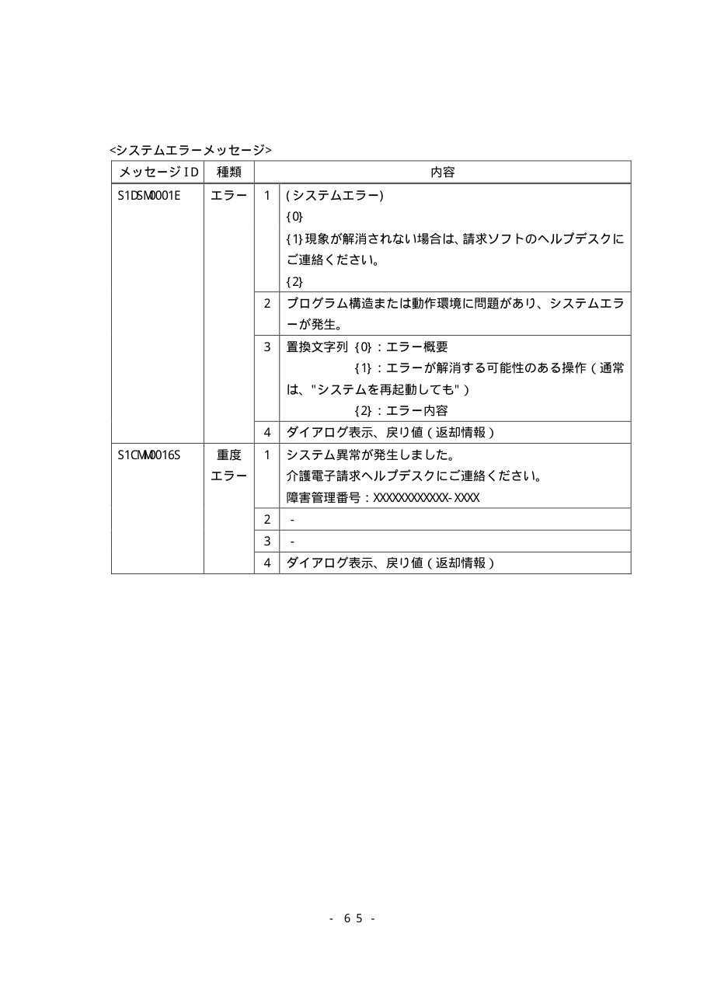
| 項番 | 項目名 | 属性 | 桁数 | 内容 | 必須 | 備考 | その他の列 |
|---|---|---|---|---|---|---|---|
| 1 | S1DSM0001E | (システムエラー) {0} {1}現象が解消されない場合は、請求ソフトのヘルプデスクにご連絡ください。 {2} | 種類: エラー | ||||
| 2 | S1DSM0001E | プログラム構造または動作環境に問題があり、システムエラーが発生。 | 種類: エラー | ||||
| 3 | S1DSM0001E | 置換文字列 {0}：エラー概要 {1}：エラーが解消する可能性のある操作（通常は、"システムを再起動しても"） {2}：エラー内容 | 種類: エラー | ||||
| 4 | S1DSM0001E | ダイアログ表示、戻り値（返却情報） | 種類: エラー | ||||
| 1 | S1CMM0016S | システム異常が発生しました。 介護電子請求ヘルプデスクにご連絡ください。 障害管理番号：XXXXXXXXXXXX-XXXX | 種類: 重度エラー | ||||
| 2 | S1CMM0016S | - | 種類: 重度エラー | ||||
| 3 | S1CMM0016S | - | 種類: 重度エラー | ||||
| 4 | S1CMM0016S | ダイアログ表示、戻り値（返却情報） | 種類: 重度エラー |
| 項番 | 項目名 | 属性 | 桁数 | 内容 | 必須 | 備考 | その他の列 |
|---|---|---|---|---|---|---|---|
| 1 | S1DSM0001E | (システムエラー) {0} {1}現象が解消されない場合は、請求ソフトのヘルプデスクにご連絡ください。 {2} | 種類: エラー | ||||
| 2 | S1DSM0001E | プログラム構造または動作環境に問題があり、システムエラーが発生。 | 種類: エラー | ||||
| 3 | S1DSM0001E | 置換文字列 {0}:エラー概要 {1}:エラーが解消する可能性のある操作(通常は、"システムを再起動しても") {2}:エラー内容 | 種類: エラー | ||||
| 4 | S1DSM0001E | ダイアログ表示、戻り値(返却情報) | 種類: エラー | ||||
| 1 | S1CMM0016S | システム異常が発生しました。 介護電子請求ヘルプデスクにご連絡ください。 障害管理番号:XXXXXXXXXXXX-XXXX | 種類: 重度エラー | ||||
| 2 | S1CMM0016S | - | 種類: 重度エラー | ||||
| 3 | S1CMM0016S | - | 種類: 重度エラー | ||||
| 4 | S1CMM0016S | ダイアログ表示、戻り値(返却情報) | 種類: 重度エラー |
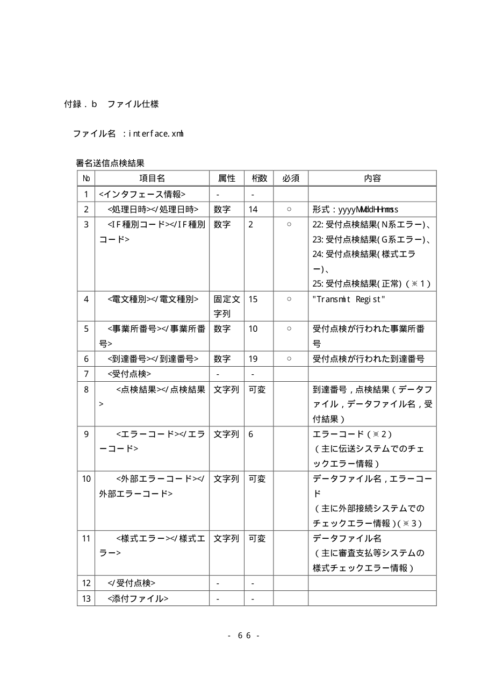
| 項番 | 項目名 | 属性 | 桁数 | 内容 | 必須 | 備考 | その他の列 |
|---|---|---|---|---|---|---|---|
| 1 | <インタフェース情報> | - | - | ||||
| 2 | <処理日時></処理日時> | 数字 | 14 | 形式：yyyyMMddHHmmss | ○ | ||
| 3 | <IF種別コード></IF種別コード> | 数字 | 2 | 22: 受付点検結果(N系エラー)、 23: 受付点検結果(G系エラー)、 24: 受付点検結果(様式エラー)、 25: 受付点検結果(正常) (※1) | ○ | ||
| 4 | <電文種別></電文種別> | 固定文字列 | 15 | "Transmit Regist" | ○ | ||
| 5 | <事業所番号></事業所番号> | 数字 | 10 | 受付点検が行われた事業所番号 | ○ | ||
| 6 | <到達番号></到達番号> | 数字 | 19 | 受付点検が行われた到達番号 | ○ | ||
| 7 | <受付点検> | - | - | ||||
| 8 | <点検結果></点検結果> | 文字列 | 可変 | 到達番号，点検結果(データファイル，データファイル名，受付結果) | |||
| 9 | <エラーコード></エラーコード> | 文字列 | 6 | エラーコード(※2) (主に伝送システムでのチェックエラー情報) | |||
| 10 | <外部エラーコード></外部エラーコード> | 文字列 | 可変 | データファイル名，エラーコード (主に外部接続システムでのチェックエラー情報)(※3) | |||
| 11 | <様式エラー></様式エラー> | 文字列 | 可変 | データファイル名 (主に審査支払等システムの様式チェックエラー情報) | |||
| 12 | </受付点検> | - | - | ||||
| 13 | <添付ファイル> | - | - |
| 項番 | 項目名 | 属性 | 桁数 | 内容 | 必須 | 備考 | その他の列 |
|---|---|---|---|---|---|---|---|
| 1 | <インタフェース情報> | - | - | ||||
| 2 | <処理日時></処理日時> | 数字 | 14 | 形式：yyyyMMddHHmmss | ○ | ||
| 3 | <IF種別コード></IF種別コード> | 数字 | 2 | 22:受付点検結果(N系エラー)、 23:受付点検結果(G系エラー)、 24:受付点検結果(様式エラー)、 25:受付点検結果(正常)(※1) | ○ | ||
| 4 | <電文種別></電文種別> | 固定文字列 | 15 | "Transmit Regist" | ○ | ||
| 5 | <事業所番号></事業所番号> | 数字 | 10 | 受付点検が行われた事業所番号 | ○ | ||
| 6 | <到達番号></到達番号> | 数字 | 19 | 受付点検が行われた到達番号 | ○ | ||
| 7 | <受付点検> | - | - | ||||
| 8 | <点検結果></点検結果> | 文字列 | 可変 | 到達番号,点検結果(データファイル,データファイル名,受付結果) | |||
| 9 | <エラーコード></エラーコード> | 文字列 | 6 | エラーコード(※2) (主に伝送システムでのチェックエラー情報) | |||
| 10 | <外部エラーコード></外部エラーコード> | 文字列 | 可変 | データファイル名,エラーコード (主に外部接続システムでのチェックエラー情報)(※3) | |||
| 11 | <様式エラー></様式エラー> | 文字列 | 可変 | データファイル名 (主に審査支払等システムの様式チェックエラー情報) | |||
| 12 | </受付点検> | - | - | ||||
| 13 | <添付ファイル> | - | - |
| 項番 | 項目名 | 属性 | 桁数 | 内容 | 必須 | 備考 | その他の列 |
|---|---|---|---|---|---|---|---|
| 14 | <ファイル名></ファイル名> | 文字列 | 10 | エラー情報ファイル名：CsvErr.txt（※4） | |||
| 15 | <ファイル名></ファイル名> | 文字列 | 16 | 拡張情報ファイル名：Transmiti nfo.txt（※4）（※5）（※6） | |||
| 16 | </添付ファイル> | - | - | ||||
| 17 | </インタフェース情報> | - | - |
| 項番 | 項目名 | 属性 | 桁数 | 内容 | 必須 | 備考 | その他の列 |
|---|---|---|---|---|---|---|---|
| 1 | <インタフェース情報> | - | - | ||||
| 2 | <処理日時></処理日時> | 数字 | 14 | 形式：yyyyMMddHHmmss | ○ | ||
| 3 | <IF種別コード></IF種別コード> | 数字 | 2 | 32: 取消結果(エラー)、 33: 取消結果(正常)（※1） | ○ | ||
| 4 | <電文種別></電文種別> | 固定文字列 | 15 | "Transmit DeleteRegist" | ○ | ||
| 5 | <事業所番号></事業所番号> | 数字 | 10 | 取消結果対象の事業所番号 | ○ | ||
| 6 | <到達番号></到達番号> | 数字 | 19 | 取消結果対象の到達番号 | ○ | ||
| 7 | <取消対象到達番号></取消対象到達番号> | 数字 | 19 | 取消対象の到達番号 | ○ | ||
| 8 | <エラーコード></エラーコード> | 文字列 | 6 | エラーコード（※2） | |||
| 9 | </インタフェース情報> | - | - |
| 項番 | 項目名 | 属性 | 桁数 | 内容 | 必須 | 備考 | その他の列 |
|---|---|---|---|---|---|---|---|
| 14 | <ファイル名></ファイル名> | 文字列 | 10 | エラー情報ファイル名：CsvErr.txt（※4） | |||
| 15 | <ファイル名></ファイル名> | 文字列 | 16 | 拡張情報ファイル名：Transmitinfo.txt（※4)(※5)（※6） | |||
| 16 | </添付ファイル> | - | - | ||||
| 17 | </インタフェース情報> | - | - |
| 項番 | 項目名 | 属性 | 桁数 | 内容 | 必須 | 備考 | その他の列 |
|---|---|---|---|---|---|---|---|
| 1 | <インタフェース情報> | - | - | ||||
| 2 | <処理日時></処理日時> | 数字 | 14 | 形式：yyyyMMddHHmmss | ○ | ||
| 3 | <IF種別コード></IF種別コード> | 数字 | 2 | 32:取消結果(ｴﾗｰ)、 33:取消結果(正常)（※1） | ○ | ||
| 4 | <電文種別></電文種別> | 固定文字列 | 15 | "TransmitDeleteRegist" | ○ | ||
| 5 | <事業所番号></事業所番号> | 数字 | 10 | 取消結果対象の事業所番号 | ○ | ||
| 6 | <到達番号></到達番号> | 数字 | 19 | 取消結果対象の到達番号 | ○ | ||
| 7 | <取消対象到達番号></取消対象到達番号> | 数字 | 19 | 取消対象の到達番号 | ○ | ||
| 8 | <エラーコード></エラーコード> | 文字列 | 6 | エラーコード（※2） | |||
| 9 | </インタフェース情報> | - | - |
| 項番 | 項目名 | 属性 | 桁数 | 内容 | 必須 | 備考 | その他の列 |
|---|---|---|---|---|---|---|---|
| 1 | <インタフェース情報> | - | - | ||||
| 2 | <処理日時></処理日時> | 数字 | 14 | 形式：yyyyMMddHHmmss | ○ | ||
| 3 | <IF種別コード></IF種別コード> | 数字 | 2 | 51: 返戻通知 53: 支払通知 （※1） | ○ | ||
| 4 | <電文種別></電文種別> | 固定文字列 | 15 | "Transmit Result" | ○ | ||
| 5 | <事業所番号></事業所番号> | 数字 | 10 | 返戻通知対象の事業所番号 | ○ | ||
| 6 | <審査年月></審査年月> | 数字 | 6 | 形式：yyyyMM | ○ | ||
| 7 | <添付ファイル> | - | - | ||||
| 8 | <ファイル名></ファイル名> | 文字列 | 可変長 | 交換情報ファイル名、ファイル名タグは複数指定可 最大桁数：24 | - | ||
| 9 | </添付ファイル> | - | - | ||||
| 10 | </インタフェース情報> | - | - |
| 項番 | 項目名 | 属性 | 桁数 | 内容 | 必須 | 備考 | その他の列 |
|---|---|---|---|---|---|---|---|
| 1 | <インタフェース情報> | - | - | ||||
| 2 | <処理日時></処理日時> | 数字 | 14 | 形式：yyyyMMddHHmmss | ○ | ||
| 3 | <IF種別コード></IF種別コード> | 数字 | 2 | 51: 返戻通知 53: 支払通知 （※1） | ○ | ||
| 4 | <電文種別></電文種別> | 固定文字列 | 15 | "Transmit Result" | ○ | ||
| 5 | <事業所番号></事業所番号> | 数字 | 10 | 返戻通知対象の事業所番号 | ○ | ||
| 6 | <審査年月></審査年月> | 数字 | 6 | 形式：yyyyMM | ○ | ||
| 7 | <添付ファイル> | - | - | ||||
| 8 | <ファイル名></ファイル名> | 文字列 | 可変長 | 交換情報ファイル名、ファイル名タグは複数指定可 最大桁数：24 | - | ||
| 9 | </添付ファイル> | - | - | ||||
| 10 | </インタフェース情報> | - | - |
| 項番 | 項目名 | 属性 | 桁数 | 内容 | 必須 | 備考 | その他の列 |
|---|---|---|---|---|---|---|---|
| 1 | 署名送信点検結果 | 事業所から送信された請求情報に対する受付結果情報N系（伝送）エラー | IF種別コード: 22 | ||||
| 2 | 署名送信点検結果 | 事業所から送信された請求情報に対する受付結果情報G系（外部）エラー | IF種別コード: 23 | ||||
| 3 | 署名送信点検結果 | 事業所から送信された請求情報に対する受付結果情報様式エラー | IF種別コード: 24 | ||||
| 4 | 署名送信点検結果 | 事業所から送信された請求情報に対する受付結果情報正常 | IF種別コード: 25 | ||||
| 5 | 署名送信取消結果 | 事業所から送信された請求情報に対する受付結果情報取消 NG | IF種別コード: 32 | ||||
| 6 | 署名送信取消結果 | 事業所から送信された請求情報に対する受付結果情報取消正常 | IF種別コード: 33 | ||||
| 7 | 通知文書ファイルダウンロード | 国保連合会から送信された返戻通知情報 | IF種別コード: 51 | ||||
| 8 | 通知文書ファイルダウンロード | 国保連合会から送信された支払通知情報 | IF種別コード: 53 |
| 項番 | 項目名 | 属性 | 桁数 | 内容 | 必須 | 備考 | その他の列 |
|---|---|---|---|---|---|---|---|
| 1 | 署名送信点検結果 | 事業所から送信された請求情報に対する受付結果情報 N系(伝送)エラー | IF種別コード: 22 | ||||
| 2 | 署名送信点検結果 | 事業所から送信された請求情報に対する受付結果情報 G系(外部)エラー | IF種別コード: 23 | ||||
| 3 | 署名送信点検結果 | 事業所から送信された請求情報に対する受付結果情報 様式エラー | IF種別コード: 24 | ||||
| 4 | 署名送信点検結果 | 事業所から送信された請求情報に対する受付結果情報 正常 | IF種別コード: 25 | ||||
| 5 | 署名送信取消結果 | 事業所から送信された請求情報に対する受付結果情報 取消NG | IF種別コード: 32 | ||||
| 6 | 署名送信取消結果 | 事業所から送信された請求情報に対する受付結果情報 取消正常 | IF種別コード: 33 | ||||
| 7 | 通知文書ファイルダウンロード | 国保連合会から送信された返戻通知情報 | IF種別コード: 51 | ||||
| 8 | 通知文書ファイルダウンロード | 国保連合会から送信された支払通知情報 | IF種別コード: 53 |
| 項番 | 項目名 | 属性 | 桁数 | 内容 | 必須 | 備考 | その他の列 |
|---|---|---|---|---|---|---|---|
| 1 | データファイル名 | エラーのデータファイル名を設定 | |||||
| 2 | エラー行番号 | エラー行番号は、送信されたファイル自体の先頭よりのレコード番号である。 コントロールレコードがファイルの第一レコードにあるが、このレコードが先頭レコード（行番号＝1）になる。 | |||||
| 3 | エラー項目番号 | エラー項目番号はデータレコードのデータ項目の番号である。 ※ データレコードはインタフェース仕様書共通編参照 | |||||
| 4 | エラーコード | 英数字4桁で審査エラーコードを設定。 | |||||
| 5 | エラー内容 | 日本語で審査エラー内容を設定。 |
| 項番 | 項目名 | 属性 | 桁数 | 内容 | 必須 | 備考 | その他の列 |
|---|---|---|---|---|---|---|---|
| 1 | エラーデータファイル名 | エラーのデータファイル名を設定 | |||||
| 2 | 交換情報識別番号 | 交換情報識別番号を設定 | |||||
| 3 | 事業所番号 | 事業所番号を設定 | |||||
| 4 | 証記載保険者番号 | 証記載保険者番号を設定 | |||||
| 5 | 被保険者番号 | 被保険者番号を設定 | |||||
| 6 | サービス提供年月 | サービス提供年月を設定 | |||||
| 7 | サービス種類 | サービス種類を設定 | |||||
| 8 | 項目名 | エラー項目名を設定 | |||||
| 9 | 項目値 | エラー項目値を設定 |
| 項番 | 項目名 | 属性 | 桁数 | 内容 | 必須 | 備考 | その他の列 |
|---|---|---|---|---|---|---|---|
| 1 | データファイル名 | エラーのデータファイル名を設定 | |||||
| 2 | エラー行番号 | エラー行番号は、送信されたファイル自体の先頭よりのレコード番号である。 コントロールレコードがファイルの第一レコードにあるが、このレコードが先頭レコード(行番号=1)になる。 | |||||
| 3 | エラー項目番号 | エラー項目番号はデータレコードのデータ項目の番号である。 ※ データレコードはインタフェース仕様書共通編参照 | |||||
| 4 | エラーコード | 英数字4桁で審査エラーコードを設定。 | |||||
| 5 | エラー内容 | 日本語で審査エラー内容を設定。 |
| 項番 | 項目名 | 属性 | 桁数 | 内容 | 必須 | 備考 | その他の列 |
|---|---|---|---|---|---|---|---|
| 1 | エラーデータファイル名 | エラーのデータファイル名を設定 | |||||
| 2 | 交換情報識別番号 | 交換情報識別番号を設定 | |||||
| 3 | 事業所番号 | 事業所番号を設定 | |||||
| 4 | 証記載保険者番号 | 証記載保険者番号を設定 | |||||
| 5 | 被保険者番号 | 被保険者番号を設定 | |||||
| 6 | サービス提供年月 | サービス提供年月を設定 | |||||
| 7 | サービス種類 | サービス種類を設定 | |||||
| 8 | 項目名 | エラー項目名を設定 | |||||
| 9 | 項目値 | エラー項目値を設定 |
| 項番 | 項目名 | 属性 | 桁数 | 内容 | 必須 | 備考 | その他の列 |
|---|---|---|---|---|---|---|---|
| 10 | エラーコード | 英数字4桁で審査エラーコードを設定 | |||||
| 11 | エラー内容 | 日本語で審査エラー内容を設定 |
| 項番 | 項目名 | 属性 | 桁数 | 内容 | 必須 | 備考 | その他の列 |
|---|---|---|---|---|---|---|---|
| 10 | エラーコード | 英数字4桁で審査エラーコードを設定 | |||||
| 11 | エラー内容 | 日本語で審査エラー内容を設定 |
| 項番 | 項目名 | 属性 | 桁数 | 内容 | 必須 | 備考 | その他の列 |
|---|---|---|---|---|---|---|---|
| N10212 | データ取り消し電文で到達番号の事業者と取消対象到達番号の事業者は同じでなければなりません。 | ||||||
| NB0103 | データ送信電文の拡張子を除く添付ファイル名の桁数が規定桁（半角8桁）を超えています。 | ||||||
| NB0105 | データ送信電文の添付ファイルサイズが0バイトです。 | ||||||
| NB0201 | データ取り消し電文に添付ファイルが設定されています。 | ||||||
| NB0107 | データ送信電文の時、既に同じ添付ファイル名が存在します。 | ||||||
| NB0108 | 添付ファイル名に使用できない文字が存在します。 | ||||||
| N40101 | 送付元事業所が台帳データベースに登録されていません。 | ||||||
| NB1106 | Interface.xml ファイルの<添付ファイル名>タグ数と添付ファイル数が違っています。 | ||||||
| N40103 | データ取り消し電文の取消対象到達番号に該当するデータ送信情報がデータベースに登録されていません。（削除する該当のデータ送信電文がない） | ||||||
| NB0109 | データ送信電文の添付ファイルの拡張子が”CSV”ではありません。 |
| 項番 | 項目名 | 属性 | 桁数 | 内容 | 必須 | 備考 | その他の列 |
|---|---|---|---|---|---|---|---|
| N10212 | データ取り消し電文で到達番号の事業者と取消対象到達番号の事業者は同じでなければなりません。 | ||||||
| NB0103 | データ送信電文の拡張子を除く添付ファイル名の桁数が規定桁(半角8桁)を超えています。 | ||||||
| NB0105 | データ送信電文の添付ファイルサイズが0バイトです。 | ||||||
| NB0201 | データ取り消し電文に添付ファイルが設定されています。 | ||||||
| NB0107 | データ送信電文の時、既に同じ添付ファイル名が存在します。 | ||||||
| NB0108 | 添付ファイル名に使用できない文字が存在します。 | ||||||
| N40101 | 送付元事業所が台帳データベースに登録されていません。 | ||||||
| NB1106 | Interface.xml ファイルの<添付ファイル名>タグ数と添付ファイル数が違っています。 | ||||||
| N40103 | データ取り消し電文の取消対象到達番号に該当するデータ送信情報がデータベースに登録されていません。(削除する該当のデータ送信電文がない) | ||||||
| NB0109 | データ送信電文の添付ファイルの拡張子が”CSV”ではありません。 |
| 項番 | 項目名 | 属性 | 桁数 | 内容 | 必須 | 備考 | その他の列 |
|---|---|---|---|---|---|---|---|
| G00101 | レコード種別の桁数に誤りがあります。 | ||||||
| G00102 | レコード種別に全角文字が使用されています。 | ||||||
| G00103 | レコード種別が数字ではありません。 | ||||||
| G00104 | レコード種別に誤りがあります。 | ||||||
| G10201 | コントロールレコードのレコード番号の桁数に誤りがあります。 | ||||||
| G10202 | コントロールレコードのレコード番号に全角文字が使用されています。 | ||||||
| G10203 | コントロールレコードのレコード番号が数字ではありません。 | ||||||
| G10204 | コントロールレコードのレコード番号に誤りがあります。 | ||||||
| G10205 | コントロールレコードのレコード番号が通番ではありません。 | ||||||
| G10301 | コントロールレコードのボリューム通番の桁数に誤りがあります。 | ||||||
| G10302 | コントロールレコードのボリューム通番に全角文字が使用されています。 | ||||||
| G10303 | コントロールレコードのボリューム通番が数字ではありません。 | ||||||
| G10304 | コントロールレコードのボリューム通番に誤りがあります。 | ||||||
| G10401 | コントロールレコードのレコード件数の桁数に誤りがあります。 | ||||||
| G10402 | コントロールレコードのレコード件数に全角文字が使用されています。 | ||||||
| G10403 | コントロールレコードのレコード件数が数字ではありません。 | ||||||
| G10404 | コントロールレコードのレコード件数に誤りがあります。 | ||||||
| G10501 | コントロールレコードのデータ種別の桁数に誤りがあります。 | ||||||
| G10502 | コントロールレコードのデータ種別に全角文字が使用されています。 | ||||||
| G10503 | コントロールレコードのデータ種別が数字ではありません。 | ||||||
| G10504 | コントロールレコードのデータ種別に誤りがあります。 | ||||||
| G10601 | コントロールレコードの福祉事務所特定番号の桁数に誤りがあります。 | ||||||
| G10602 | コントロールレコードの福祉事務所特定番号に全角文字が使用されています。 | ||||||
| G10603 | コントロールレコードの福祉事務所特定番号が数字ではありません。 | ||||||
| G10604 | コントロールレコードの福祉事務所特定番号に誤りがあります。 | ||||||
| G10610 | コントロールレコードの福祉事務所特定番号は存在しません。 | ||||||
| G10701 | コントロールレコードの保険者番号の桁数に誤りがあります。 | ||||||
| G10702 | コントロールレコードの保険者番号に全角文字が使用されています。 | ||||||
| G10703 | コントロールレコードの保険者番号が数字ではありません。 |
| 項番 | 項目名 | 属性 | 桁数 | 内容 | 必須 | 備考 | その他の列 |
|---|---|---|---|---|---|---|---|
| G00101 | レコード種別の桁数に誤りがあります。 | ||||||
| G00102 | レコード種別に全角文字が使用されています。 | ||||||
| G00103 | レコード種別が数字ではありません。 | ||||||
| G00104 | レコード種別に誤りがあります。 | ||||||
| G10201 | コントロールレコードのレコード番号の桁数に誤りがあります。 | ||||||
| G10202 | コントロールレコードのレコード番号に全角文字が使用されています。 | ||||||
| G10203 | コントロールレコードのレコード番号が数字ではありません。 | ||||||
| G10204 | コントロールレコードのレコード番号に誤りがあります。 | ||||||
| G10205 | コントロールレコードのレコード番号が通番ではありません。 | ||||||
| G10301 | コントロールレコードのボリューム通番の桁数に誤りがあります。 | ||||||
| G10302 | コントロールレコードのボリューム通番に全角文字が使用されています。 | ||||||
| G10303 | コントロールレコードのボリューム通番が数字ではありません。 | ||||||
| G10304 | コントロールレコードのボリューム通番に誤りがあります。 | ||||||
| G10401 | コントロールレコードのレコード件数の桁数に誤りがあります。 | ||||||
| G10402 | コントロールレコードのレコード件数に全角文字が使用されています。 | ||||||
| G10403 | コントロールレコードのレコード件数が数字ではありません。 | ||||||
| G10404 | コントロールレコードのレコード件数に誤りがあります。 | ||||||
| G10501 | コントロールレコードのデータ種別の桁数に誤りがあります。 | ||||||
| G10502 | コントロールレコードのデータ種別に全角文字が使用されています。 | ||||||
| G10503 | コントロールレコードのデータ種別が数字ではありません。 | ||||||
| G10504 | コントロールレコードのデータ種別に誤りがあります。 | ||||||
| G10601 | コントロールレコードの福祉事務所特定番号の桁数に誤りがあります。 | ||||||
| G10602 | コントロールレコードの福祉事務所特定番号に全角文字が使用されています。 | ||||||
| G10603 | コントロールレコードの福祉事務所特定番号が数字ではありません。 | ||||||
| G10604 | コントロールレコードの福祉事務所特定番号に誤りがあります。 | ||||||
| G10610 | コントロールレコードの福祉事務所特定番号は存在しません。 | ||||||
| G10701 | コントロールレコードの保険者番号の桁数に誤りがあります。 | ||||||
| G10702 | コントロールレコードの保険者番号に全角文字が使用されています。 | ||||||
| G10703 | コントロールレコードの保険者番号が数字ではありません。 |
| 項番 | 項目名 | 属性 | 桁数 | 内容 | 必須 | 備考 | その他の列 |
|---|---|---|---|---|---|---|---|
| G20205 | データレコードのレコード番号が通番ではありません。 | ||||||
| G30201 | エンドレコードのレコード番号の桁数に誤りがあります。 | ||||||
| G30202 | エンドレコードのレコード番号に全角文字が使用されています。 | ||||||
| G30203 | エンドレコードのレコード番号が数字ではありません。 | ||||||
| G30204 | エンドレコードのレコード番号に誤りがあります。 | ||||||
| G30205 | エンドレコードのレコード番号が通番ではありません。 | ||||||
| G90201 | 事業者番号 / 保険者番号が指定されていません。 | ||||||
| G90202 | 事業者番号 / 保険者番号の指定方法に誤りがあります。 | ||||||
| G90203 | レコード件数に誤りがあります。 | ||||||
| G90204 | エンドレコードが存在しません。 | ||||||
| G90301 | 同一ーのファイルがすでに登録されています。 | ||||||
| G90401 | テスト機能での処理結果です。交換情報に様式エラーはありません。 | ||||||
| G90402 | テスト機能での処理結果です。交換情報に様式エラーが存在します。 | ||||||
| G90901 | レコード内に制御文字が設定されています。 | ||||||
| G90921 | レコード内の文字コードがUni codeで作成されています。 交換情報はシフトＪＩＳコードで作成してください。 | ||||||
| G90922 | レコード内の文字コードがJISコードで作成されています。 交換情報はシフトＪＩＳコードで作成してください。 | ||||||
| G99999 | その他の外部接続チェックのエラーがあります。 |
| 項番 | 項目名 | 属性 | 桁数 | 内容 | 必須 | 備考 | その他の列 |
|---|---|---|---|---|---|---|---|
| G20205 | データレコードのレコード番号が通番ではありません。 | ||||||
| G30201 | エンドレコードのレコード番号の桁数に誤りがあります。 | ||||||
| G30202 | エンドレコードのレコード番号に全角文字が使用されています。 | ||||||
| G30203 | エンドレコードのレコード番号が数字ではありません。 | ||||||
| G30204 | エンドレコードのレコード番号に誤りがあります。 | ||||||
| G30205 | エンドレコードのレコード番号が通番ではありません。 | ||||||
| G90201 | 事業者番号/保険者番号が指定されていません。 | ||||||
| G90202 | 事業者番号/保険者番号の指定方法に誤りがあります。 | ||||||
| G90203 | レコード件数に誤りがあります。 | ||||||
| G90204 | エンドレコードが存在しません。 | ||||||
| G90301 | 同一のファイルがすでに登録されています。 | ||||||
| G90401 | テスト機能での処理結果です。交換情報に様式エラーはありません。 | ||||||
| G90402 | テスト機能での処理結果です。交換情報に様式エラーが存在します。 | ||||||
| G90901 | レコード内に制御文字が設定されています。 | ||||||
| G90921 | レコード内の文字コードがUnicodeで作成されています。 交換情報はシフトJISコードで作成してください。 | ||||||
| G90922 | レコード内の文字コードがJISコードで作成されています。 交換情報はシフトJISコードで作成してください。 | ||||||
| G99999 | その他の外部接続チェックのエラーがあります。 |
| 項番 | 項目名 | 属性 | 桁数 | 内容 | 必須 | 備考 | その他の列 |
|---|---|---|---|---|---|---|---|
| 受付データファイル名 | データファイル名を設定 | ||||||
| 受付交換情報識別番号 | データ種別を設定 | ||||||
| 全レコード件数 | レコード件数を設定 | ||||||
| 明細件数 | 明細件数を設定 請求書、給付管理票、再審査申立書以外の場合は’-‘を設定 |
| 項番 | 項目名 | 属性 | 桁数 | 内容 | 必須 | 備考 | その他の列 |
|---|---|---|---|---|---|---|---|
| エラーデータファイル名 | データファイル名を設定 | ||||||
| 交換情報識別番号 | 交換情報識別番号を設定、項目値が識別できない場合は’-‘を設定 | ||||||
| 事業所番号 | 事業所番号を設定、項目値が識別できない場合は’-‘を設定 | ||||||
| 証記載保険者番号 | 証記載保険者番号を設定、項目値が識別できない場合は’-‘を設定 | ||||||
| 被保険者番号 | 被保険者番号を設定、項目値が識別できない場合は’-‘を設定 | ||||||
| サービス提供年月 | サービス提供年月を設定、項目値が識別できない場合は’-‘を設定 | ||||||
| サービス種類 | サービス種類を設定、項目値が識別できない場合は’-‘を設定 | ||||||
| 項目名 | エラー項目名を設定、項目値が識別できない場合は’-‘を設定 | ||||||
| 項目値 | エラー項目値を設定、項目値が識別できない場合は’-‘を設定 | ||||||
| エラーコード | 審査エラーコードを設定 | ||||||
| エラー内容 | 日本語で審査エラー内容を設定 |
| 項番 | 項目名 | 属性 | 桁数 | 内容 | 必須 | 備考 | その他の列 |
|---|---|---|---|---|---|---|---|
| 受付データファイル名 | データファイル名を設定 | ||||||
| 受付交換情報識別番号 | データ種別を設定 | ||||||
| 全レコード件数 | レコード件数を設定 | ||||||
| 明細件数 | 明細件数を設定 請求書、給付管理票、再審査申立書以外の場合は'-'を設定 |
| 項番 | 項目名 | 属性 | 桁数 | 内容 | 必須 | 備考 | その他の列 |
|---|---|---|---|---|---|---|---|
| エラーデータファイル名 | データファイル名を設定 | ||||||
| 交換情報識別番号 | 交換情報識別番号を設定、項目値が識別できない場合は'-'を設定 | ||||||
| 事業所番号 | 事業所番号を設定、項目値が識別できない場合は'-'を設定 | ||||||
| 証記載保険者番号 | 証記載保険者番号を設定、項目値が識別できない場合は'-'を設定 | ||||||
| 被保険者番号 | 被保険者番号を設定、項目値が識別できない場合は'-'を設定 | ||||||
| サービス提供年月 | サービス提供年月を設定、項目値が識別できない場合は'-'を設定 | ||||||
| サービス種類 | サービス種類を設定、項目値が識別できない場合は'-'を設定 | ||||||
| 項目名 | エラー項目名を設定、項目値が識別できない場合は'-'を設定 | ||||||
| 項目値 | エラー項目値を設定、項目値が識別できない場合は'-'を設定 | ||||||
| エラーコード | 審査エラーコードを設定 | ||||||
| エラー内容 | 日本語で審査エラー内容を設定 |
| 項番 | 項目名 | 属性 | 桁数 | 内容 | 必須 | 備考 | その他の列 |
|---|---|---|---|---|---|---|---|
| 1 | パスワード | 英数字 | 16 | 電子請求受付システムにログインするユーザ IDのパスワード。※1 | ○ | 型: String 最小桁数: 8 |
| 項番 | 項目名 | 属性 | 桁数 | 内容 | 必須 | 備考 | その他の列 |
|---|---|---|---|---|---|---|---|
| 1 | パスワード | 英数字 | 電子請求受付システムにログインするユーザ IDのパスワード。※1 | ○ | 型: String 最小桁数: 8 最大桁数: 16 |
| 項番 | 項目名 | 属性 | 桁数 | 内容 | 必須 | 備考 | その他の列 |
|---|---|---|---|---|---|---|---|
| 2 | 警告発生時継続フラグ | - | - | 警告発生時に処理を継続する場合はTrue。※2 (初期値はFalse) | ○ | 型: Boolean 最小桁数: - | |
| 3 | Proxy 認証用ユーザ ID | 混在 | 16 | Proxy 認証用のユーザ ID。 | ※3 | 型: String 最小桁数: - | |
| 4 | Proxy 認証用パスワード | 混在 | 32 | Proxy 認証用のパスワード。 | ※3 | 型: String 最小桁数: - |
| 項番 | 項目名 | 属性 | 桁数 | 内容 | 必須 | 備考 | その他の列 |
|---|---|---|---|---|---|---|---|
| 2 | 警告発生時継続フラグ | - | - | 警告発生時に処理を継続する場合はTrue。※2 (初期値はFalse) | ○ | 型: Boolean 最小桁数: - | |
| 3 | Proxy認証用ユーザID | 混在 | 16 | Proxy認証用のユーザID。 | ※3 | 型: String 最小桁数: - | |
| 4 | Proxy認証用パスワード | 混在 | 32 | Proxy認証用のパスワード。 | ※3 | 型: String 最小桁数: - |
| 項番 | 項目名 | 属性 | 桁数 | 内容 | 必須 | 備考 | その他の列 |
|---|---|---|---|---|---|---|---|
| 1 | 到達確認情報 | Stream | 署名送信時（サイレントモード未使用時）に表示される到達結果画面を、HTML情報（※1）として返却。 | 最小桁数: - 最大桁数: - |
| 項番 | 項目名 | 属性 | 桁数 | 内容 | 必須 | 備考 | その他の列 |
|---|---|---|---|---|---|---|---|
| 1 | メッセージID | 処理結果が到達エラーの場合、メッセージID。 ※「３．４．１．１ 署名送信」の戻り値と同様の内容。 | |||||
| 2 | メッセージ | 処理結果が到達エラーの場合、メッセージ。 ※「３．４．１．１ 署名送信」の戻り値と同様の内容。 | |||||
| 3 | 到達番号 | 到達番号。 ※「３．４．１．１ 署名送信」の戻り値と同様の内容。 | |||||
| 4 | 請求先国保連合会名 | 請求先の国保連合会名称。 | |||||
| 5 | 到達日時 | 到達日時。 ※「３．４．１．１ 署名送信」の戻り値と同様の内容。 | |||||
| 6 | 事業所番号 | 請求情報に設定されていた事業所番号。 | |||||
| 7 | 請求年月 | 請求情報に設定されていた処理対象年月。 | |||||
| 8 | 請求書類名 | 請求情報の名称。 | |||||
| 9 | 件数 | 請求情報の件数。 | |||||
| 10 | お知らせ | 請求ユーザに対し通知が必要なお知らせ。(※２) |
| 項番 | 項目名 | 属性 | 桁数 | 内容 | 必須 | 備考 | その他の列 |
|---|---|---|---|---|---|---|---|
| 1 | 到達確認情報 | Stream | 署名送信時(サイレントモード未使用時)に表示される到達結果画面を、HTML情報(※1)として返却。 | 最小桁数: - 最大桁数: - |
| 項番 | 項目名 | 属性 | 桁数 | 内容 | 必須 | 備考 | その他の列 |
|---|---|---|---|---|---|---|---|
| 1 | メッセージID | 処理結果が到達エラーの場合、メッセージID。 ※「3.4.1.1 署名送信」の戻り値と同様の内容。 | |||||
| 2 | メッセージ | 処理結果が到達エラーの場合、メッセージ。 ※「3.4.1.1 署名送信」の戻り値と同様の内容。 | |||||
| 3 | 到達番号 | 到達番号。 ※「3.4.1.1 署名送信」の戻り値と同様の内容。 | |||||
| 4 | 請求先国保連合会名 | 請求先の国保連合会名称。 | |||||
| 5 | 到達日時 | 到達日時。 ※「3.4.1.1 署名送信」の戻り値と同様の内容。 | |||||
| 6 | 事業所番号 | 請求情報に設定されていた事業所番号。 | |||||
| 7 | 請求年月 | 請求情報に設定されていた処理対象年月。 | |||||
| 8 | 請求書類名 | 請求情報の名称。 | |||||
| 9 | 件数 | 請求情報の件数。 | |||||
| 10 | お知らせ | 請求ユーザに対し通知が必要なお知らせ。(※2) |